扉页
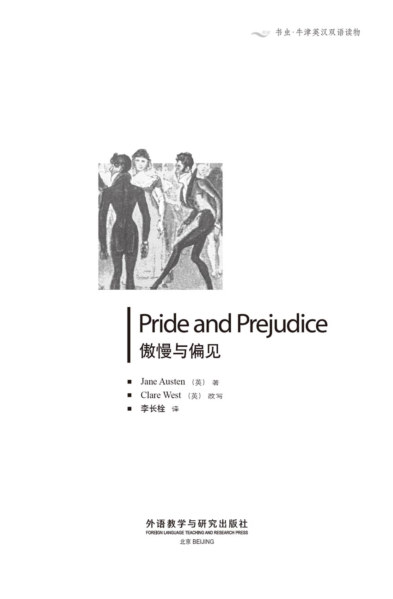
版权页
京权图字01-96-1589
Originally published by Oxford University Press, Great Clarendon Street, Oxford. © 1995
This edition is licensed for sale in the People's Republic of China only and not for export therefrom.
'Oxford' is a registered trademark of Oxford University Press.
图书在版编目（CIP）数据
傲慢与偏见＝Pride and Prejudice／（英）奥斯汀（Auten, J. ）著；（英）韦斯特（West, C. ）改写；李长栓译．—北京：外语教学与研究出版社．1996.12（2014.10 重印）
（书虫·牛津英汉双语读物）
ISBN 978-7-5600-1178-3
Ⅰ．傲… Ⅱ．①奥…②韦…③李… Ⅲ．小说—对照读物—英、汉 Ⅳ．H319.4：I
中国版本图书馆CIP数据核字（96）第25588号
出版人： 蔡剑峰
责任编辑：王霖霖
出版发行：外语教学与研究出版社
社 址：北京市西三环北路19号（100089）
网 址：http://www.fltrp.com
版 次：1997年3月第1版
书 号：ISBN 978-7-5600-1178-3
* * *
凡侵权、盗版书籍线索, 请联系我社法律事务部
举报电话：（010）88817519
电子邮箱：banquan@fltrp.com
法律顾问：立方律师事务所 刘旭东律师
中咨律师事务所 殷 斌律师
简介
简 介
“家产万贯而又尚未婚配的男人一定需要一位贤内助，这是一条世界上尽人皆知的真理。”因此，当这样一位男人搬到班纳特家附近时，班纳特太太喜出望外。她马上感到，彬格莱先生很可能——几乎肯定——会成为五个女儿当中哪一个的丈夫。
“人们都说他很年轻，很英俊，特别招人喜欢！”愚蠢的丽迪亚说。她是班纳特姐妹中年龄最小的。“还有更棒的呢，他喜欢跳舞！谁都知道，爱跳舞就意味着他很可能爱上谁！”
可是，爱上谁呢？不久，伊丽莎白·班纳特就确信他对大姐简情有独钟。毫无疑问，他们一有见面机会，他便对她大献殷勤。可是，有谁敢说钟情的结果就一定是婚姻、乃至幸福呢？
不过，对班纳特家姐妹有意的并非彬格莱先生一人。还有她们的表兄、令人厌倦的柯林斯先生。还有兵团的军官们——比如韦翰先生。当然，还有彬格莱先生的朋友达西先生——他身材魁梧、皮肤黝黑、家财万贯，可是却非常无礼、傲慢、难以相处……
简·奥斯汀（1775—1817）一生生活平静，是英国最受爱戴的作家之一。她的小说描写的是英国中产阶级的人际关系和礼仪。她的作品因为风趣幽默、细致敏锐而使她享誉至今。
目录
1 The Bennets' new neighbour
1
The Bennets' new neighbour
It is a truth well known to all the world that an unmarried man in possession of a large fortune must be in need of a wife. And when such a man moves into a neighbourhood, even if nothing is known about his feelings or opinions, this truth is so clear to the surrounding families, that they think of him immediately as the future husband of one or other of their daughters.
'My dear Mr Bennet,' said Mrs Bennet to her husband one day, 'have you heard that someone is going to rent Netherfield Park at last?'
'No, Mrs Bennet, I haven't,' said her husband.
'Don't you want to know who is renting it?' cried Mrs Bennet impatiently.
'You want to tell me, and I don't mind listening.'
Mrs Bennet needed no further encouragement. 'Well, my dear, I hear that he's a very rich young man from the north of England. It seems he came to see Netherfield on Monday and was so delighted with it that he arranged to rent it at once. Of course, it is the finest house in the area, with the largest gardens. His servants will be here by the end of the week, and he will be arriving soon afterwards!'
'What is his name?' asked Mr Bennet.
'Bingley.'
'Is he married or single?'
'Oh, single, my dear, of course! A single man of large fortune—he has an income of four or five thousand pounds a year. How wonderful for our girls!'
'Why? How can it affect them?' Mr Bennet asked.
'My dear Mr Bennet,' she replied, 'how can you be so annoying! You must realize I'm thinking of his marrying one of our daughters.'
'Is that his purpose in coming to the area?'
'His purpose? No, of course not. But it's very likely that he'll fall in love with one of them. And I want him to see the girls as soon as possible, before our other neighbours introduce themselves. So you must visit him as soon as he arrives.'
'I really don't see why I should,' said Mr Bennet. 'You and the girls can visit him, or perhaps you should send them by themselves. Yes, that might be better, as you're as attractive as any of them, and Mr Bingley might like you best.'
'My dear, you flatter me,' replied his wife, 'I certainly have been called beautiful in the past, but I think a woman with five adult daughters should stop thinking of her own beauty. Mr Bennet, I beg you to visit him. You know it's correct for the gentleman of the family to visit new neighbours first. I simply cannot take the girls to see him unless you have already met him.'
'Surely you worry too much about the rules of polite society. I'm sure Mr Bingley will be delighted to see you all. And I'll write him a few lines, which you can give him, agreeing gladly to his marrying any of the girls, although I must especially recommend my dear little Lizzy.'
'Oh no, Mr Bennet!' gasped Mrs Bennet, horrified. 'Please don't do that! And Lizzy is no better than the others, although I know she is your favourite.'
'Our daughters are all very silly, ignorant girls, it's true. But at least Lizzy is a little more intelligent than her sisters.'
'Mr Bennet, how can you speak so unkindly of your own children? Oh dear, how ill I feel! Have you no pity for me? Don't you realize how I suffer?'
'Indeed, my dear, I've suffered with you for the last twenty-three years. But I think you will recover, and live to see many more rich young men come into the neighbourhood.'
When he was young, Mr Bennet had made the mistake of falling in love with a pretty but foolish young woman. During the long years of their marriage, he had had time to regret his mistake. He soon realized that his wife had little intelligence or common sense, and was only interested in talking, shopping and finding husbands for her daughters. His experience had made him rather bitter, and he could not stop himself mocking his wife, who never understood her husband's sense of humour.
So when, a week later, Mrs Bennet discovered that her husband had in fact visited Mr Bingley at Netherfield, she was surprised and very pleased. But she and her daughters tried in vain to persuade Mr Bennet to describe the wealthy stranger, and in the end they had to rely on another neighbour's description.
'He sounds wonderful, Mama!' cried Lydia, the youngest and noisiest of the sisters. 'Charlotte Lucas's father has been to see him, and says he's quite young, very handsome, and extremely charming! And even better, he loves dancing! Everybody knows that means he's very likely to fall in love!'
As politeness required, Mr Bingley came to visit Mr Bennet a few days later. He was not, however, fortunate enough to see the Bennet girls, who were hiding behind the curtains in an upstairs room in order to catch sight of the handsome stranger. Mrs Bennet planned to invite him to dinner, but in fact they met him at another social event first. The Bennets lived in the small Hertfordshire village of Longbourn, and public dances were regularly held in the nearest town, Meryton. The girls were greatly looking forward to this particular dance, because they had heard that Mr Bingley would be attending, with a group of friends from London.
On the night of the dance, all eyes were on Mr Bingley as he entered the room. He had brought his two sisters, with the husband of the elder, Mr Hurst, and another young man, Mr Darcy. Mr Bingley was indeed good-looking and gentleman-like, and his sisters were fine, fashionable women. However, everybody was soon talking about Mr Darcy, a tall, handsome man, who, it was said, had an income of ten thousand pounds a year. The ladies in the room gazed at him in admiration for about half the evening, until they became aware of his constant frown and his unwillingness to talk or dance. Then there was general agreement that he was proud and disagreeable, and considered himself superior to country people. Mr Bingley, on the other hand, made himself popular with the ladies by dancing every dance and talking to everybody.
As there were not as many gentlemen as ladies, Elizabeth Bennet did not have a partner for one of the dances, and was sitting watching the dancing. Mr Darcy was standing near her, and when Mr Bingley came up to speak to his friend, Elizabeth could not avoid hearing their conversation.
'Come, Darcy,' said Bingley, 'I hate to see you looking so cross! Why don't you dance with one of these lovely girls?'
'Certainly not,' replied Darcy. 'You know how I hate dancing with a partner I don't know. I would particularly dislike it at a village dance like this. Apart from your sisters, there isn't a woman in the room I would even consider dancing with. You are dancing with the only attractive girl here.' He was looking at Mrs Bennet's eldest daughter Jane, who was waiting for Bingley to join her for the next dance.
'Oh yes! She's the most beautiful creature I've ever seen! But just behind you is one of her sisters. She's very pretty, and I'm sure she's very pleasant. My partner could introduce you.'
'Who do you mean?' And Darcy turned to look at Elizabeth for a moment. 'No,' he said coldly, 'she's not attractive enough to tempt me. Go back to your partner, Bingley.'
This conversation did not endear Mr Darcy to Elizabeth, but she told the story very cheerfully and amusingly to her friends.
The evening passed very happily for everybody else, and Mrs Bennet was delighted with the effect her eldest daughter had had on Mr Bingley.
'He danced with Jane twice!' she told her husband later. 'He danced with all the others only once! And he really is so handsome! But his friend Mr Darcy was so rude to poor Elizabeth! Luckily, she doesn't care! She wouldn't want to please him! Such a horrible, proud man! I simply hate him!'
When Jane and Elizabeth were alone, they discussed their dancing partners.
'I was really very flattered when Mr Bingley asked me to dance a second time!' said Jane, blushing. 'I didn't expect it at all!'
'Didn't you?' said Elizabeth. 'I did. Dear Jane! You were five times prettier than any other woman in the room, but you're too modest ever to expect admiration.'
'I have to admit that I liked Mr Bingley,' continued Jane in her gentle voice. 'He's so good-mannered and agreeable!'
'He's also handsome, 'added her sister, 'which makes his character quite perfect! But what did you think of his sisters?'
'Very pleasant when you get to know them. The younger, Miss Caroline Bingley, will be living at Netherfield with her brother. I'm sure we'll enjoy having her as a neighbour.'
Elizabeth listened in silence. She was not convinced, 'Jane is so kind!' she thought. 'Always ready to see the good side of people's characters! I considered Mr Bingley's sisters too proud, almost rude, in fact. I'm sure they feel superior to most other people, like Mr Darcy.' But she did not say any more.
After the dance the Bennet and Bingley families began to visit each other every few days. It became evident that Mr Bingley admired Jane very much, and Elizabeth knew that her sister was close to falling in love with him. She was discussing this with her good friend, Charlotte Lucas, one day. Charlotte was a sensible, intelligent young woman of twenty-seven, the eldest daughter of Sir William and Lady Lucas, who were neighbours of the Bennet family.
'It's a good thing,' said Elizabeth, 'that if Jane is in love with Mr Bingley, nobody will know, because she always behaves so cheerfully and normally.'
'That's sometimes a mistake,' replied Charlotte, shaking her head wisely. 'If she doesn't show her feelings at all, even to the man she loves, she may lose the opportunity of catching him. Jane should use every moment she gets with Bingley to attract and encourage him.'
'But I consider a man should try to discover a woman's feelings, not wait for her encouragement! And Jane probably doesn't know what her real feelings for Bingley are yet—she has only seen him a few times, not often enough to understand his character, or be sure that she really loves him.'
'Well, I wish Jane success with all my heart,' said Charlotte finally, 'but I think she'd have as much chance of happiness if she married him tomorrow, as if she studied his character for a whole year. Happiness in marriage is simply a question of chance. I think it's better to know as little as possible about the person you're going to spend your life with.'
Elizabeth laughed, sure that Charlotte did not mean what she was saying.
While observing Mr Bingley's interest in Jane, however, Elizabeth had not noticed Mr Darcy's interest in herself. Although at first he had not even considered her pretty, he now began to realize what a beautiful expression her dark eyes gave to her intelligent face, and what an attractive figure she had. 'Of course, she is only an unfashionable village girl,' he told himself, 'but her conversation is often quite amusing.' Whenever they met, he did not speak to her, but stood near her, listening to her and watching her closely, conscious of a wish to know her better.
One evening at a party at the Lucases' house, Darcy was standing alone, as usual, away from the other guests, watching the dancing. His host, Sir William, came to speak to him.
'Mr Darcy! Are you enjoying the dancing, sir? What a delightful entertainment it is!'
Darcy frowned. 'Yes,' he said with cool disdain, 'it's something that any uneducated person can be good at.'
'I'm sure you're good at dancing yourself, sir,' replied Sir William cheerfully. 'Look! Here's Miss Elizabeth Bennet.' She was crossing the room at that moment. 'Let me persuade you to dance with her. You cannot refuse to dance when so much beauty is in front of you.'
'Indeed, sir,' replied Elizabeth quickly, in some embarrassment,' I have no intention of dancing. You must excuse me.'
'Miss Bennet, please allow me the pleasure of dancing with you,' said Mr Darcy politely, holding out his hand.
But with equal politeness Elizabeth refused again, and turned away. Mr Darcy was watching her walk away, with a slight smile on his face, when Caroline Bingley came up to him.
'Mr Darcy,' she said, 'I' m sure I know what you' re thinking—how boring all these silly little country people are!'
'Not at all, Miss Bingley. In fact, I was just thinking what pleasure a pair of fine eyes can give.'
'Really! And who do these fine eyes belong to, may I ask?'
'Miss Elizabeth Bennet.'
'Well! Let me be the first to congratulate you, Mr Darcy! When will the wedding be?'
'Ah! That's what I expected you to say. A lady's imagination jumps from admiration, to love, to marriage, in a moment.'
'Well, of course, when you're married, you will often have her charming mother and sisters to stay. How delightful for you!' And Miss Bingley, seeing that Darcy remained calm, continued to mock the Bennet family as amusingly as she could.
neighbour n. 邻居。
possession n. ownership. 所有权。
fortune n. prosperity; great sum of money. 巨富。
encouragement n. encouraging. 鼓励。
single adj. not married. 独身的。
wonderful adj. causing wonder. 令人惊奇的。
annoying adj. make rather angry. 讨厌。
attractive adj. pleasing. 有吸引力的。
flatter v. praise too much. 奉承。
recommend v. speak favourably of. 推荐。
horrified adj. filled with horror. 恐怖的。
ignorant adj. knowing little or nothing. 无知的。
intelligence n. mental ability. 智力。
mock v. make fun of. 嘲弄。
persuade v. convince. 说服。
rely v. depend upon. 依赖。
regularly adv. at regular intervals or times. 定期地。
attend v. go to. 参加。
fashionable adj. following the fashion. 时髦的。
gaze v. look long and steadily. 凝视；注视。
frown n. frowning look. 皱眉头。
popular adj. liked and admired. 受爱慕的。
conversation n. talking. 谈话。
introduce v. make known by name. 介绍相识。
endear v. make dear or precious. 使受喜爱。
cheerfully adv. bringing or suggesting happiness. 令人高兴地。
amusingly adv. causing laughter or smiles. 好笑地。
rude adj. impolite; not showing respect or consideration. 粗鲁无礼的。
admit v. acknowledge. 承认。
convinced adj. willing, ready, to be convinced. 可说服的。
character n. special mark or quality. 性格；个性。
superior adj. better than the average. 卓越的。
opportunity n. favourable time or chance. 机会。
discover v. find out. 发现。
success n. succeeding. 成功。
realize v. understand. 了解。
expression n. process of expressing. 表情。
guest n. person staying at or paying a visit to another's house, or being entertained at a meal. 客人。
entertainment n. public performance. 娱乐。
refuse v. say "no" to; show unwillingness to accept, to do. 拒绝。
embarrassment n. embarrassing or being embarrassed. 困窘。
pleasure n. feeling of being happy or satisfied. 愉快。
congratulate v. 祝贺。
imagination n. power of the mind to imagine. 想象力。
calm adj. quiet. 平静的。
班纳特家的新邻居
1 班纳特家的新邻居
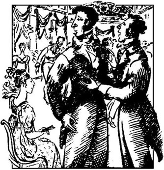
家产万贯而又尚未婚配的男人一定需要一个贤内助，这是一条世界上尽人皆知的真理。当这样一位男人搬到了附近时，这条真理在邻居们心中就显得更加清楚，他们哪怕对他的感情或意见一无所知，也会马上把他当作他们哪个女儿未来的丈夫。
“亲爱的班纳特先生，”一天，班纳特夫人对她丈夫说，“你听说了吗？尼日斐庄园到底还是租出去了。”
“我还没听说，班纳特太太，”她丈夫说。
“难道你不想知道是谁要租吗？”班纳特太太不耐烦地嚷了起来。
“你要想告诉我，我也不妨听听。”
班纳特夫人不需要更多的鼓励就开腔了。“啊，亲爱的，我听说他是个阔少爷，英格兰北部人。好像是星期一来看了看尼日斐，十分喜欢，马上安排把它租了下来。当然，连宅子的花园都那么大，那确实是这一片最好的庄园。他的仆人周末到，他本人随后就到！”
“他叫什么名字？”班纳特先生问道。
“彬格莱。”
“结婚了还是单身？”
“啊，亲爱的，当然是单身！家产万贯的单身汉——他每年收入四五千英镑呢。对咱家姑娘们来说真是再好不过了！”
“为什么？这跟姑娘们有什么关系？”班纳特先生问道。
“我亲爱的班纳特先生，”她回答道，“你怎么那么讨厌！你应该想到，我是在考虑他跟我们哪个姑娘结婚。”
“他搬到这儿住就是为了这个吗？”
“为这个？当然不是。可是真说不准他会爱上我们哪个姑娘。我想尽早让他见见姑娘们，要赶在其他邻居自我介绍之前。所以，他一来你就得去拜访他一下。”
“我真是不明白为什么要去拜访他，”班纳特先生说，“你可以和姑娘们去，或者你让她们自己去。对，还是让她们自己去好，你长得那么迷人，比她们哪个都不逊色，说不定彬格莱先生会看上你呢。”
“亲爱的，你太夸奖我了，”他妻子答道，“过去人们当然说我漂亮，可是我觉得，一个女人家，五个女儿都长大成人了，不应该再老想自己漂亮不漂亮。班纳特先生，我求求你，还是去拜访他一下吧。你知道，来了新邻居，家里的男人先去拜访一下是应该的。你如果不先见见他，我怎么好带着姑娘们去呢？”
“你对文明社会的条条框框真是考虑得太多了。我相信彬格莱先生会很高兴见到你们几个的。对了，我给他写几句话，你可以捎过去，就说他随便娶哪个姑娘，我都很乐意。不过，我得特别推荐我的小丽萃。”
“哦，不，班纳特先生！”班纳特太太倒抽口气，吓坏了。“别那样！再说，丽萃也不比其他几个好，不过我知道你偏爱她。”
“我们几个姑娘都很蠢，很无知，这是真的。可是，丽萃至少还比她几个姐妹聪明点儿。”
“班纳特先生，你怎么能这样无情地说自己的亲生女儿？哦，亲爱的，我难受极了！你一点儿也不心疼我吗？你没想到我多难受吗？”
“怎么没想到，亲爱的，我跟着你难受了23年了。不过我想你会恢复过来的，会在有生之年看到更多的阔少爷来和我们做邻居。”
班纳特先生年轻时犯了个错误，爱上了一个漂亮却愚蠢的年轻女人。结婚这么多年，他有的是时间来追悔自己的错误。不久，他就认识到妻子没有一点头脑或是常识，只知道唠叨、逛商店、给女儿找婆家。这种经历使得他有点儿尖刻，禁不住要嘲弄他妻子几句，而这种幽默感他妻子却从来都听不出来。
所以，一周之后，当班纳特太太得知丈夫实际上已到尼日斐拜访过彬格莱先生时，感到十分惊奇和喜出望外。可是，她和女儿们怎么求都白搭，班纳特先生就是不肯向她们吐露这位阔少爷的情况，最后，她们不得不从另一位邻居那里探听消息。
“听说他棒极了，妈妈！”姊妹几个中年龄最小、最爱喧闹的丽迪亚大声说，“夏洛特·卢卡斯的父亲去看过他，说他很年轻，很英俊，极有魅力！还有更棒的呢，他喜欢跳舞！大家都知道，喜欢跳舞就意味着他很可能坠入爱河！”
出于礼貌，彬格莱先生几天以后来回访班纳特先生。可是，遗憾的是，他未能见到班纳特家的几位姑娘，因为当时几个姑娘为了一睹这位英俊的陌生人的风采，正躲在楼上一间屋子的窗帘后面偷看呢。班纳特夫人计划邀请他吃饭，可是，事实上他们在另一次社交活动中提前见了面。班纳特一家住在哈福德郡的小村子浪搏恩，公共舞会定期在最近的镇子麦里屯举办。姑娘们在企盼着这次特别的舞会，因为她们听说彬格莱先生要参加，还要带些伦敦的朋友来。
舞会的那天晚上，彬格莱先生走进舞厅时，所有的眼睛都盯住了他。他把姐姐和妹妹都带来了，还有姐夫赫斯特先生和另外一个年轻人达西先生。彬格莱先生确实仪表堂堂，风度翩翩。他的姐妹也是优雅人时的女人。可是，没过多久，人人都开始谈论达西先生。他身材魁梧，英俊潇洒，据说年收入一万英镑。舞厅里的女士们用爱慕的眼光盯了他半个晚上，直到后来她们感到他不住地皱眉，不愿说话也不愿跳舞。最后，大家一致认为这个人高傲自大，性情乖戾，觉得自己比乡下人高一等。而彬格莱先生每支曲子都跳，跟谁都交谈，博得了各位女士的喜欢。
因为男士没有女士多，所以伊丽莎白·班纳特有一支曲子没有舞伴，坐着看大家跳。达西先生就站在她旁边。彬格莱先生过来跟朋友搭话时，伊丽莎白免不了听到他们的对话。
“来呀，达西，”彬格莱说，“不要满脸不高兴的样子，姑娘们多可爱，怎么不跟她们跳？”
“当然不跳，”达西说，“你知道我多么讨厌跟陌生人跳舞，尤其是在乡下的舞会上。除了你的姐妹之外，跟这个屋子里别的女人跳舞我连想都不会想。只有一个迷人的女孩，还在跟你跳。”他看着班纳特太太的长女简，简正在等彬格莱与她一起跳下一支曲子。
“哦，是的！她是我见过的女孩中最美的！可是，你后边坐的是她妹妹。她很漂亮，我相信她会使你很愉快的。我的舞伴可以给你们作一下介绍。”
“你说的是谁？”达西转身打量了一下伊丽莎白。“不，”他冷冷地说，“她不够迷人，吸引不了我。回去跟你的舞伴跳吧，彬格莱。”
这番对话并没有使伊丽莎白对达西先生产生好感，可是她却十分快活而饶有兴趣地把这段故事讲给朋友听。
除了达西，那天晚上大家过得都很愉快。班纳特太太对于长女给彬格莱先生留下的印象感到欢欣不已。
“他和简跳了两次！”后来她告诉丈夫说，“他和其他人都只跳了一次！他长得多潇洒呀！可是他的朋友达西对可怜的伊丽莎白多无理呀！还好，她并不在意！她是不会想去取悦他的！多么可憎，多么自大呀！我不喜欢他！”
简和伊丽莎白在一起时，各自谈论各自的舞伴。
“彬格莱请我跳第二次时，我真是受宠若惊！”简说着，两颊绯红。“我一点儿都没有想到！”
“你没想到吗？”伊丽莎白说，“我可是想到了，亲爱的简！你比那里任何一位女人都要漂亮五倍，可是你从来都太谦虚，想不到别人会爱慕你。”
“我必须承认我喜欢彬格莱先生，”简继续用温柔的声音说，“他多有礼貌，多么随和呀！”
“他还很英俊，”妹妹补充说，“这使他的性格相当完美！可是，你觉得他的姐妹怎么样？”
“跟她们认识以后很容易相处。妹妹卡罗琳·彬格莱小姐要和哥哥一起住在尼日斐。我相信有她做邻居我们会很愉快的。”
伊丽莎白听着，一声不吭。她不信。“简太善良了，”她想，“总是看到人们性格中好的一面！我觉得彬格莱先生的姐妹太高傲了，实际上有点粗鲁。我相信她们认为自己比大多数人高一等，就像达西先生一样。”可是，她不再言语。
舞会过后，班纳特和彬格莱两家每隔几天就互访一次。事情已经很明显，彬格莱十分爱慕简，而且伊丽莎白知道她姐姐也差不多爱上了他。一天，伊丽莎白跟好朋友夏洛特·卢卡斯谈起了这件事。夏洛特聪明而有才智，她27岁，是威廉爵士和卢卡斯夫人的长女，他们是班纳特家的邻居。
“如果简确实爱上了彬格莱，谁都不会知道，”伊丽莎白说，“因为她表现得总是那么快活，那么正常。这是件好事。”
“有时候那是个错误，”夏洛特一边明智地摇摇头一边回答说，“如果她一点不表现出自己的感情，甚至对自己所爱的人都如此，那么，她可能会丧失捉住他的机会。简应当利用她和彬格莱相处的每个机会来吸引他，鼓励他。”
“可是我认为男人应当努力去发现女人的感情，而不是等待她的鼓励！而且简也许还不知道自己对彬格莱的真正感情是什么——她只见过他几次，还不足够了解他的性格，或者还不敢肯定自己爱他。”
“好吧，我真心希望简获得成功，”夏洛特最后说，“可是我认为，她明天和他结婚与研究他性格一年后再和他结婚同样可能获得幸福。婚姻上的幸福不过是个机遇问题。我想，对于和自己终生为伴的人还是了解得越少越好。”
伊丽莎白大笑起来，心里肯定夏洛特想说的不是这个意思。
可是，伊丽莎白在观察彬格莱先生对简的兴趣时，没有注意到达西先生对她本人的兴趣。虽然达西先生刚开始甚至想都没有想过伊丽莎白很漂亮，可是他现在开始认识到她那双乌黑的眼睛给她那聪慧的面庞增添了多么美的表情。“当然，她不过是一位土里土气的乡村姑娘，”他心里想，“可是她的谈话经常很有意思。”无论何时，他们俩见面时，达西都不和伊丽莎白说话，而是站在她近旁，听她说话，仔细地观察她，心里意识到自己想更多地了解她。
一天晚上，在卢卡斯家的舞会上，达西像往常一样独自站着，离别的客人远远的，看着人家跳舞。主人威廉爵士过来跟他说话。
“达西先生！您在欣赏舞会吗？多么轻松的娱乐呀！”
达西皱了皱眉。“是的，”他冷冷地、不屑一顾地说，“跳舞嘛，连粗人都会学好。”
“我相信您本人也擅长跳舞，先生，”威廉爵士兴高采烈地回答，“你看，伊丽莎白·班纳特小姐来了。”她当时正在穿过房间。“让我来说服你跟她跳舞。这样的美貌就在眼前，怎么能谢绝不跳呢？”
“真的，先生，”伊丽莎白迅速回答道，有点儿不好意思，“我不想跳舞，你务必原谅我。”
“班纳特小姐，请允许我跟你跳一曲吧，”达西先生有礼貌地说，同时伸出了手。
但伊丽莎白同样有礼貌地又拒绝了，并且转身离去。达西先生脸上带着一丝微笑，正在看着她走开，这时，卡罗琳·彬格莱朝他走来。
“达西先生，”她说，“我敢肯定你在想什么——这些愚蠢的小乡巴佬多无聊啊！”
“根本不是这样，彬格莱小姐。实际上我是在想一双优美的眼睛能给人多少乐趣啊。”
“真的吗！这双优美的眼睛是谁的，我可以问一下吗？”
“伊丽莎白·班纳特小姐的。”
“好啊！让我来第一个祝贺你，达西先生！婚礼什么时候举行？”
“啊！我知道你要这么说。女人的想象力是跳跃式的，从爱慕到相爱到结婚，一会儿的事。”
“那当然啦，结婚以后，你可以经常叫她那迷人的妈妈还有姐妹们去坐坐，那简直愉快极了！”
彬格莱小姐看到达西还是那么平静，就继续竭力取笑班纳特一家。
2 Jane's illness
2
Jane's illness
Mr Bennet had a comfortable income of two thousand a year, and a pleasant house in Longbourn. But, unfortunately for his daughters, after his death all his property would pass to a distant male relation. Mrs Bennet's father had been a lawyer, and had only left his daughter a small amount of money. She had a brother who owned shops in London, and she also had a sister, married to a Mr Philips. He had been her father's clerk, and now carried on his late employer's business.
Mr and Mrs Philips lived in Meryton, which was only a kilometre or so from the village of Longbourn. It was a most convenient distance for the Bennet girls, who were usually tempted there three or four times a week, to visit their aunt or a dressmaker who lived opposite. The youngest daughters, Kitty and Lydia, were particularly regular visitors. Their minds were more vacant than their sisters', and if no better entertainment was available, a walk to Meryton always provided some amusement, as well as interesting local news from their aunt.
The latest news, which delighted Kitty and Lydia, was that the regiment which had recently arrived in Meryton was to stay there for the whole winter. The two girls now visited their aunt every day, and as Mr Philips knew all the officers, Kitty and Lydia were soon introduced to them. At home they could talk of nothing but officers and their handsome uniforms: even Mr Bingley's fortune now seemed hardly worth considering.
After listening to their praise of the officers one morning, Mr Bennet said coolly, 'From what I can see, you must be two of the silliest girls in the country. I've suspected it for some time, but now I'm convinced.'
Kitty was embarrassed and did not reply, but Lydia, the youngest, continued to express her admiration for a certain Captain Carter, with perfect indifference.
'I am very surprised, my dear,' said Mrs Bennet, 'that you should be so ready to think your own children silly. As it happens, they are all very clever.'
'That is the only point, I think, on which we do not agree. I am afraid I must say that I consider our two youngest daughters unusually foolish.'
'My dear Mr Bennet, you mustn't expect such young girls to have the common sense of their father or mother. I remember when I used to like a red coat myself, and indeed I still do. If a good-looking officer with five or six thousand a year wanted to marry one of my girls, I wouldn't turn him down. And I thought Colonel Forster looked very handsome last night at Sir William's, in his regimental uniform.'
Just then a servant entered with a note for Jane, which had come from Netherfield. Mrs Bennet's eyes shone with pleasure and she called out eagerly, while her daughter was reading it, 'Well, Jane, who is it from? What does he say? Tell us, tell us quickly, my love! '
'It's from Miss Bingley,' said Jane. 'She invites me to dinner at Netherfield, as she and her sister are alone. It seems her brother and the gentlemen are having dinner with the officers, in Meryton.'
'With the officers!' cried Lydia. 'I wonder why aunt Philips didn't tell us that!'
'Having dinner in Meryton,' repeated Mrs Bennet, shaking her head. 'That's very unlucky.'
'May I take the carriage?' asked Jane.
'No, my dear, you'd better ride over there, because it looks likely to rain, and then you'll have to stay the night.'
'That would be a good plan,' said Elizabeth to her mother, 'if you were sure they wouldn't offer to send her home in their carriage.'
'Oh, but they can't! The gentlemen must have taken Mr Bingley's carriage to go to Meryton.'
'I'd much rather go in the carriage,' Jane said.
'But, my dear, your father can't spare the horses, I'm sure. They're needed on the farm, aren't they, Mr Bennet?'
Mr Bennet finally agreed that they were in fact being used that day in the fields. So Jane set out on her horse, while her mother called cheerfully after her, 'I do hope it'll rain heavily, my love!' And Jane had not been gone for long before it rained hard. Elizabeth was a little worried about her sister, but Mrs Bennet was delighted. 'What a good idea of mine that was!' she said more than once, extremely pleased with herself.
Not until the next morning, however, did she realize the full extent of her success. After breakfast a servant from Netherfield arrived with a note from Jane to Elizabeth, explaining that Jane had caught cold on her wet ride, and had been invited to stay at Netherfield until she recovered.
'Well, my dear,' said Mr Bennet, 'if your daughter should become seriously ill and die, it would be a comfort to know that she died in a good cause, and in obedience to your orders.'
'Oh, I'm not afraid of her dying. People don't die of colds. She'll be looked after well at Netherfield. As long as she stays there, everything will be all right.'
But Elizabeth felt really anxious, and was determined to go to her sister. As the carriage was not available, and she was not keen on riding, she decided to walk the five kilometres to Netherfield. Kitty and Lydia accompanied her as far as Meryton, where they went to visit one of the officers' wives. Elizabeth continued alone, crossing field after field and jumping impatiently over streams, in her anxiety to see her sister.
When she arrived at Netherfield, with tired feet, muddy stockings and a face healthily pink with exercise, she was shown straight into the sitting-room. The two sisters, Miss Bingley and Mrs Hurst, could hardly believe that she had come so far alone and on foot in such bad weather, but they received her politely. Their brother, however, was more than polite: he was kind and considerate towards her. Mr Darcy said very little, hesitating between admiration of her healthy good looks and doubt whether she should have come such a distance alone. Mr Hurst said nothing at all, as he was thinking only of his breakfast.
Elizabeth was glad to be taken almost immediately to her sister's room, where she found Jane delighted to see her, but very feverish and unwell. The doctor came, and after examining his patient, advised that she should stay in bed and take some medicine. Elizabeth stayed with her all day, looking after her, and the Bingley sisters also spent some time in the patient's room. However, in the afternoon, when it was time for Elizabeth to leave, Jane seemed so upset that Miss Bingley was obliged to invite Elizabeth to stay at Netherfield for the present, and a servant was sent to Longbourn to inform the Bennet family and bring back some clothes.
That evening Elizabeth went down to dinner, leaving Jane in bed in her room. She noticed the Bingley sisters' apparent concern for Jane change to indifference in a few moments, and knew she had been right to dislike them at first sight. Mr Bingley, indeed, was the only one of the group whose behaviour she was satisfied with. His anxiety for Jane was evident, and his politeness towards herself most pleasing. But the others, she felt, treated her as an unwelcome guest. Miss Bingley was concentrating all her attention on Mr Darcy, and Mrs Hurst also joined in their conversation, while Mr Hurst was only interested in eating, drinking and playing cards.
When Elizabeth left the room after dinner to see if Jane needed anything, Miss Bingley at once began to criticize her.
'What bad manners she has! She's both proud, and lacking in politeness to her superiors! She has no conversation, no elegance and no beauty!'
Mrs Hurst agreed, and added, 'She has no good qualities, except that she's an excellent walker. I'll never forget her appearance this morning. She really looked almost wild.'
'She did indeed, Louisa. How silly of her to come at all! Why must she run around the countryside, just because her sister has a cold? Her hair looked so untidy! And her dress! Simply covered in mud! '
'I must say,' said Bingley, 'I didn't notice any of that. I thought she looked remarkably attractive when she arrived this morning.'
'You observed her wild appearance, I'm sure, Mr Darcy,' said Miss Bingley, 'and I imagine you wouldn't wish your sister to make such a show of herself.'
'Certainly not.'
'Walking four or five kilometres, whatever it was, up to her ankles in mud, and alone, quite alone! It seems to me to show a dreadful sort of independence, a country girl's indifference to what is acceptable.'
'I think it shows a very pleasing affection for her sister,' said Bingley.
'I'm afraid, Mr Darcy,' whispered Miss Bingley, 'that this adventure has rather lessened your admiration of her fine eyes.'
'Not at all,' he replied. 'They were brightened by the exercise.'
After a short pause, Mrs Hurst began again. 'I have a great liking for Jane Bennet. She is really a very sweet girl, and I wish with all my heart she were well married. But with such a father and mother, and with such vulgar relations, I'm afraid there's no chance of it.'
'I think the Bennet girls have an uncle who's a lawyer in Meryton.'
'Yes, and they have another who owns shops in Cheapside! Such a nice part of London!' Both the sisters laughed.
'If they had enough uncles to fill Cheapside,' cried Bingley, 'it wouldn't make them any less charming!'
'But it must considerably lessen their chances of marrying men of any position in the world, 'replied Darcy.
Bingley did not answer, but his sisters agreed enthusiastically, and continued mocking their dear friend's vulgar relations for some time.
Late in the evening, when Elizabeth was satisfied that Jane was asleep, she felt she ought to go downstairs again. She found the party in the sitting-room, playing cards, but although they invited her to join in their game, she refused politely, and picked up a book to read.
'I can fetch you more books to read, if you wish, 'offered Bingley, 'but I'm afraid I haven't got a large library. Unlike you, I'm too lazy to spend much time reading.'
'What a delightful library you have at Pemberley, Mr Darcy!' said Miss Bingley. 'And what a beautiful house it is! Charles, when you buy your house, I hope it will be even half as lovely as Pemberley.'
'I hope so too,' agreed Bingley.
'And your dear sister, Mr Darcy? I expect she's grown since the spring. I want so much to see her again! I've never met anyone who delighted me so much! Such an appearance, such manners! And so extremely accomplished for her age!'
'I'm always surprised, 'said Bingley, 'to find how very accomplished all young ladies are. How do they have the time and patience to learn all these skills?'
'Certainly people use the word "accomplished" too loosely,' said Darcy, 'but I am far from agreeing with you about ladies in general. I cannot boast of knowing more than six who are really accomplished.'
'Then,' said Elizabeth,' your idea of an accomplished woman must include a great many qualities.'
'Yes, a great many.'
'Oh! Certainly,' cried his faithful assistant, Miss Bingley, 'an accomplished woman must have a thorough knowledge of music, singing, drawing, dancing and modern languages, and besides this, a certain something in her manner of walking, in her voice and in her behaviour.'
'All this she must possess,' added Darcy, 'and something more solid, the improvement of her mind by wide reading.'
'I'm no longer surprised at your knowing only six accomplished women,' said Elizabeth. 'I rather wonder at your knowing any. I've never seen such elegance, and intelligence, and knowledge, as you describe, in one woman.'
Mrs Hurst and Miss Bingley were both protesting loudly that they knew many women like this, when Mr Hurst called their attention back to the card game. As this meant an end to the conversation, Elizabeth soon afterwards left the room.
'Miss Elizabeth Bennet,' said Miss Bingley to Darcy, 'is one of those women who try to appear attractive to men by undervaluing other women. I think that's a mean trick.'
'It is true,' said Darcy, 'that there is meanness in all the tricks used by ladies to attract men.'
Miss Bingley was not satisfied enough with this answer to continue the conversation.
The next morning Elizabeth was glad to be able to inform Mr Bingley and his sisters that Jane was very much better.
In spite of this improvement, however, she asked for her mother to be sent for, as she wanted Mrs Bennet's opinion of Jane's state of health. Soon after breakfast, therefore, Mrs Bennet, accompanied by her two youngest daughters, reached Netherfield.
Elizabeth, although relieved to hear that her mother did not think Jane's illness serious, began to regret asking her to come, when she saw the Bingley sisters smiling at Mrs Bennet's remarks. Elizabeth blushed for her mother, who could not help showing her lack of intelligence and common sense in everything she said.
Kitty and Lydia made an equally bad impression. They had been whispering together, when suddenly Lydia, who was an attractive, confident, well-grown girl of fifteen, pushed herself rudely forward. She begged Mr Bingley to hold a ball at Netherfield. With his usual politeness, Mr Bingley promised he would, but Elizabeth saw his sisters exchanging meaningful glances. She was quite glad when her mother and sisters left. She and Jane were to stay another night at Netherfield, to allow Jane to recover completely.
That evening Elizabeth appeared again in the sitting-room. She could not avoid noticing how frequently Mr Darcy's eyes were fixed on her, but as she felt sure that so great a man could not possibly admire her, she assumed that when he looked at her, he was criticizing her in some way. This thought did not cause her any pain, as she liked him too little to care for his approval.
In the conversations she had with him, she spoke in her usual slightly mocking manner, rather expecting to offend him, but was surprised by the quiet politeness of his replies. Darcy had never before been so charmed by any woman. He really believed that if she did not have such vulgar relations, he might be in danger of falling in love with her. Miss Bingley saw or suspected enough to be jealous, and her great anxiety for the recovery of her dear friend Jane was increased by her wish to get rid of Elizabeth.
Fortunately perhaps, for almost everyone at Netherfield, Elizabeth and her sister, who was now quite recovered, were returning home the next day. Only Mr Bingley showed real sorrow at this, and was concerned that Jane might not be fit enough to travel. Mr Darcy was quite relieved, and determined that no sign of admiration for Elizabeth should escape him now. Miss Bingley's politeness to Elizabeth, as well as her affection for Jane, increased rapidly as the moment of departure approached, and she was able to say goodbye to them with many warm expressions of friendliness and a promise to visit them very soon.
Mr Bennet was glad to welcome his eldest daughters home again, as he had felt their absence from the family circle, but Mrs Bennet, who had hoped they would stay much longer, was quite disappointed to see them come back in such a short time.
distant adj. far away in space or time. 遥远的。
lawyer n. person who has studied law. 律师。
clerk n. person employed in a bank, office, shop, etc. 办事员。
convenient adj. the quality of being convenient or suitable. 方便的。
regiment n. （陆军）团。
suspect v. feel doubt about. 怀疑。
indifference n. absence of interest or feeling. 无兴趣；冷淡。
clever adj. quick in learning and understanding things. 聪明的。
unusually adv. 不寻常地。
common sense practical good sense gained by experience of life. 常识。
invite v. ask. 邀请。
carriage n. 四轮马车。
spare v. 分让。
delighted adj. gratified; joyous. 高兴的。
extremely adv. reaching the highest degree. 极度地。
recover v. get back; get back the use of. 恢复。
seriously adv. in a serious manner. 严肃地。
obedience n. being obedient. 服从。
anxious adj. feeling anxiety; troubled. 焦虑的；不安的。
determined adj. 下决心的。
feverish adj. having symptoms of fever. 发烧的。
patient n. 病人。
advise v. give advice to. 劝告。
upset adj. 不安的。
evident adj. plain and clear. 明显的。
criticize v. form and give a judgement of. 批评。
elegance n. beauty; grace. 优雅。
remarkably adv. out of the ordinary. 不平常地。
ankle n. joint connecting the foot with the leg. 脚脖子。
affection n. kindly feeling; love. 爱。
vulgar adj. ill-mannered. 粗俗的。
enthusiastically adv. full of enthusiasm. 热心地。
satisfied adj. 满足。
fetch v. go for and bring back. 取来。
delightful adj. giving delight. 令人愉快的。
appearance n. that which shows or can be seen. 外表。
accomplished adj. 多才多艺的。
patience n. enduring trouble, suffering, inconvenience, without complaining. 耐心。
solid adj. compact; heavy. 结实的。
knowledge n. range of information. 知识。
protest v. raise an objection, say something (against). 抗议。
inform v. give knowledge to. 通知。
impression n. effect produced on the mind or feelings. 印象。
confident adj. feeling or showing confidence. 有把握的；有信心的。
meaningful adj. 富有意义的。
frequently adv. often happening. 时常发生地。
increase v. make or become greater in size, number, degree, etc. 增加。
relieved adj. lessen or remove. 减轻的。
departure n. going away. 离开。
简生病了
2 简生病了
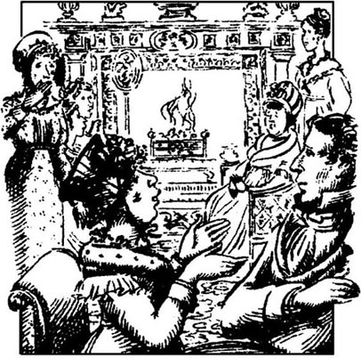
班纳特先生年收入两千英镑，而且在浪搏恩有一处宜人的宅子，生活堪称小康。可是，令女儿们感到遗憾的是，他死后，所有的财产都要由一位远房的男性亲戚来继承。班纳特夫人的父亲曾做过律师，他只给女儿留下很少一笔钱。班纳特夫人有一个弟弟在伦敦开商店，还有一个妹妹，嫁给了菲力普斯先生。菲力普斯曾做过她父亲的职员，现在继承了已故老板的事业。
菲力普斯夫妇住在麦里屯，离浪搏恩村只有大约一公里。这个距离对于班纳特家的几位姑娘来说再方便不过了，她们常常禁不住每周上那儿去三四次，去看姨妈或者住在对面专做女式服装的裁缝。最小的两位姑娘，吉蒂和丽迪亚，尤其常去。她们的精神比几个姐姐更空虚，如果没有更好的娱乐方式，到麦里屯走一走总是会给她们带来一些乐趣，她们还会从姨妈那里听到当地一些有趣的新闻。
最新的消息是，最近到达麦里屯的一个兵团要在那里待整整一个冬天。这个消息使得吉蒂和丽迪亚欣喜异常。这两个姑娘现在每天到姨妈家去。菲力普斯先生认识所有的军官，所以很快就把吉蒂和丽迪亚介绍给了他们。在家里，她们可以什么也不谈，只谈军官和他们漂亮的制服，连彬格莱先生的大笔财产似乎也不值一提。
一天早上，班纳特先生听了她们对军官的称赞以后冷冷地说：“依我看，你们俩肯定是全英国最傻的女孩。过去，我还一直怀疑这个，现在我彻底相信了。”
吉蒂感到害臊，没有吱声。可是最小的丽迪亚毫不在意，继续表达她对一个什么卡特尔上尉的爱慕之情。
“我真感到奇怪，亲爱的，”班纳特夫人说，“你为什么总是爱把自己的孩子想得那么傻。巧得很，她们都很聪明。”
“我想，只有这一点我们俩意见不一致。恐怕我得说，我们的两个小女儿还不是一般的愚蠢。”
“我亲爱的班纳特先生，她们还小呢，你不能指望她们有父母一样的见识。我记得自己过去就很喜欢红色的外套，确实，我现在还喜欢。如果哪一位年收入五六千英镑的漂亮军官想娶我们的哪个姑娘，我是不会拒绝他的。我觉得福斯特上校昨天晚上在威廉爵士家身穿兵团制服看起来很英俊。”
这时，一位仆人拿着给简的一张便条走了进来，便条是从尼日斐送来的。班纳特太太喜出望外，眼睛为之一亮，女儿还没看完，她就急切地叫道：“哎呀，简，是谁来的？上面写的什么？告诉我们，快告诉我们，我的乖！”
“是彬格莱小姐来的，”简说，“她邀请我到尼日斐吃饭，因为只有她和她姐姐在家。好像她哥哥和几位先生正在麦里屯和军官们吃饭呢。”
“军官们！”丽迪亚大喊一声，“不知道菲力普斯姨妈为什么不把这事儿告诉我们！”
“在麦里屯吃饭，”班纳特夫人摇了摇头，重复道，“这太不巧了。”
“我可以坐马车去吗？”简问道。
“不能，亲爱的。你最好骑马过去，因为看起来要下雨了，那样的话，你就得在那儿过夜。”
“如果你敢肯定他们不主动提出用他们自己的马车送她回家的话，”伊丽莎白对他妈妈说，“那么，这个计划就很好。”
“哦！可是他们送不了！那几位先生一定坐彬格莱先生的马车到麦里屯去了。”
“我还是想坐马车去。”简说。
“可是，我亲爱的，你爸爸必须用那几匹马，腾不出空来，肯定不行。班纳特先生，田里还需要它们，是吧？”
班纳特先生不得已，最后终于同意说，是啊，实际上那天田里还在用着牲口呢。于是简骑着自己的马出发了，而她妈妈在后面兴高采烈地喊道：“我真希望雨能下大点儿，乖！”果真，简还没走多大会儿，雨就下大了。伊丽莎白有点担心姐姐，可是，班纳特太太感到庆幸。“我这个主意多妙啊！”她不止一次地这样说，对自己感到极为满意。
可是，直到第二天早上，她才认识到自己的如意算盘大获成功了。早饭过后，尼日斐来了一位仆人，他从简那里给伊丽莎白带来一张便条，说简雨天骑马感冒了，并且应邀在尼日斐住下，直到康复。
“啊，亲爱的，”班纳特先生说，“如果你女儿病重死去，那么，得知她的死因这样美妙，又是服从了你的命令，也会是一种安慰啊。”
“哦，我不担心她会死去。得感冒是不会死人的。她在尼日斐会得到悉心照料的。只要她待在那儿，一切都会好的。”
但是，伊丽莎白真正感到焦急，决心去看看姐姐。因为没有马车，她又不热心骑马，所以，她决定步行五公里到尼日斐去。吉蒂和丽迪亚一直把她送到麦里屯，在那里，她们去找一位军官的妻子。伊丽莎白接着就一个人走下去，穿过一片片田地，跨越一条条小溪，心情烦躁，急切地要见到姐姐。
她到达尼日斐以后，两脚乏力，满袜烂泥，由于运动，双颊透着健康的粉红色。她被直接领到了起居室。彬格莱小姐和赫斯特夫人姐妹俩几乎不敢相信，路这么远，天这么坏，她会一个人步行过来，不过她们还是彬彬有礼地接待了她。然而，彬格莱先生可不仅仅是彬彬有礼：他对她和蔼而体贴。达西先生很少说话，既喜爱她健康的模样，又怀疑她该不该这么大老远地过来，心里犹豫不决。赫斯特先生一言不发，只想着吃早饭。
伊丽莎白几乎马上被带到了姐姐的卧室，对此她很满意。在那里，她发现简见到她很愉快，可是发着高烧，情况很糟糕。医生来了，给病人检查过之后，建议她卧床休息，吃点药。伊丽莎白全天和她待在一起，照料她，彬格莱姐妹俩也在病房里待了一段时间。可是，到了下午，伊丽莎白该走的时候，简似乎感到十分焦躁不安，彬格莱小姐就不得不邀请伊丽莎白先待在尼日斐并派一个仆人到浪搏恩通知班纳特家，再带回些衣服。
那天晚上，伊丽莎白下去吃饭，留简一个人在屋里躺在床上。她注意到彬格莱姐妹对简明显的关怀之情不一会儿就变成一片漠然，这时她认识到第一次见面就讨厌她们的感觉是正确的。说实在的，这几个人中只有彬格莱先生一个人的表现使她感到满意。他为简感到焦虑是很显然的，对自己的礼貌也是很令人满意的。但是，她感到其他的人把她当成不受欢迎的客人。彬格莱小姐整个心思都在达西身上，赫斯特夫人也参加到他们的谈话里去，赫斯特先生只对吃饭、喝酒、打牌感兴趣。
伊丽莎白吃过饭离开房间，去看简是不是需要什么。这时，彬格莱小姐马上开始说她的坏话。
“她多没教养啊！又傲慢又不知道尊重上等人！她不跟人攀谈，不爱打扮，相貌平平！”
赫斯特夫人也这么看，并补充说：“她没有什么好品质，只有一样，就是能走路。我永远忘不了她今天早上的模样。就跟疯了差不多。”
“她确实如此，露易莎。她到这儿来真是太傻了，在野地里来回跑什么，就因为她姐姐着点儿凉吗？看她的头发，乱糟糟的，不堪入目！她的衣服，简直是用泥抹了一遍！”
“我说句话，”彬格莱先生说，“你们所说的我都没有看见。我觉得她今天早上来到的时候，看起来很有魅力。”
“达西先生，你肯定看到她今天早上的疯癫劲了，”彬格莱小姐说，“我想你不会希望你的妹妹这样丢人现眼吧。”
“当然不会。”
“不管怎么说，走了四五公里，烂泥没到了脚脖子，又是一个人，没有一个人做伴！我似乎看到一种可怕的独立性，一种乡下女孩对什么该做、什么不该做的漠视。”
“我想这表现出对姐姐的手足之情，是难能可贵的。”彬格莱说。
“达西先生，”彬格莱小姐小声说，“恐怕她这次冒险削弱了你对她眼睛的喜爱吧。”
“一点没有，”他回答说，“一运动眼睛反而更加明亮了。”
稍作停顿之后，赫斯特夫人又开始了。“我很喜欢简·班纳特，她真是个很可爱的女孩，我真心希望她能找个好男人。可是，父母是那样，亲戚又那么粗俗，我想她是不会有这样的机会的。”
“我想班纳特家的姑娘有个姨父在麦里屯做律师。”
“是的，她们还有个舅舅在齐普赛开店呢。伦敦的这个地方真不错！”姐妹俩纵声大笑。
“假使她们父母的兄弟多得能把齐普赛塞满，”彬格莱大声说，“那也不会使她们的魅力有任何减少！”
“可是这必将大大减少她们同世界上任何有地位的男人结婚的机会。”达西回答道。
彬格莱没有回答，可是他的姐妹们兴高采烈地表示同意，并继续嘲笑了一会儿亲爱的朋友的下贱亲戚。
深夜，伊丽莎白看到简睡着了，心里很高兴，她觉得应该再到楼下去。她发现那些人在客厅打牌，虽然他们邀请她一起玩，可是她有礼貌地拒绝了，并拿起一本书读了起来。
“如果你愿意读，我可以给你多拿几本来，”彬格莱提出，“不过，恐怕我没有个大图书馆。不像你，我太懒，不读什么书。”
“达西先生，你在彭伯里的图书馆多么令人赏心悦目啊！”彬格莱小姐说，“那幢房子多漂亮啊！查尔斯，你买房子时，我希望有彭伯里的一半那么可爱就行了。”
“我也希望如此。”彬格莱附和道。
“还有，你那可爱的小妹怎么样了，达西先生？我估计春天以来她又长高了吧！我多想再见到她呀！我见过的人还没有哪个像她那样使我感到快活！她的相貌，她的风度！还有小小年纪就多才多艺！”
“我总觉得奇怪，”彬格莱说，“我发现如今的年轻小姐们都是多才多艺。她们哪儿来的时间，哪儿有耐心来学习这些技艺呢？”
“当然是人们把‘多才多艺’这个词用滥了，”达西说，“不过，你把小姐们都称为多才多艺，我则完全不敢苟同。真正多才多艺的据我所知不过五六个人。”
“那样的话，”伊丽莎白说，“你所谓的多才多艺一定要具备多种优良品质才行啦。”
“是的，要有多种优良品质。”
“啊！当然啦，”他忠实的帮腔者彬格莱小姐大声说道，“多才多艺的人必须通晓音乐、演唱、绘画、舞蹈和现代语言，除此之外，还要注意行姿、嗓音和举止。”
“所有这些都必须具备，”达西补充道，“除此之外，还有更实在的，那就是要博览群书，扩大视野。”
“这么说来，你只知道六个多才多艺的人，就不足为怪了，”伊丽莎白说，“你竟然还知道有这样的人存在，我感到相当惊讶。我还从来没有见过你所谓的集优雅、智慧和知识于一身的女人呢。”
赫斯特太太和彬格莱小姐大声抗议说，她们认识很多这样的妇女。这时，赫斯特先生叫她们不要分心，注意玩牌。因为这就意味着谈话的结束，所以，伊丽莎白不久就离开了房间。
“伊丽莎白·班纳特小姐，”彬格莱小姐对达西说，“是那种贬低别人抬高自己以吸引男人的女人。我以为这是很卑鄙的。”
“你说得对，”达西说，“女人用来吸引男人的所有花招都是卑鄙的。”
彬格莱小姐对这个回答不够满意，谈话就此中断了。
第二天早晨，伊丽莎白很高兴地通知彬格莱先生和她的姐妹说，简的状况大为改善。
不过，虽然病情大为好转，伊丽莎白还是想让人叫母亲过来，听听她对于简的健康状况的意见。于是，早饭过后不久，班纳特太太在两个小女儿的陪同下，到达了尼日斐。
听到母亲说简的病不要紧，伊丽莎白松了口气。尽管如此，当她看到彬格莱姐妹取笑她母亲说的话时，她开始后悔不该叫母亲过来。伊丽莎白为母亲感到脸红，因为母亲所说的每句话都不自觉地表现出她缺乏头脑和起码的见识。
吉蒂和丽迪亚给人的印象也一样坏。她们俩一直在窃窃私语，可是突然那个迷人的、充满自信的、15岁就发育成熟的丽迪亚十分无礼地出了一下风头。她恳求彬格莱先生在尼日斐举行一次舞会。彬格莱先生像往常一样，彬彬有礼地答应说他会举办的，不过伊丽莎白看到他的姐妹别有用心地交换了一下眼色。母亲和妹妹走了以后，她感到很高兴。她和简要在尼日斐再待一个晚上，等到简完全恢复后再走。
那天晚上，伊丽莎白再次来到起居室。她不可避免地注意到达西先生的目光频繁地落在自己身上。不过，她觉得，这样一位大人物是不可能爱慕她的，所以，她就假定他注视她时，是在挑她的毛病。这种想法并没有使她感到痛苦，因为她不爱他，所以并不在乎他心里怎么想。
她与他交谈时，总是带点儿讥讽的口吻，有点期望能惹他生气，但他的回答却出人意料地心平气和和彬彬有礼。达西以前还从来没有被哪个女人这样迷住过。他真心认为，要不是她出身这么卑微，他还真有爱上她的危险。彬格莱小姐的所见所疑足以使她醋性大发，由于希望摆脱掉伊丽莎白，她盼望好友简早日康复的焦虑心情更是与日俱增。
伊丽莎白和她姐姐（现在已经基本康复）第二天就要回家了，这对于尼日斐几乎所有人来讲，也许都是求之不得的。只有彬格莱先生对她们的离别感到真正的难过，并且担心简还没有完全康复，不宜出门。达西先生松了口气，并决定此时此刻不能流露出对伊丽莎白有半点爱慕之情。随着离别时刻的到来，彬格莱小姐对伊丽莎白的客气程度以及对简的感情迅速增加，到与她们道别时，竟能说出许多令人心里暖烘烘的友好之辞来，她还许诺不久将对她们进行一次拜访。
班纳特先生见到两个年长些的女儿回家来，自然十分高兴，因为她们不在时，他总觉得家里少了点儿什么。可是班纳特太太本希望她们多住些日子，看到她们这么早回来，心里相当失望。
3 Mr Collins visits Longbourn
3
Mr Collins visits Longbourn
'I hope, my dear,' said Mr Bennet to his wife at breakfast the next morning, 'that you have told the cook to send up a good dinner today, as I am expecting a visitor.'
'Who is it, my dear? I know of nobody who is coming, unless Charlotte Lucas happens to call in, and I hope my dinners are good enough for her,'
'The person I'm talking about is a gentleman and a stranger.'
Mrs Bennet's eyes shone with excitement. 'It's Mr Bingley, I'm sure! Why, Jane, you never mentioned it! Well, I'll be extremely glad to see him. Lydia, my love, ring the bell. I must speak to the cook at once.'
'It is not Mr Bingley,' said her husband. 'It's a person whom I have never seen before.'
This caused general astonishment, and he had the pleasure of being eagerly questioned by his wife and five daughters all at the same time. Having amused himself for some time with their curiosity, he finally explained. 'I have recently received a letter from my cousin, Mr Collins, who, as you know, will inherit all my property when I die, and may throw you out of this house as soon as he wants.'
'Oh, my dear!' cried his wife. 'Please don't mention that hateful man. It's the hardest thing in the world to accept the fact that your property is not left to your own children, and I'm sure, if I were you, I'd have tried to do something about it.'
Jane and Elizabeth tried to explain the legal situation to her again. They had often attempted to do this before. But it was a matter which Mrs Bennet refused to understand, and she continued to complain bitterly about Mr Collins.
'It certainly is most unjust,' agreed Mr Bennet, 'and nothing can clear Mr Collins from the guilt of inheriting this house. But if you listen while I read his letter to you, you may perhaps be a little softened by his manner of expressing himself.' He read aloud the following letter:
Dear Sir,
The disagreement between you and my late respected father always worried me, and since his death I have frequently wished to improve the relationship between our families. After a long period of study and training I have recently become a priest, and have been fortunate enough to gain the patronage of Lady Catherine de Bourgh, widow of Sir Lewis de Bourgh. This generous lady has given me the post of rector at Hunsford, which was luckily vacant. Hunsford is the village near her own large country house in Kent. Here I carry out the duties of my profession whenever necessary, and I take great care to behave at all times with grateful respect towards her ladyship. As a priest, moreover, I feel it my duty to encourage all families in my area of influence to live peacefully. Because of this, I flatter myself that I am acting correctly in offering you my friendship. I am of course concerned that when I eventually inherit all your property, your daughters will doubtless be very poor, and I do apologize for this. I promise you I am ready to make amends in every possible way—but more about this later. If you do not object, I propose to visit you and your family on Monday November 18th, at four o'clock, and shall probably stay until the following Saturday week. This will cause me no inconvenience at all, as Lady Catherine is far from objecting to my occasional absence from my duties.
I remain, dear sir, with respectful good wishes to your lady and your daughters, your friend, William Collins.
'So we can expect this peace-making gentleman at four o'clock today,' said Mr Bennet, as he folded up the letter. 'He appears to be a most polite and serious young man. How considerate of Lady Catherine to allow him to visit us! '
'Well, if he is ready to make amends to the girls in some way, I shall certainly not discourage him,' said Mrs Bennet.
'Although it's difficult,' said Jane,' to guess how he intends to do that, it's good of him to want to help us.'
'I think he's peculiar,' said Elizabeth. 'He sounds too pleased with himself, and he speaks so politely of Lady Catherine! And why does he apologize for inheriting Father's property in future? We know it's not his fault. Can he be a sensible man, sir?' she added, turning to Mr Bennet.
'No, my dear, I think not. I have great hopes of finding him quite the opposite. There is a mixture of servility and self-importance in his letter, which promises to be entertaining. I am impatient to see him.'
Mary, the middle daughter, who spent most of her time reading and who seldom joined in family conversations, now remarked that in her opinion his letter was well expressed. But Kitty and Lydia did not show any interest in the letter or its writer. As it was highly unlikely that their cousin would arrive in a regimental uniform, they could not imagine having any pleasure in meeting him. Their mother, however, had changed her attitude towards Mr Collins after his letter, and was now preparing to meet him with such calmness that it astonished her husband and daughters.
Mr Collins arrived punctually, and was received with great politeness by the whole family. Mr Bennet indeed said little, but the ladies were ready enough to talk, and Mr Collins did not seem in need of encouragement. He was a tall, heavy-looking young man of twenty-five. His expression was serious, and his manners very formal. Soon after his arrival, he said to Mrs Bennet, 'Madam, I must compliment you on having such a fine family of daughters. I had heard much of their beauty, but I find them even more beautiful than reports have stated. I do not doubt you will see them all well married quite soon.'
Mrs Bennet never quarrelled with compliments, and she answered, 'You're very kind, sir, and indeed I do hope so, because otherwise they'll have nothing at all to live on.'
'You refer perhaps to my inheriting the Bennet property?'
'Ah, yes, sir, I do! You must confess it is a sad business for my poor girls.'
'I am very aware, madam, of the hardship to your lovely daughters—and could say more about this, but I am cautious of saying too much too soon. But I would like to say that I have come prepared to admire the young ladies. And perhaps when we know each other better—'
The bell rang for dinner, and the family moved into the dining-room with their guest. The girls smiled secretly at each other, as Mr Collins praised the hall, the dining-room and all the furniture. Mrs Bennet would normally have been delighted with such praise, but she could not help thinking that he was perhaps admiring it all as his future property. The dinner, too, he considered excellent, and he asked which of his charming cousins was responsible for it. But Mrs Bennet explained quite sharply to him that they were very well able to afford a good cook, and that her daughters had nothing to do in the kitchen. He begged her pardon immediately for offending her, and continued to apologize for about a quarter of an hour.
Mr Bennet had hardly spoken up to now, but he thought it was time to enter the conversation. 'You seem very fortunate in your patron, Mr Collins,' he said.
He could not have chosen a better opening remark. Mr Collins spoke enthusiastically for several minutes in praise of Lady Catherine. 'Never in my life have I witnessed such considerate behaviour in a person of high birth! Although she is such a great lady, she has never treated me with disdain. She talks to me almost as an equal, and gives me advice. For example, she has recommended me to marry as soon as possible. And do you know, she has asked me to dinner twice at her house! Some people consider her proud, but she has only ever been kind to me. She even took the trouble to visit my small house, and was thoughtful enough to suggest one or two improvements—some shelves upstairs.'
'That is very correct and polite, I'm sure,' said Mrs Bennet. 'Does she live near you, sir?'
'Only a small country road separates my poor house from Rosings Park, her ladyship's home.'
'I think you said she is a widow? Has she any family?'
'She has only one daughter, who will inherit Rosings and all Lady Catherine's property. A most charming young lady, unfortunately in weak health. I often pay her some little compliment on her appearance or her accomplishments when I visit Rosings. Lady Catherine appreciates these compliments to her daughter, and I see it as my duty to please her ladyship.'
'I am sure you're right,' said Mr Bennet. 'No doubt you are expert at flattering with delicacy. May I ask how you think of these pleasing compliments?'
'Some of them come to me at the time, but in my spare moments I do occasionally prepare a few words which may be suitable for different occasions.'
Mr Bennet listened to his cousin with the greatest enjoyment. Mr Collins was as foolish as he had hoped. But by tea-time Mr Bennet had had enough, and after tea, asked his guest to read aloud to the ladies. However, when a novel was handed to Mr Collins, he looked shocked, and protested that he never read novels. He chose a religious book instead, and started reading in a slow, serious voice. Lydia could not hide her boredom for long, and after only three pages she interrupted him rudely, to ask her mother a question about one of the officers in Meryton. Mr Collins was offended, and refused to read any more, although Mrs Bennet and her other daughters apologized for Lydia's lack of manners.
Mr Collins was not a sensible man, and neither education nor society had improved him. The respect he felt for his patron, and his very good opinion of himself and his new position, made him proud and servile at the same time. Now that he had a home and a considerable income, he had decided to marry. The Bennet girls, who would lose their inheritance because of him, had a reputation for being attractive and charming, and his idea of making amends to them was to marry one of them. He considered this an excellent plan, and thought himself extremely generous and unselfish in carrying it out.
He had known he was right when he arrived at Longbourn and saw Jane Bennet's lovely face. As the eldest, she should marry first, and for the first evening she was his choice. But the next morning, after a fifteen-minute conversation with Mrs Bennet, he had to change his mind. When he explained that he was hoping to find a wife among her daughters, she replied, with a happy smile, that her eldest daughter was very likely to be engaged soon. 'But there are my other daughters, Mr Collins,' she continued, encouragingly.
Mr Collins had only to change from Jane to Elizabeth, and it was soon done—done while Mrs Bennet was pouring the tea. Next to Jane in birth and beauty, Elizabeth was the obvious choice.
Mrs Bennet was delighted, hoping that she might soon have two daughters married. The man whom she had so disliked the day before was now a favourite with her.
mention v. speak or write something about. 提及。
astonishment n. great surprise. 惊奇。
curiosity n. being curious. 好奇心。
inherit v. receive as heir. 继承。
legal adj. connected with the law. 合法的。
attempt v. make a start at doing something. 试做；企图。
unjust adj. 不公平的。
generous adj. giving, ready to give, freely. 慷慨的。
influence n. power due to wealth, position, etc. 势力；权力。
doubtless adv. without doubt. 无疑地。
inconvenience n. discomfort or trouble. 不便。
respectful adj. showing respect. 有礼貌的。
servility n. servile behaviour or attitude. 奴隶的行为或态度。
entertaining adj. pleasing; amusing. 有趣的。
seldom adv. not often. 很少。
formal adj. in accordance with rules, customs, and convention. 正式的；合乎礼仪的。
otherwise conj. if not, or else. 否则。
cautious adj. having or showing caution. 小心的。
responsible adj. trustworthy. 可信赖的。
apologize v. make an apology. 道歉。
witness v. be present at and see. 亲见；目击。
disdain n. contempt; scorn. 轻视。
thoughtful adj. full of thought. 深思的。
compliment n. expression of admiration. 赞扬。
suitable adj. right for the purpose or occasion. 适合的。
shocked adj. causing shock. 令人震惊的。
religious adj. of religion. 宗教的。
education n. 教育。
engage v. promise, agree, to marry. 订婚。
pour v. cause to flow in a continuous stream 倒。
obvious adj. easily seen or understood; clear; plain. 显而易见的。
柯林斯先生造访浪搏恩
3 柯林斯先生造访浪搏恩

“亲爱的，我希望你已经通知过厨师今天送上一份像样的晚饭，我有客人来。”第二天早饭后班纳特先生对妻子说。
“亲爱的，是谁？除了夏洛特·卢卡斯偶尔来一趟，我不知道谁还会来。要是她，家常便饭就够了。”
“我说的那个人是个有教养的男人，一个陌生人。”
班纳特太太激动得两眼放光。“是彬格莱先生，我敢肯定！简，你怎么从来没有提过！啊，能见到他我高兴极了。丽迪亚，我的乖，快拉铃。我得马上跟厨师讲。”
“不是彬格莱先生，”她丈夫说，“这个人我以来没有见过。”
一言既出，满座皆惊。太太和五个女儿异口同声，急切地向他发问，这使他十分得意。他先拿她们的好奇心逗了一会儿乐，最后作了解释。“最近，我收到了远房侄子柯林斯先生的一封来信。你们知道，我死后他要继承我的一切财产，到时候可能随时把你们赶出这幢房子。”
“哦，亲爱的！”他妻子叫道，“请不要提那个可恶的家伙。自己的财产不留给自己的孩子，这恐怕是世界上最难叫人接受的事情了。我要是你的话，肯定不会就此罢休。”简和伊丽莎白又向她解释了一遍法律上的具体情况。她们以前经常向她解释，可是这种事班纳特太太拒不理解，她继续叫苦不迭地对柯林斯先生发牢骚。
“这件事当然很不公平，”班纳特先生表示赞同，“柯林斯先生继承这幢房子受之有愧，无论怎样他都难以免于这种愧疚。可是，如果你愿意听听他的来信，他说话的口气也许会使你的态度缓和一点。”
他大声朗读了以下这封信：
亲爱的先生：
阁下与先父之不和一直令我深感不安。自从先父去世之后我一直希望重修两家之好。经过长期学习与培训，我已于最近成为牧师，并万分荣幸地获得刘易斯·德·包尔公爵的遗孀凯瑟琳·德·包尔夫人的恩宠。这位慷慨的夫人将汉斯福的教区长职位赐与了我，当时，这个职位正好空缺。汉斯福是个村庄，位于这位夫人在肯特郡巨大的乡间别墅附近。在此，一有必要，我便履行自己的职责，而且无时无刻不极力表现出对夫人的感激和尊敬。另外，作为一名牧师，我感到有责任尽我力之所及，促进本教区家家户户亲善和睦。有鉴于此，我自信向您伸出友谊之手是正确之举。我最终继承您的财产之后，诸位令嫒一定会一无所有，对此我自然深感不安，并为此真切道歉。我向您保证我愿意尽一切可能给予补偿——这一点容后再叙。如果您不反对，我拟于11月18日星期一4点钟前来拜谒您和全家，并有可能在贵府打扰至星期六离开。这不会引起我什么不便，因为凯瑟琳夫人对于我偶尔离开职守绝无反对之意。
亲爱的先生，我向尊夫人及诸位令嫒致以尊敬的、良好的祝愿。您的朋友威廉·柯林斯。
“所以，今天下午4点这位和事佬先生就要来了，”班纳特先生说着，一面把信折叠起来，“他像是一位知书达礼、严肃认真的年轻人。凯瑟琳夫人允许他拜访我们，真是体贴入微呀！”
“那么，如果他愿意用某种方式给女儿们以补偿的话，我当然不会给他泼冷水。”班纳特太太说。
“虽然很难猜测，”简说，“他打算如何补偿我们，不过，他想帮助我们，倒是件好事。”
“我觉得他有点儿古怪。”伊丽莎白说。“他听起来过于自鸣得意，谈起凯瑟琳夫人又过于客气！他将来继承父亲的财产为什么要道歉？我们知道那不是他的错。先生，他会是个理智的人吗？”她转向班纳特先生，补充道。
“我想不是，亲爱的。他极有可能恰恰相反。他在信中显得既卑躬屈膝，又妄自尊大，这一定很有趣，我真想马上见到他。”
年纪居中的女儿玛丽大部分时间都在读书，很少参与家人的谈话，这时她插话说，在她看来，这封信意思表达得恰如其分。可是吉蒂和丽迪亚对这封信和它的作者没表现出任何兴趣。她们想象不出来见到表兄会有什么乐趣，因为他极不可能穿着军服来。不过，她们的母亲听完信之后改变了对柯林斯先生的态度，现在准备着心平气和地迎接他，这使得丈夫和女儿们大为惊讶。
柯林斯先生准时到达，受到了全家极为客气的接待。班纳特先生实际上没说几句话，可是女士们总是有话可说，而柯林斯先生似乎也不需要鼓励。这个年轻人25岁，高高的个子，样子很稳重。他表情严肃，言谈拘谨。他来到不久，就对班纳特太太说：“夫人，您有这么多懂事的女儿，我必须向您表示祝贺。关于她们的美貌我耳闻很多，如今相见，才知道比传闻的漂亮百倍。我相信，您不久就会看到她们一个个喜结良缘。”
对于别人的夸奖，班纳特太太从来不争执，于是她回答道：“谢谢你的吉言，先生，我确实希望她们找到好男人，不然的话，她们生活就无依无靠了。”
“您大概是指我要继承班纳特家的财产一事吧？”
“啊，是的，先生，一点儿不错！你也得承认，对我那可怜的女儿来说，这可不是什么令人高兴的事。”
“夫人，我十分清楚令嫒们的困难处境——关于这一点，我还有话要说，可是我十分注意讲话要宁少勿多，宁晚勿早。不过，我愿意告诉您，对于到这里后对姑娘们产生爱慕之情，我是有思想准备的。也许等我们互相熟悉之后——”
开饭的铃声响了，全家人同客人一起来到了餐厅。柯林斯先生称赞客厅、餐厅和所有的家具，姑娘们对此偷偷地相视而笑。要在往常，班纳特夫人听到这样的赞美，一定会乐滋滋的，可是这次她禁不住心里嘀咕，说不定他是在欣赏自己未来的财产呢。晚饭他也说好极了，就问是哪位迷人的表妹的手艺。可是班纳特夫人十分尖刻地向他解释说，他们完全请得起好厨师，女儿们根本不用下厨房。他于是赶紧请她原谅自己的冒失，接着又道歉了大约一刻钟。
到现在为止，班纳特先生几乎还没有说什么话，但是，他觉得现在应该介入谈话了。“柯林斯先生，你被授与圣职似乎非常幸运。”他说。
他选的这句开场白再合适不过了。柯林斯先生兴致勃勃地讲了几分钟，称赞凯瑟琳夫人。“我一生中还从来没有见过出身如此高贵的人会这样体贴人！虽然她是一位贵妇人，可是她从来都没有看不起我。她和我谈话几乎就像和同等身份的人谈话一样，还给我提出建议。例如，她建议我尽早结婚。而且，您知道吗，她请我到她家吃过两次饭！有人认为她高傲，可是她对我从来都很和蔼。她甚至不怕麻烦到寒舍去过一次，还分细心地让我作一两处改进——在楼上放几个架子。”
“我相信她做得很对、很有礼貌，”班纳特太太说，“她住得离你近吗，先生？”
“夫人的家罗新斯庄园和寒舍仅有一条乡间小路相隔。”
“我想你刚说过她是个寡妇？有孩子吗？”
“她只有一个女儿，将会继承罗新斯庄园和凯瑟琳夫人所有的财产。是一位很有魅力的年轻小姐，可惜健康状况欠佳。我拜访罗新斯时经常稍稍称赞一下她的容貌和才艺。凯瑟琳夫人很喜欢对她女儿的称赞。我把取悦夫人当成了我的职责。”
“我认为你做得对，”班纳特先生说，“你奉承人体贴入微，毫无疑问是个专家。请问你是怎么想起这些取悦之辞的？”
“有些是当下随口说的，不过，空闲时我也准备几句，也许在不同的场合可以用上。”
班纳特先生饶有兴趣地听了这位侄子的谈话。柯林斯先生正像他所预料的那样愚蠢。到喝茶时分，班纳特先生觉得已经听够了，茶点过后，他便请客人给姑娘们大声读点东西。可是，柯林斯先生一看到递给他的是小说，脸上马上露出吃惊的神色，坚持说他从来不读小说。相反，他选了一本宗教方面的书，然后用缓慢、严肃的声调读了起来。丽迪亚不会长时间地掩饰自己的厌倦情绪，他只读了三页，她便粗鲁地打断了他，问她母亲麦里屯一位军官的情况怎么样了。柯林斯先生感情受到了伤害，拒绝再往下读，尽管班纳特太太和其他几个女儿为丽迪亚的失礼道了歉。
柯林斯先生不是一位很有理智的人，教育和社会都改变不了他。对保护人的尊敬、自命不凡和新职位使得傲气和奴性在他身上并存。他现在既然有了窝，收入又相当可观，于是便决定结婚了。班纳特家的姑娘以娇媚迷人闻名遐迩，他所谓的补偿就是同其中的一位姑娘结婚，以弥补这些姑娘因为他而失去的继承权。他认为这是一个极好的计划，还觉得自己使之付诸实施，非常慷慨无私。
他到达浪搏恩，见了简·班纳特可爱的脸蛋后，便肯定自己的决定是正确的。简作为长女，应当首先结婚，在头天晚上，他就选中了她。但第二天早上与班纳特太太经过15分钟的交谈，他就不得不改变自己的想法了。他解释说他要在几位姑娘中找一位妻子时，班纳特太太脸上洋溢出幸福的微笑，她回答说，大女儿很可能不久就订婚。“可是我还有别的女儿呢，柯林斯先生。”她继续说，语调中带着鼓励。
柯林斯先生不得不把简换成伊丽莎白，不一会儿就定了下来——班纳特太太沏茶时他做出了决定。伊丽莎白在年龄和姿色上都仅次于简，选她是很显然的。
班纳特太太乐滋滋的，满心希望不久将有两个女儿嫁出去。前一天她还感到厌恶的男人一下子成了她的掌上明珠。
4 Elizabeth meets Mr Wickham
4
Elizabeth meets Mr Wickham
When later that morning Lydia suggested walking to Meryton to see some of the officers, all her sisters except Mary agreed to accompany her. Even Mr Collins went with them, encouraged by Mr Bennet, who was by now most anxious to have some time to himself. During their walk, the girls listened politely to Mr Collins' self-important speeches, but as soon as they entered Meryton, the younger ones no longer even pretended to be interested in his conversation, but looked eagerly around in search of the officers.
Just then all the young ladies noticed a very gentleman-like young man, whom they had never seen before, walking down the street with an officer they knew. They were all wondering who the handsome stranger could be, when the officer came up to them to greet them. He asked permission to introduce his friend, whose name was Mr Wickham, and who had apparently arrived recently from London, to become an officer in the regiment. This was exactly as it should be, because the young man only needed an officer's uniform to become completely charming. He was very good-looking, with a very pleasant, sociable manner, and after the introductions, conversation flowed most enjoyably in the little group. They were still standing and talking happily together, when they heard the sound of horses, and saw Darcy and Bingley riding down the street. The two gentlemen came straight towards the ladies to greet them. Bingley was clearly most interested in Jane Bennet, and started talking particularly to her. Darcy, however, was just determining not to look at Elizabeth, when he suddenly noticed the stranger. By chance Elizabeth saw Darcy's and Wickham's faces at the moment when they caught sight of each other, and she was astonished at the effect of the meeting. Both changed colour, one white, the other red. After a few moments Mr Wickham touched his hat, and Mr Darcy nodded very slightly. What could this mean? It was impossible to imagine, and it was impossible not to wish to know.
In another moment Mr Bingley, who did not seem to have noticed what had happened, said goodbye and rode away with Mr Darcy. The two officers accompanied the young ladies to Mrs Philips' house, but did not go in, in spite of Lydia's repeated invitations. Mrs Philips was always glad to see her nieces, and welcomed Mr Collins most politely when he was introduced to her. She did not, however, have any more information for the girls about the agreeable Mr Wickham.
'But I tell you what, my dears,' she said brightly, 'I'm giving a little supper party for some of the officers tomorrow. I'll ask Mr Philips to visit Mr Wickham and invite him to come too. Will you all come as well?'
The girls were delighted and agreed at once to this arrangement, and the whole group walked back to Longbourn, happily discussing the enjoyable evening they were going to have. Mr Collins had been very impressed with Mrs Philips' politeness, and when they reached Longbourn, he complimented Mrs Ben net on her sister's elegance and charming manners.
The next evening the carriage took him and his five cousins to Meryton, and the girls had the pleasure of hearing, as they entered the hall, that Mr Wickham had accepted their uncle's invitation, and was at that moment in the house.
When Mr Collins was shown into the sitting-room, and had time to look around and admire it, he said immediately to Mrs Philips, 'Madam, I must compliment you on the size and furniture of this room. Really, I could almost imagine myself in the smaller summer breakfast-room at Rosings!'
This remark did not at first please his hostess very much, but when she heard from him what Rosings was, and who its owner was, and how much Lady Catherine's furniture cost, she realized what a great compliment it was. During the evening Mr Collins found Mrs Philips a kind and attentive listener, which was fortunate, as the Bennet girls could not bring themselves to listen to him any longer.
All the ladies were impatient to see Mr Wickham, and when he came into the room, he appeared far more charming and gentlemanly than any of the officers present. He was the lucky man towards whom almost every female eye turned, and Elizabeth was the lucky woman beside whom he finally took his seat. His pleasant way of making conversation made her feel that he could talk interestingly about anything. As he did not play cards, which some of the party were doing, he stayed talking to Elizabeth for a large part of the evening. She hoped he would tell her how he knew Mr Darcy, but she dared not mention that gentleman. Luckily, however, Mr Wickham himself began to talk about it, although in a rather hesitating manner.
'Netherfield is quite near Meryton, I suppose? How long has—has Mr Darcy been staying there?'
'He has been there about a month,' replied Elizabeth. Unwilling to let the matter drop, she added, 'He is a man of very large property in Derbyshire, I understand.'
'Yes,' replied Wickham, 'his income is ten thousand a year at least. I know more about him than most people, as I have been closely connected with his family since childhood.'
Elizabeth could only look surprised.
'You might well be surprised, Miss Bennet, at my saying that, after noticing, as you probably did, the very cold manner of our meeting yesterday. Do you know Mr Darcy well?'
'As well as I ever wish to!' cried Elizabeth. 'I've spent four days in the same house as him, and I consider him very disagreeable.'
'I've known him too long and too well to judge fairly whether he's disagreeable or not. But I believe most people would be astonished by your opinion.'
'He is not at all liked here in Hertfordshire. Everybody is disgusted with his pride. You won't find him praised by anyone.'
'I can't pretend to be sorry that he is valued as he deserves, but with him I believe it doesn't often happen. The world is blinded by his fortune and importance, or frightened by his proud behaviour, and sees him only as he chooses to be seen.' After a pause Wickham added, 'I wonder if he's likely to stay at Netherfield much longer.'
'I don't know at all, but I hope his presence won' t stop you becoming an officer in the regiment here.'
'Oh no! I won't be driven away by Mr Darcy. If he wishes to avoid seeing me, he must go. The reason I have for avoiding him is one I could easily make public to the whole world—he has treated me very badly. His late father, Miss Bennet, was one of the best men who ever lived, and the most faithful friend I ever had. And whenever I'm with this Mr Darcy, I think of his father with the most painful regret. Mr Darcy has behaved wickedly towards me, but I could forgive him anything except the insult to his father's memory.'
Elizabeth was fascinated, and listened eagerly, but did not like to ask any questions. Mr Wickham began to speak more generally about Meryton and the charming people he had met there.
'In fact, that's why I was tempted to join the regiment. I'd heard that Meryton society is most agreeable. Society, I confess, is necessary to me. I have been a disappointed man, you see. I did not intend to join the army at all. The Church ought to have been my profession, and I should at this moment have a comfortable income as a Derbyshire rector, if the gentleman we were speaking of just now had wished it.'
'Indeed!'
'Yes—Mr Darcy's father had always been very fond of me, and intended to give me the post of rector of Pemberley. But unfortunately, after his death, when the post became vacant, it was given to someone else.'
'No!' cried Elizabeth, horrified. 'But how could that happen? Why didn't you get legal advice, and claim what was rightfully yours?'
'Mr Darcy's father had not stated his wish in writing. A man of honour could not have doubted his intention, but Mr Darcy chose to treat it as a recommendation only. I really can not accuse myself of having done anything to deserve to lose the post. The fact is, he hates me. I think he was jealous of his father's affection for me, which annoyed him from the beginning.'
'This is very shocking! I hadn't thought Mr Darcy as bad as this, although I've never liked him. I assumed he felt superior to everyone else, but did not suspect him of behaving in such a wicked, unjust, inhuman way!'
'We grew up together at Pemberley, you know. My father gave up all his time to take care of the Pemberley farms, and was greatly appreciated as a close friend by the late Mr Darcy, who promised just before my father' s death to provide for me. The present Mr Darcy did not choose to respect that promise.'
'How strange that Mr Darcy's pride has not made him help you! Surely he's too proud to wish to appear dishonest—which is what I must call him.'
'He's certainly very proud—proud of his position, his family, his father, and his sister, too, you know.'
'What sort of a girl is Miss Darcy?'
He shook his head. 'It gives me pain to criticize a Darcy. But she's too much like her brother—very, very proud. She's a handsome girl of about fifteen or sixteen, and, I understand, extremely accomplished.'
'I am astonished at Mr Darcy's close friendship with Mr Bingley! How can Mr Bingley, who seems so charming and kind, be friendly with such a man?'
'I don't know Mr Bingley at all, but Mr Darcy can be a pleasant companion if he thinks it worthwhile.'
Just then they were joined by some of the others, and the conversation became more general. When Mr Collins was talking to Mrs Philips about his patron, Mr Wickham looked quickly in his direction, and then asked Elizabeth, 'Does your cousin know Lady Catherine de Bourgh very well?'
'I don' t think he has known her for long, but she has recently given him the post of rector of Hunsford.'
'Perhaps you know that Lady Catherine is the present Mr Darcy's aunt? I believe she is planning to marry her daughter, who will inherit a fortune, to Mr Darcy.'
This information made Elizabeth smile, as she thought of poor Miss Bingley's efforts to attract Mr Darcy, which might all be in vain. The supper party came to an end, and Elizabeth went away with her head full of Mr Wickham. She could think of nothing but him, and what he had told her, all the way home.
The next day she told Jane everything she had discussed with Mr Wickham. Jane listened with astonishment and concern. She could not believe that Mr Darcy could so little deserve Mr Bingley's friendship, and yet she did not want to doubt the truthfulness of such an agreeable young man as Mr Wickham. Elizabeth, however, felt sure that Mr Darcy was to blame.
That morning an invitation arrived at Longbourn. Mr Bingley had fixed the date for the ball he had promised to give at Netherfield, and it was to be on the following Tuesday. Every female in the Bennet family was looking forward to it, even Mary, who lifted her head from her book to say, unsmiling, 'As long as I have my mornings free for serious reading, I do not mind meeting people in the evenings. I consider some relaxation and amusement is good for everybody.'
Elizabeth felt so cheerful at the thought of dancing with Mr Wickham that she made an unusual effort to speak kindly to Mr Collins.
'Will you accept Mr Bingley's invitation, sir? And if you do, will you, as a priest, consider it right to dance?'
'I shall certainly accept, and I am so far from objecting to dancing that I hope to have the honour of dancing with all my beautiful cousins. I take this opportunity of asking you, Miss Elizabeth, for the first two dances especially.'
She was very surprised, and rather annoyed. She had hoped that Wickham would ask her for those dances, but now she would have Mr Collins instead! She could not refuse, however, and his request also worried her in another way. His manner to her seemed particularly flattering, which gave her the unwelcome idea that perhaps she had been chosen from among her sisters to be the rector of Hunsford's wife. As she observed the increasing number of compliments he paid to her beauty and character, she felt sure that he intended to propose marriage. For the moment, however, she decided to do nothing, but wait and see.
On Tuesday evening, when Elizabeth entered the hall at Netherfield and looked in vain for Mr Wickham among the red coats gathered there, she was surprised and disappointed to see he was not present. She had never doubted he would come, and had dressed with more than her usual care, looking forward to winning his heart, which she knew was already partly hers. But she immediately suspected that Darcy had persuaded Bingley not to invite Wickham, and although she discovered from one of the officers that in fact Wickham had been invited, but had been called away on business, she felt sure Wickham had wanted to avoid meeting Darcy, and blamed Darcy for this. As a result, when Darcy greeted her, she was so annoyed with him that she could hardly reply politely.
But she soon became more cheerful, and determined to enjoy the ball in spite of Wickham's absence. Unfortunately, the first two dances, with Mr Collins, were painfully embarrassing, as her cousin had no idea how to dance, and moved extremely awkwardly. She was relieved to leave him, and have the third dance with an officer, who gave her great pleasure by talking about Wickham and his popularity in the regiment. After this, she was very surprised to be approached by Mr Darcy and invited to dance. She was so astonished, in fact, that she accepted him without thinking, and found herself standing opposite him on the dance floor. 'What an honour for me, to be allowed to dance with Mr Darcy!' she thought. They danced for some time in silence, and then she made a remark. He replied, and was silent again. After a pause, she spoke again.
'Now you must say something, Mr Darcy. You could remark on the size of the room, or the number of couples.'
He smiled. 'I'll say whatever you wish me to say.'
'Very well. That reply will do for the moment. Perhaps soon I'll observe that private balls are much pleasanter than public ones. But now we can be silent. Conversation needs to be arranged in this way so that those people who don't enjoy talking are not required to make any effort.'
'Are you referring to yourself, or are you thinking of me?'
'Both,' said Elizabeth, smiling, 'because I think you and I are similar. We're both unsociable and unwilling to speak, unless we can astonish and impress the whole room.'
'I am sure you aren't like that,' he answered. 'I cannot say whether I am, or not. You obviously think so.'
She said nothing.
'Do you and your sisters often go to Meryton?' he continued.
'We do,' she replied, and, unable to resist the temptation, she added, 'When you met us there last week, we had just been introduced to someone.'
The effect was immediate. There was a new coldness in Darcy's expression. After a moment he said, with difficulty, 'Mr Wickham is so agreeable that he makes friends easily. Whether he can keep them is less certain.'
'He has been unlucky enough to lose your friendship,' replied Elizabeth sharply, 'and in a way which will cause him hardship all his life.' Darcy did not reply to this, and there was only time for a little more conversation before the dance ended.
Elizabeth went to find Jane, and listened with delight as she described her feelings for Bingley, and her confidence in his affection for her. But apart from Jane, it seemed to Elizabeth that if her family had made an agreement to appear as stupid as possible during the ball, they could not have been more successful. First Mr Collins insisted on going to introduce himself to Mr Darcy, the nephew of his respected patron, and was received very coldly. Then, during supper, Mrs Bennet could not be prevented from talking very loudly to Lady Lucas about her great hopes of Jane's marriage to Bingley. Elizabeth blushed in embarrassment when she realized that the Bingley sisters and Mr Darcy were able to hear. Finally, when some music was required, Mary Bennet went confidently to the piano, and sang and played several songs, all rather badly.
The rest of the evening brought Elizabeth little amusement. She could not even go and talk to people she knew, as Mr Collins seemed determined to stay close by her side all evening. Fortunately, her good friend Charlotte Lucas occasionally gave her some relief, by kindly listening to some of Mr Collins' long speeches. At least Elizabeth did not have to talk to Mr Darcy any more. He often stood near her, quite alone, but did not come close enough to speak.
At the end of the evening it was obvious to Elizabeth that although her family had greatly enjoyed the ball, the Bingley sisters were eager for these particular guests to leave. Mr Collins, however, was enthusiastic in his praise of the Bingleys' hospitality, and Mrs Bennet invited the whole Bingley family to visit Longbourn as soon as possible. She was feeling very satisfied, convinced that in three or four months Jane would be married to Bingley. She was also sure that Elizabeth would marry Mr Collins. This was a good enough marriage for Elizabeth, who was her least favourite daughter, but not nearly as impressive as Jane's marriage to Bingley.
except prep. not including. 除……之外。
accompany v. go with. 伴随。
permission n. act of allowing or permitting. 许可。
sociable adj. friendly. 友善的。
impossible adj. not possible. 不可能的。
in spite of not to be prevented by. 虽然。
politely adv. having, showing the possession of, good manners and consideration for other people. 有礼貌地。
arrangement n. arranging or being arranged. 安排。
manner n. person's way of behaving toward others. 态度；举止。
accept v. receive. 接受。
hostess n. woman who entertains guests. 女主人。
attentive adj. giving or paying attention. 专心的；殷勤的。
luckily adv. fortunately. 幸运地。
connect v. join. 连接。
disagreeable adj. unpleasant. 令人不愉快的。
fairly adv. justly. 公平地。
value v. have a high opinion of. 重视。
deserve v. be entitled to. 值得。
frighten v. fill with fright or terror. 惊吓。
faithful adj. loyal and true. 忠实的。
income n. money received during a given period. 收入。
rector n. head of certain universities, colleges, schools, or religious institutions. 院长；首长。
advice n. opinion about what to do, how to behave. 劝告。
assume v. take as true. 以为。
dishonest adj. not honest. 不诚实的。
worthwhile adj. 值得做的。
general adj. of affecting, all or nearly all. 全面的；一般的。
direction n. point towards which a person or thing looks or faces. 方向。
effort n. trying hard. 努力；尽力。
blame v. find fault with. 责备。
lift v. raise to a higher level or position. 抬起。
object v. make a protest against. 反对。
especially adv. in particular. 尤其。
propose v. offer marriage. 求婚。
vain adj. without use, value, meaning or result. 无结果的。
avoid v. keep or get away from. 避免。
awkwardly adv. clumsy; having little skill. 笨拙地。
silence n. absence of sound. 寂静。
remark n. comment. 评论。
require v. demand. 要求。
temptation n. tempting or being tempted. 诱惑。
sharply adv. harsh. 尖刻地。
apart from independently from. 除……之外。
nephew n. son of one's brother or sister. 外甥。
blush v. become red from shame or confusion. 脸红。
occasionally adv. now and then. 偶尔地。
hospitality n. friendly and generous reception and entertainment of guests. 好客。
伊丽莎白巧遇韦翰先生
4 伊丽莎白巧遇韦翰先生
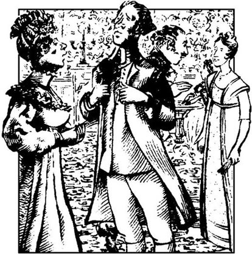
那天上午晚些时候，丽迪亚提议步行到麦里屯去见几位军官，除了玛丽，几位姐姐都同意陪她去。甚至柯林斯先生也去了。是班纳特先生鼓动他去的，他现在急切地需要清静一会儿。在路上，姑娘们很有礼貌地听着柯林斯先生妄自尊大的演讲，可是，她们一进人麦里屯，几位年龄小的便四处张望，搜索军官的影子，连听他讲话的样子都不装了。
正在这时，所有的年轻小姐都注意到了一位风度翩翩的年轻人，这个人她们以前从未见过，现在正和一位她们认识的军官沿着大街往前走。她们正在纳闷这位英俊的陌生人是谁，那位军官走过来和她们打招呼。军官获得允许之后介绍了他的朋友韦翰先生。他显然是新近从伦敦过来的，调到团里当军官。看来军官就理应他当，因为这个年轻人只需配上军官制服，便能使姑娘们完全为之倾倒。此人一表人才，谈吐文雅，待人随和，互相介绍完毕之后，这个小团体就充满了欢声笑语。他们正站在一块愉快地交谈，这时他们听到一阵马蹄声，看见达西和彬格莱骑着马沿街走来。两位先生径直来到姑娘们面前与她们打招呼。彬格莱显然对简·班纳特最感兴趣，开始跟她一个人谈话。而达西正在下决心不去看伊丽莎白时，突然注意到了那位陌生人。达西和韦翰目光相撞时，伊丽莎白正好看到他们两人的脸色。她对两人相遇时的表现感到惊讶不已。两人脸色都变了，一个白，一个红。片刻之后，韦翰先生碰了碰帽子以示行礼，达西先生则轻微地点了点头。这会是什么意思？不可能想象得出来，而且也不可能不想去探个究竟。
彬格莱先生似乎没有注意到刚才发生的事，过了一会儿便道了别，与达西先生骑着马走了。两位军官陪着几位小姐到了菲力普斯家，虽然丽迪亚再三邀请，但他们没有进去。菲力普斯太太见到外甥女总是十分高兴，听她们介绍了柯林斯先生后，很客气地向他表示欢迎。可是，关于那随和的韦翰先生，她也不能给姑娘们提供更多的情况。
“不过，我告诉你们怎么办，孩子们，”她喜气洋洋地说，“明天我请几位军官吃顿晚饭，我让菲力普斯先生去拜访一下韦翰先生，也请他过来。你们大家也都来吗？”
姑娘们兴高采烈，马上同意了这个安排，这一些人便又步行返回浪搏恩，一路谈论着将要度过的愉快的夜晚。柯林斯先生对于菲力普斯太太的彬彬有礼印象深刻，到达浪搏恩后，便向班纳特太太称赞她妹妹迷人绰约的风姿。
第二天晚上，柯林斯先生和五个表妹乘马车到达麦里屯，姑娘们一进客厅，就听说韦翰接受了姨夫的邀请，而且已经驾到，感到十分高兴。
柯林斯先生被领到起居室，四下张望并欣赏了一会儿，马上对菲力普斯太太说：“夫人，您的房间如此宽敞，家具如此精美，我必须向您表示祝贺。实际上我几乎可以想象出我正身处罗新斯小型的夏日早餐厅！”
这句话起初并没有使女主人感到十分高兴，可是，当她得知罗新斯是什么、它的主人是谁、凯瑟琳夫人的家具多么昂贵时，她才认识到刚才的话是何等的恭维。那天晚上，柯林斯先生发现菲力普斯太太很和蔼，听别人讲话很专心。这一点使他很幸运，因为班纳特家的姑娘们已经再也耐不住性子听他讲了。
所有的小姐都迫不及待地等着见到韦翰先生。他走进了屋里，显得比在场的任何军官都更有魅力，更有绅士风度。韦翰是当天最幸运的男子，差不多每个女人的目光都转向了他；伊丽莎白是最幸运的女子，因为韦翰终于在她身边坐了下来。他谈话的愉快方式使伊丽莎白感觉到他可以饶有兴趣地谈论任何事情。有些人在打牌，他不打牌，所以，大半个晚上都在与伊丽莎白聊天。伊丽莎白希望他能告诉她他是如何认识达西先生的，可是她不敢提起那个男人。不过，韦翰碰巧自己提起了这个话头，虽然讲起来有些迟疑。
“尼日斐离麦里屯很近吧，我想是？达西先生在那儿待了有——多长时间了？”
“大约有一个月了，”伊丽莎白回答说。为了不转移话题，她又补充说，“据我所知，他在德比郡有大量财产。”
“是的，”韦翰回答说，“他的年收入至少一万英镑。提起他，我比一般人都更清楚，因为我从小就跟他家关系密切。”
伊丽莎白惊讶不已。
“班纳特小姐，你昨天看到——可能会看到——我们见面时冷冰冰的样子，今天又听了我这番话，我想你会感到很奇怪的。你和达西先生很熟吗？”
“我也只希望跟他这么熟就足够了！”伊丽莎白大声说，“我们在同一屋檐下生活了四天，我觉得这个人很讨厌。”
“我们的交往太久太深，使我不能公平地判断他是否讨厌。可是我觉得多数人都会对你的评价感到震惊。”
“他在哈福德郡这儿可一点也不讨人喜欢。大家对他的高傲都感到恶心。你不会听到任何人赞扬他。”
“他得到这样的评价是罪有应得，我对此表示难过也不是装出来的。但对于他，人们一般不会作出你这样的评价。因为世人都被他的财产和地位蒙住了眼睛，或者被他的傲慢行为吓懵了，只能是他摆出什么样子，大家就看什么样子。”韦翰顿了一下，接着说，“我不知道他是否可能在尼日斐长期待下去。”
“我一点都不清楚，不过我希望他在这儿不会影响你在这边的兵团成为军官。”
“噢，不会的！我不会被达西先生赶走的。如果他想避免见到我，他应当走。我不想见他的理由我可以轻易地向全世界公开——他待我很糟糕。班纳特小姐，他已故的父亲是世界上最好的人之一，也是我所有朋友中最忠诚的。每当我和现在的达西先生在一起时，我一想到他的父亲，便会充满了最令人痛心的遗憾。达西先生对我十分恶毒，但是，我一切都可以原谅他，就是不能原谅他辱没了他先父的声名。”
伊丽莎白被强烈地吸引住了，急切地听着，但不想问什么问题。韦翰先生开始泛泛而谈麦里屯和他在那里遇到的轶闻趣事。
“实际上，这也正是我为什么会被吸引到这里参军的缘故。我早就听说麦里屯的社交圈子是十分令人愉快的。我承认，社交对我是必要的，你知道，我是一个生活无望的人。我原来并不打算参军。我应当做牧师。如果我们刚才谈到的那位先生希望的话，我现在应当是德比郡的一名教区长了，有一笔丰厚的收入。”
“是吗！”
“是的——达西先生的父亲一直很疼爱我，打算把彭伯里的牧师职位留给我。可是，遗憾的是，他死后，牧师的空缺职位却给了别人。”
“不！”伊丽莎白感到震惊，叫了起来。“可是那怎么可能呢？你为什么不寻求法律帮助，请求获得自己的合法权益？”
“达西先生的父亲没有立书面遗嘱。正直的人是不会怀疑他的意图的，但是达西先生却把它理解为仅仅是一种推荐意见。我确实没有做错什么事，让我丧失这样的职位。事实上是他恨我。我想是他父亲对我的疼爱使他心存妒意，使他一开始就耿耿于怀。”
“真是骇人听闻！虽然我从来没有喜欢过达西先生，可是从来没有想到过他有那样坏。我只是想，他总觉得自己高人一等，可是从来没有怀疑过他会这样邪恶，这样不公正，这样无情！”
“你知道，我们俩在彭伯里一块长大。我父亲把毕生的精力都用于照料彭伯里的农场，因此，已故的达西先生对我父亲十分感激，把家父看作挚友，就在我父亲临终前，他许诺以后供养我。现在的达西先生没有信守那个诺言。”
“我真感到奇怪，达西先生既然有那样的自尊心，为什么不能帮你一把！确实，他是傲慢过度，不愿显得不诚实——我不能不称之为不诚实。”
“他当然很傲慢——因为自己的地位、家庭、父亲，还有妹妹，你知道。”
“达西小姐是什么样的人？”
他摇了摇头。“批评达西家的人使我感到痛心。但是，她太像她哥哥了——非常、非常傲慢。她是个十五六岁的漂亮小姐，据我所知，很有才气。”
“我对达西先生和彬格莱先生的亲密关系感到震惊！彬格莱先生看起来那么可爱，那么和蔼，怎么会跟这样的人交朋友？”
“我根本不认识彬格莱先生，可是达西先生如果认为值得，也会和颜悦色地和人相处。”
这时，另外几个人加入了他们的谈话，话题就分散了。当柯林斯先生对菲力普斯太太谈起他的保护人时，韦翰先生迅速朝那个方向望了一下，然后问伊丽莎白：“你表兄和凯瑟琳·德·包尔夫人很熟吗？”
“我想他们不会相识多久，但是，她最近把汉斯福的教区长职务给了他。”
“你也许知道凯瑟琳夫人就是现在的达西先生的姨妈？我想她打算把她的女儿嫁给达西先生。她女儿会继承一大笔财产。”
这话使伊丽莎白笑了，因为她想到了可怜的彬格莱小姐，她正在设法吸引达西先生，这下就可能是白费力气了。晚宴结束，伊丽莎白走了，满脑子都是韦翰先生。她一路上只是想着他，和他所说的话。
第二天，她把与韦翰先生的谈话内容全部告诉了简。简又惊讶又关切地听着。她不敢相信达西先生竟如此辜负了彬格莱先生的一番情谊，又不愿怀疑像韦翰先生这样可爱的年轻人所说的话的真实性。但是，伊丽莎白坚信是达西先生的错。
那天上午，浪搏恩的一家受到了邀请。彬格莱先生已经确定了他答应在尼日斐举办的舞会的日子，就在下一个星期二。班纳特一家的所有女性都盼望着这一天，甚至玛丽也不例外。她从书上抬起头，绷着脸说：“只要我上午能空出来读些严肃的书籍，晚上和人交往一下我倒不介意。我认为适度的放松和娱乐对任何人都是有好处的。”
伊丽莎白一想到将要与韦翰先生跳舞了，感到异常兴奋，竟然作出了不同寻常的努力，和柯林斯先生好声好气地说起话来。
“先生，您接受彬格莱先生的邀请吗？如果您接受的话，作为一个牧师，您觉得跳舞合适吗？”
“我当然接受。我不但不反对跳舞，而且还希望能有幸和所有漂亮的表妹跳上一曲。我借此机会邀请您，伊丽莎白小姐，特别和我跳前两支曲子。”
她很奇怪，还有点恼火。她希望韦翰请她跳前两场，可现在却要和柯林斯先生跳！可是，她不能拒绝，而且，他的请求使她感到担心的还有另外一点。他对她似乎特别殷勤，这给她一种不祥的感觉，即，在众姐妹中莫非是她被选中了做汉斯福教区长的妻子？她观察到他对她的美貌和性格奉承的次数越来越多，便肯定他想要求婚了。不过，目前她决定按兵不动，等着瞧。
星期二晚上，伊丽莎白走进了尼日斐的大厅，在穿着红色制服的军官中怎么也找不到韦翰先生。对他的缺席，伊丽莎白感到又奇怪，又失望。她从来没有想过他会不来，所以刻意打扮了一番，希望赢得他的欢心。她知道，他的心已有一部分属于她了。但是，她马上怀疑是达西说服了彬格莱不要邀请韦翰。尽管她从一位军官那里得知实际上韦翰受到了邀请，不过有公务而被抽走了，但她还是肯定，韦翰是想避免见到达西，因此又把罪责推到了达西身上。所以，当达西和她打招呼时，她对他很恼火，几乎不能有礼貌地回答他。
不过，不一会儿她就高兴起来了，并决心在韦翰缺场的情况下尽情享受这个舞会。遗憾的是，和柯林斯先生跳的前两场舞令人十分难堪，因为她的表兄根本不会跳舞，动作笨拙极了。跟他跳完以后，她松了口气。第三场是与一位军官跳的，这位军官谈到韦翰先生和他在团里的好人缘，使她获得很大乐趣。跳完之后，达西先生走近她并请她跳舞，她感到十分惊讶。实际上，她由于过分惊讶，来不及思考就接受了他的邀请，发现自己已经在舞池中站到了他的对面。“能获许同达西先生跳舞，这对我该是多大的荣幸呀！”她想。他们在沉默中跳了一会儿，伊丽莎白说了一句话，他回答完毕，又陷入了沉默。停顿了一下，她又开了口。
“达西先生，你现在得说话了。你可以谈谈房间的大小，或是有几对夫妇。”
他笑了。“你希望我说什么我就说什么。”
“很好。这样的回答现在还可以。也许过不了多久，我会发现私人舞会比公共舞会令人愉快得多。不过，现在我们可以不说话了。安排谈话时不应当强求不喜欢谈话的人费劲去找话说。”
“你是在说自己，还是在说我？”
“两个都说。”伊丽莎白答道，面带微笑，“因为我觉得我和你很相似。我们都不合群，不愿讲话，除非能语惊四座。”
“我敢肯定你不是那样的人，”他回答道，“我说不上自己是或者不是。你显然认为我是那样的人。”
她一言不发。
“你们姊妹几个经常去麦里屯吗？”他继续问道。
“经常去，”她回答说，心里憋不住，又补充说，“你上周在那儿见到我们时，我们刚被介绍给别人。”
这句话立刻产生了效果。达西的脸上重新蒙上了一层阴冷的表情。停了片刻，他面露难色地说：“十分随和，结交朋友自然容易。至于能不能和朋友长久相处，那就很难说了。”
“他真不走运，竟然失去了您的友谊，”伊丽莎白刻薄地说，“而且失去友谊的方式使他终生受罪。”达西没有回答，仅剩一点儿时间了，又谈了几句话，舞会就结束了。
伊丽莎白走过去找到了简，兴高采烈地听她描述自己对彬格莱的感情，以及她如何坚信彬格莱对她也一往情深。但伊丽莎白似乎觉得，假如当初她们全家已达成一致，认为在舞会上出洋相越多越好的话，那么，他们这次表演是再成功不过的了，只有简是个例外。首先是柯林斯先生坚持要把自己介绍给达西先生，即他尊敬的保护人的外甥，而得到的反应却十分冷淡。接着是吃晚饭时班纳特太太禁不住大声地同卢卡斯夫人谈论她很有希望将简嫁给彬格莱。伊丽莎白意识到彬格莱姐妹和达西先生能听到这些话时，羞得两颊通红。最后是需要演奏音乐时，玛丽·班纳特走过去，充满自信地坐到钢琴前，演唱并弹奏了几首歌曲，都很糟糕。
晚上剩下的时间没给伊丽莎白带来多少乐趣。她甚至不能脱身去和熟人说话，因为柯林斯先生似乎下定了决心整个晚上都傍在她身边形影不离。幸运的是，她的好友夏洛特·卢卡斯偶尔让她松了口气，十分和善地听听柯林斯先生的某些长篇大论。伊丽莎白至少不用和达西先生说话了。他经常站在她附近，形单影只，但又不凑近了说话。
晚会结束时，伊丽莎白明显地感觉到，虽然她全家在舞会上玩得都很高兴，但彬格莱姐妹希望他们这批客人赶快离开。然而，柯林斯先生还兴致勃勃地称赞彬格莱全家的盛情款待，班纳特太太又邀请彬格莱全家尽早到浪搏恩去。她感到十分满意，确信三四个月以后，简就可以和彬格莱成婚了。她也肯定伊丽莎白将会嫁给柯林斯先生。对伊丽莎白这位她最不待见的女儿来说，这样的结合已经够可以的了，但是根本比不上简和彬格莱的婚姻来劲。
5 Mr Collins proposes twice
5
Mr Collins proposes twice
At Longbourn the next day, soon after breakfast, Mr Collins asked Mrs Bennet for permission to speak privately to Elizabeth. Mrs Bennet was delighted, and hurried the other girls out of the room, so that Elizabeth and Mr Collins were left alone together. Elizabeth did not want to stay, and got up to leave, but after a moment's thought, sat down again quietly, determined to listen and reply politely.
'My dear Miss Elizabeth,' said Mr Collins seriously, 'this little unwillingness to hear me, this modesty of yours, can only add to your other charms. You can hardly doubt the purpose of my speech. Almost as soon as I entered the house, I chose you as the companion of my future life. But before I am carried away by my feelings, I think I should state my reasons for marrying.'
Elizabeth was trying so hard not to laugh at the idea of Mr Collins being carried away by his feelings that she was unable to reply.
'First,' he continued, 'it is right for a priest to marry, as an example to other people. Secondly, I'm sure marriage will add greatly to my happiness, and thirdly, which perhaps I should have mentioned earlier, my generous patron has advised me to marry. "Find an active, useful sort of person," she told me, "a woman who can make a small income go a long way. Bring her to Hunsford as your wife, and I'll visit her." So I decided to choose a wife from among my Bennet cousins, to lessen the loss to the family when the sad event of your father's death takes place. I flatter myself that you will appreciate my motives. And now, nothing remains but to convince you of the violence of my affection. I am quite indifferent to the fact that you bring little money with you into our marriage, and promise you that I shall make no ungenerous reference to this after we are married.'
It was absolutely necessary to interrupt him now.
'Sir, you forget I have given no answer. Accept my thanks for the compliment you are paying me, but it is impossible for me to accept your proposal.'
'Of course I understand,' said Mr Collins, 'that young ladies often do not accept a proposal of marriage the first time. I am therefore not at all discouraged, and sincerely hope we shall be married soon.'
'Sir,' cried Elizabeth, 'your hope is rather extraordinary after what I've said! I am perfectly serious. You could not make me happy, and I'm convinced I'm the last woman in the world who would make you happy. And I'm sure that if Lady Catherine knew me, she would find me poorly qualified for the situation,'
'If I knew Lady Catherine thought so—'began Mr Collins, looking very worried. 'But I cannot imagine she would disapprove of you. And when I have the honour of seeing her again, I shall certainly tell her how modest, economical and practical you are.'
'Indeed, Mr Collins, all praise of me will be unnecessary. Pay me the compliment of believing what I say. I hope you will be very happy and very rich, but I cannot accept your proposal.' She got up and was going to leave the room, but Mr Collins was speaking to her again.
'I am far from accusing you of cruelty in refusing me, as I know it is the custom with elegant ladies in society to refuse a gentleman the first time. I hope to receive a more favourable answer next time I speak to you of marriage.'
'Really, Mr Collins,' cried Elizabeth with some warmth, 'you do puzzle me! I do not know how to express my refusal so that it convinces you!'
'You must allow me to flatter myself, dear cousin, that you do not intend to refuse me for long. My situation in life, my connections with the de Bourgh family, and my relationship to your own, all make my proposal a very suitable one. And you should remember that in spite of your many admirable qualities, it is not certain that you will receive any other offer of marriage, as you have very little money of your own.'
'Sir, thank you again for the honour you have done me, but to accept your proposal is absolutely impossible. Can I speak plainer than that? Don't think of me as an elegant female, but as a thinking creature speaking the truth from her heart!'
'You are charming!' he cried, 'and I' m sure that when both your excellent parents agree, you will accept my proposal!'
Elizabeth did not reply, but left the room silently, determined to ask her father, if necessary, to make her refusal clear to the self-deceiving Mr Collins.
Mrs Bennet had been waiting eagerly for the end of the interview, and when she saw Elizabeth leave the room, she hurried in to offer her congratulations to Mr Collins. He received them with pleasure, adding that he was sure his cousin's refusal was a natural result of her modesty and delicacy of character.
'Refusal?' repeated Mrs Bennet, shocked. 'Lizzy refused you? Do not worry, Mr Collins. I shall speak to her at once. She's a very obstinate, foolish girl, but I'll make her accept you.'
'Pardon me, madam,' cried Mr Collins, 'but if she's really obstinate and foolish, I do not think she would be a suitable wife for a man in my situation.'
'Sir, you quite misunderstand me,' said Mrs Bennet, alarmed. 'She's only obstinate in a matter like this. In everything else she is very agreeable. I'll see Mr Bennet and we'll arrange it with her, I'm sure.'
She did not give him time to reply, but hurried to the library, where she knew she would find her husband.
'Oh, Mr Bennet, we need you urgently! We're all in such confusion! You must come and make Lizzy marry Mr Collins!'
Mr Bennet raised his eyes from his book as she entered, and stared at her with calm unconcern. 'I do not have the pleasure of understanding you, 'he said. 'What are you talking about?'
'Lizzy declares she won't have him, and if you don't hurry, he'll change his mind and not have her.'
'So what should I do? It seems a hopeless business.'
'Speak to her about it yourself. Tell her you insist on her marrying him.'
'Call her in here. She shall hear my opinion.'
Mrs Bennet gladly rang the bell, and the servant brought Elizabeth into the library.
'Come here, child,' said her father as she appeared. 'I've sent for you on a very important matter. I understand that Mr Collins has made you an offer of marriage, and you have refused?' When Elizabeth nodded, he continued, 'Very well. Now, your mother insists on your accepting. Isn't that right, Mrs Bennet?'
'Yes, or I'll never see her again.'
'You now have an unhappy choice to make, Elizabeth. From this day on, you must be a stranger to one of your parents. Your mother will never see you again if you do not marry Mr Collins, and I will never see you again if you do.'
Elizabeth could not help smiling, but Mrs Bennet, who had been sure her husband supported her, was very disappointed.
'What do you mean, Mr Bennet? You promised me you would insist on her marrying him.'
'My dear,' replied her husband, 'I have two small requests to make. First, that you will accept that I know what I promised or did not promise, and secondly, that you will all leave me in peace as soon as possible.'
That afternoon, Charlotte Lucas came to visit Elizabeth, and found the family still in great confusion. The younger girls were quite excited by the news of Mr Collins' proposal, and Mrs Bennet was most annoyed with Elizabeth.
'Oh dear Miss Lucas,' cried Mrs Bennet, 'can't you persuade Elizabeth to accept Mr Collins? Nobody else wants to help me! Oh, how ill I feel! And look at Lizzy now! She's so unconcerned! But I tell you, Miss Lizzy, if you go on refusing every offer of marriage like this, you'll never get a husband at all! And I won't be able to provide for you when your father is dead, I warn you now. I told you in the library that I wouldn't speak to you again, and I won't. I have no pleasure in talking to an undutiful child like you. Not that I have much pleasure in talking to anybody, with my headaches. Nobody knows how I suffer! But of course those who do not complain are never pitied.'
Her daughters listened in silence, aware that any attempt to calm her would only increase her annoyance. Elizabeth, however, was determined not to marry Mr Collins, and in the end Mrs Bennet was obliged to accept that fact. When Mr Collins realized that Elizabeth had meant what she said, his manner towards her became coldly and stiffly polite. His long speeches and flattering compliments were transferred for the rest of the day to kind Charlotte Lucas, who took on herself the trouble of listening to him, for which all the Bennets were very grateful.
The next day a letter was delivered to Jane from Netherfield. Elizabeth saw her sister's expression change as she read it, and when they were alone, she asked about it.
'It's from Caroline Bingley,' said Jane, 'and it has surprised me very much. The whole party have left Netherfield, and are on their way back to London, probably for the winter. They may not return to Netherfield at all. She says the only thing she sincerely regrets is leaving me behind in Hertfordshire, and promises to write very frequently.'
Elizabeth did not trust Miss Bingley's apparent affection for Jane. 'I really don't think their departure matters very much,' she said. 'Mr Bingley won't be kept in London by his sisters. I'm sure he'll be back at Netherfield soon.'
'But perhaps he prefers to stay in London, where many of his friends are. But I haven't told you everything yet. Let me read you the part which particularly hurts me—'
Mr Darcy is impatient to see his sister, and we confess we are also eager to see her again. Nobody is more beautiful elegant or accomplished than Georgiana Darcy. Louisa and I have great affection for her, and hope one day to call her sister. My brother admires her very much. He will have frequent opportunities of seeing her, and although I am his sister I must say I think he is most capable of winning any woman's heart.
'What do you think of this, dear Lizzy? Isn't it clear enough? Caroline doesn't wish or expect me to become her sister-in-law; she's convinced of her brother's indifference towards me, and, perhaps because she suspects my feelings for him, she (most kindly!) warns me that he's very likely to marry someone else!'
'I have a totally different opinion. Miss Bingley sees her brother is in love with you, while she wants him to marry Miss Darcy. We aren't rich enough or grand enough for them, and she is eager to have a family connection with the Darcys, so that it may be easier for her to marry Mr Darcy. So she follows her brother to London, hoping to keep him there, and tries to persuade you he doesn't care about you. But of course he's in love with you!'
'I really can't agree with you about Caroline. I think she's incapable of deceiving anyone. But Lizzy, my dear sister, even if she's wrong about her brother, and he does care for me, could I be happy in accepting a man whose sisters and friends all wish him to marry someone else?'
'You must decide for yourself, and if you consider it more important to do what his sisters want, than to gain the happiness of being his wife, I certainly advise you to refuse him.'
'How can you say that?' said Jane, smiling a little. 'You know I wouldn't hesitate, although I'd be sad if they disapproved of me. But, oh dear, if he doesn't come back to Netherfield, I'll never have to make the decision! '
But Elizabeth was sure Mr Bingley could not be kept away from Jane by his sisters, and soon persuaded Jane to take a more hopeful view of the situation.
That day the Bennets, with Mr Collins, went to dinner with the Lucas family at Lucas Lodge. Again it was Charlotte who spent most of the evening listening to Mr Collins. Elizabeth was very relieved, and thanked her friend gratefully for the trouble she was taking. But Charlotte's kindness had a particular aim, which Elizabeth was unaware of. Her plan was to encourage Mr Collins to transfer his attentions to herself. In fact, she was managing so well that, when she said goodnight to him after dinner, she would have felt sure of success if he had been staying in Hertfordshire for another week. But she did not fully appreciate the fire and independence of his character, which caused him to get up very early the next morning and escape from Longbourn House, in a great hurry to reach Lucas Lodge and throw himself at her feet. She did not keep him waiting for an answer, and the happy couple found themselves engaged as quickly as Mr Collins' long speeches would allow.
Charlotte's parents were delighted to agree to the marriage, and Lady Lucas began to work out, with more interest than she had ever felt before, how many more years Mr Bennet was likely to live. Charlotte herself was quite satisfied. Mr Collins, certainly, was neither sensible nor agreeable, but still he would be a husband. She did not think highly of men or of marriage, but she had always intended to marry. Although marriage might not always bring happiness, it was the only honourable way in which a well-educated woman with little income could provide a home for herself. Now twenty-seven, and lacking beauty, she felt she was lucky to have found a husband.
She knew, however, that Elizabeth, whose friendship she greatly valued, would be astonished and possibly disapproving. So she decided to go to Longbourn House to tell her friend the news herself. Elizabeth was indeed shocked at first, and could not help crying out in surprise, but when Charlotte explained her reasons for accepting Mr Collins, Elizabeth tried hard to understand. When the rest of the Bennet family heard the news, they were also astonished. Mrs Bennet was quite horrified, and could not stop complaining bitterly about Charlotte's wickedness, Mr Collins' stupidity and Elizabeth's obstinacy. Mr Bennet was much calmer, only saying he was pleased to discover that Charlotte, whom he used to consider quite sensible, was as foolish as his wife, and more foolish than his daughter!
That day was Mr Collins' last at Longbourn, and he left with many speeches of thanks, as well as a promise to return very soon. Mr Bennet warned him to be careful not to offend his patron, by being absent from his duties too often, but Mr Collins, although extremely grateful for this sign of Mr Bennet's cousinly affection for him, was naturally eager to return to Hertfordshire, to see his future wife.
Only two weeks later he did, in fact, come back to stay at Longbourn, but spent most of his time at Lucas Lodge, making arrangements for the wedding. Mrs Bennet still felt very offended by him, but she was now becoming anxious about something even more important—Mr Bingley's continued absence. Day after day had passed with no news since the arrival of Caroline Bingley's letter. Elizabeth was now rather worried, and Jane feared the worst. Finally a second letter arrived from Caroline Bingley, and when Jane read it, she realized that all hope was over. The Bingley family were staying in London for the whole winter, and Georgiana Darcy was a frequent member of their circle. Miss Bingley boasted joyfully of this friendship, and looked forward to her brother's probable marriage to Miss Darcy.
Although she was deeply upset, Jane bravely tried to control her feelings. 'Do not worry, Lizzy, I shall be able to forget him in a while. I have nothing to complain of, as he made no promises to me. I just thought he cared for me, but I was wrong. Luckily, no one is hurt except myself.'
'My dear Jane!' said Elizabeth. 'You are too good. You always think the best of everybody. Now I think the worst of most people, and do not see much real value or common sense around me. Mr Bingley, for example. He may not be intending to hurt you, but misery can be caused by someone being just weak and indecisive. I'm convinced his sisters and his friend, Mr Darcy, are trying to influence him against you. Another example is Charlotte. I can't understand how she could agree to marry such a self-important, proud, silly man!'
'Dear Lizzy, 'said Jane, 'we must respect Charlotte's decision. She may well be happy with Mr Collins. And as for Mr Bingley, we shouldn't expect a sociable young man to be so careful of his behaviour. Women often imagine admiration means more than it really does.'
'And men want that to happen.'
'I prefer to believe that I was mistaken in thinking he cared for me, and that his sisters love him and approve of his wish to marry Miss Darcy. I don't want to think badly of him or his sisters. That would be worse than anything.'
Elizabeth had to accept Jane's wishes, and from then on, Mr Bingley's name was seldom mentioned between them.
privately adv. 私下地。
unwillingness n. 不心甘情愿：勉强。
modesty n. state of being modest. 谦逊。
priest n. clergyman of a Christian church. 牧师；神父。
motive n. that which causes somebody to act. 动机。
violence n. state of being violent. 暴行。
reference n. referring. 提及。
sincerely adv. in a sincere manner. 诚挚地。
practical adj. concerned with practice. 实际的。
unnecessary adj. not necessary. 不必要的。
accuse v. 控告。
puzzle v. cause to be perplexed. 使困惑。
self-deceiving adj. 自欺的。
eagerly adv. full of, showing, strong desire. 渴望地。
result n. outcome. 结果。
obstinate adj. not easily giving way to argument or persuasion. 倔强的。
declare v. make known publicly and clearly. 宣布。
hopeless adj. feeling no hope. 无希望的。
nod v. bow slightly and quickly as a sign of agreement. 点头表示同意。
support v. hold up. 支持。
request n. asking. 请求。
confusion n. being confused. 混乱。
undutiful adj. not doing one's duty well. 不尽职的；不孝顺的。
obliged adj. forced. 被迫的。
transfer v. change position. 转移。
deliver v. take to the person. 交付。
particularly adv. in a particular manner. 特别地。
impatient adj. not patient. 不耐烦的。
capable adj. able. 有能力的。
likely adv. probably. 或许。
totally adv. completely. 完全地。
grand adj. 高贵的。
view n. opinion. 见解。
aim n. purpose. 目的。
unaware adj. not knowing. 不知道的。
escape v. get away. 逃走。
honourable adj. possessing the principles of honour. 高尚的。
disapproving adj. 不赞成的。
bitterly adv. filled with disappointment. 厉害地。
absence n. being away. 缺席。
boast v. make a boast. 自夸。
misery n. painful happenings. 痛苦的事。
example n. fact. 例子。
柯林斯先生两次求婚
5 柯林斯先生两次求婚

第二天在浪搏恩，吃过早饭后不久，柯林斯先生请求班纳特太太允许他和伊丽莎白单独谈谈。班纳特太太满心欢喜，赶紧把其他几位姑娘轰出门去，这样伊丽莎白和柯林斯先生就可以单独在一起了。伊丽莎白不想待在这儿，起身要走，但稍加思索之后，又静静地坐了下来，下决心听下去并作出有礼貌的回答。
“我亲爱的伊丽莎白小姐，”柯林斯先生很严肃地说，“你稍许的推却、你的怕羞害臊更增添了你的天生丽质。你对我说话的用意不会有什么疑问。我差不多一进门，就把你选做我的终生伴侣。不过，在我被感情冲昏头脑之前，我想我应当先陈述一下结婚的理由。”
听到柯林斯先生所谓的被感情冲昏头脑，伊丽莎白使劲地憋住才没有笑出声来，以至于未能答出话来。
“首先，”他继续道，“牧师应当结婚，以便给他人树立良好榜样。其二，我相信婚姻会大大促进我的个人幸福。其三，这一条也许应当早点提，就是我的慷慨的保护人建议我结婚。‘找一个活泼有用的女人，’她告诉我，‘一个能勤俭持家、细水长流的女人。把她娶到汉斯福，然后我去拜访她。’于是，我决定从班纳特家表妹中选一个做妻子，以便减轻一下令尊不幸过世后家庭所蒙受的损失。我自以为你能赞赏我的动机。现在，我没别的可说了，剩下的就是让你相信我感情的冲动了。我们结婚你没有什么嫁妆财物，我一点都不嫌弃，并向你保证，结婚后决不会小气地向你提起此事。”
现在非打断他的话不可了。
“先生，你忘了我还没有回答你。你对我的恭维，我表示感谢，但是，接受你的求婚是不可能的。”
“我当然理解，”柯林斯先生说，“年轻的小姐遇到求婚时第一次通常不接受。因此，我一点都不气馁，并真切地希望我们不久就会结婚。”
“先生，”伊丽莎白嚷道，“我拒绝你以后你的希望真是太不同寻常了！我的话是完全严肃的。你不会使我幸福，在这个世界上，我也是最不可能给你幸福的人。而且我相信，如果凯瑟琳夫人认识我，她会发现我做你妻子不合格。”
“我要是知道凯瑟琳夫人这么想——”柯林斯先生又开口道，看起来有点担忧。“可是难以想象她会不满意你。我下次有幸再见到她时，一定会告诉她你多么谦虚，多么勤俭，多么实际。”
“柯林斯先生，说实话，对我的一切称赞都是没必要的。相信我说的话才是对我的恭维。我希望你十分幸福，十分富有，但是我不能接受你的求婚。”她起身正要离开房间，可是柯林斯先生又对她说话了。
“你残酷地拒绝了我，我一点也不责怪你，因为我知道社会上高雅的小姐总是习惯于第一次拒绝先生的求婚。我希望下次同你谈起婚姻大事时能给我一个肯定的答复。”
“柯林斯先生，”伊丽莎白有些激动地嚷道，“你真使我迷惑不解！我不知道如何表示拒绝你才能相信！”
“亲爱的表妹，我的理解是你不会长时间拒绝我的，你应当容许我这样想。我的地位，我与德·包尔家的关系以及我与你们家的关系都使得我的求婚十分合适。并且你要记住，虽然你有很多品质令人钦佩，但你能不能得到别人的求爱，还不敢肯定，因为你自己一贫如洗。”
“先生，再次感谢你对我的垂青，但是接受你的求婚是绝对不可能的。我还能说得比这更清楚吗？不要把我看成高雅的女性，把我看成一个能从心底说真话的会思考的人吧！”
“你真有魅力！”他叫道，“我相信，当你尊敬的父母都同意后，你也会接受我的求婚的！”
伊丽莎白没有回答，而是默默地离开了房间，决心去请父亲（如果有必要的话）把她的意思向这个自欺欺人的柯林斯先生说清楚。
班纳特太太一直在热切地期待着会面的结束，她看到伊丽莎白出来以后，赶忙进屋向柯林斯先生表示祝贺。他十分高兴地接受了祝贺，并补充说，他肯定表妹的拒绝是谦虚和矜持的自然结果。
“拒绝？”班纳特太太重复道，大吃一惊。“丽萃拒绝了你？柯林斯先生，别担心，我马上跟她说。她很固执，很愚蠢，可是我一定让她接受。”
“对不起，夫人，”柯林斯先生叫道，“如果她真是又固执又愚蠢，那我想她做我这样的人的妻子也不合适。”
“先生，你过于误解了我，”班纳特太太说道，感到惊慌失措。“只在这种事情上她才固执，别的事她都很随和。我去找班纳特先生，我们俩把这件事包了，我有把握。”
她没有等他回答，而是急匆匆奔向书房，她知道在那儿肯定会找到丈夫。
“噢，班纳特先生，我们十万火急，需要你帮忙！都乱套了！你必须过来让丽萃嫁给柯林斯先生！”
她进来后，班纳特先生从书上抬起眼皮，漠不关心地望着她。“对不起，我没听懂你的话。”他说，“你在说什么？”
“丽萃表示她不要柯林斯先生，如果你不快点，他也就改变主意，不要她了。”
“那我应当怎么办呢？看来这事没指望了。”
“你亲自跟她谈谈。告诉她你非要她嫁给他不可。”
“叫她过来。她会听从我的意见的。”
班纳特太太高兴地拉响了铃，仆人把伊丽莎白带到了书房。
“过来，孩子，”父亲一见她便说，“我叫你过来有件要紧的事情。我听说柯林斯先生向你求婚，你拒绝了？”伊丽莎白点了点头，父亲接着说：“很好。现在，你妈妈非让你接受不可。是吧，班纳特太太？”
“是的，否则，我后半辈子不再见她。”
“伊丽莎白，现在你面临着一个不愉快的抉择。从今天开始，你不和母亲成为陌路人，就要和父亲成为陌路人了。你要是不嫁给柯林斯先生，你妈妈就不会再见你；你要是嫁给他，我就不会再见你。”
伊丽莎白禁不住笑了，班纳特太太本来十拿九稳丈夫会支持她，可是现在感到很失望。
“你这是什么意思，班纳特先生？你答应过我你会迫使伊丽莎白嫁给他的。”
“亲爱的，”丈夫回答道，“我有两个小小的请求。首先，我答应过什么，没答应过什么，我心里清楚，这一点请你接受。第二，你们都赶快离开，让我清静一会儿。”
那天下午，夏洛特·卢卡斯来看伊丽莎白，发现全家还是乱哄哄的。几个小女儿都为柯林斯先生求婚的消息感到激动不已，而班纳特太太为伊丽莎白窝了一肚子火。
“噢，亲爱的卢卡斯小姐，”班纳特太太叫道，“你能不能说服伊丽莎白接受柯林斯先生？没有一个人愿意帮助我！噢，我真难过！你瞧那丽萃！像没事人似的！不过我告诉你，丽萃小姐，如果你继续拒绝这样的求婚，你根本就找不到丈夫！你父亲死后我也不能养活你，我警告你。我在书房告诉过你，我再也不会理你，我说到做到。跟你这样的不孝之女说话，我感到难受。我不是说跟别人说话就高兴，我的头疼。没人知道我受多大罪！当然，不抱怨就永远得不到怜悯。”
几个女儿一言不发地听着，都知道，安慰她等于火上浇油。可是，伊丽莎白下定了决心不和柯林斯先生结婚，最后班纳特太太不得不接受这样的事实。柯林斯先生认识到伊丽莎白说话算数后，他对她的态度就变得冷若冰霜、敬而远之了。他的长篇大论和吹捧恭维之辞在这天剩下的时间里都转移到了好心的夏洛特·卢卡斯身上。卢卡斯小姐不厌其烦地听他啰嗦，班纳特全家对此都很感激。
第二天，从尼日斐给简送来了一封信。伊丽莎白看到姐姐读着信脸色变了，别人都走了以后，她问姐姐是怎么回事。
“是卡罗琳·彬格莱的来信，”简说，“我感到很奇怪。那些人全部离开了尼日斐，正在返回伦敦的路上，可能去过冬。他们可能不会再来尼日斐了。她说她唯一感到真切遗憾的是把我丢在了哈福德郡，并答应经常给我写信。”
伊丽莎白不相信彬格莱小姐对简的明显偏爱。“其实我觉得他们离开没有什么大不了的，”她说，“彬格莱先生不会被他的妹妹困在伦敦的。我相信他不久就会回到尼日斐。”
“但是，也许他更愿意留在伦敦，他的很多朋友都在那儿。我还没有给你讲完呢。我给你读一下最令我伤心的那一段——”
达西先生迫不及待地要见他的妹妹，我们承认我们也渴望再次见到她。没有人比乔治安娜·达西更漂亮、优雅、多才多艺了。露易莎和我对她很有感情，希望有一天能以姐妹相称。我哥哥十分爱慕她，他们有频繁的见面机会，我虽然是他的妹妹，可是，我得承认，我哥哥最能博得所有女人的欢心。
“你觉得这是什么意思，亲爱的丽萃？这还不够清楚吗？卡罗琳不愿意或者不期望我做她的嫂子；她深信她哥哥对我没有一点感情，而且，也许因为怀疑我爱上了她哥哥，便（十分善意地）警告我说他很有可能跟别人结婚！”
“我的看法和你完全不同。彬格莱小姐看到她哥哥爱上了你，而她却希望哥哥娶达西小姐。对他们来说，我们不够有钱有势，所以她热衷于和达西家攀亲，这样她要嫁给达西先生就容易些。因此，她跟哥哥一块去了伦敦，希望把他留在那儿，并且企图让你相信，她哥哥根本不把你当回事。可是，他当然是爱上了你！”
“关于卡罗琳的想法，我真的不能同意你的分析。我觉得她不会欺骗任何人。可是，丽萃，我亲爱的妹妹，即便她对她哥哥的看法是错的，即便她哥哥确实把我当回事，那么，如果妹妹和朋友都希望他娶别人，那我接受他的爱会感到心安理得吗？”
“这就看你了。如果你认为与做他妻子的幸福比起来，照他妹妹的意思办更重要的话，我当然建议你还是拒绝他。”
“你怎么能这样说？”简笑了笑，说道。“你知道我是不会犹豫的，尽管她们要是不赞成的话我会感到难过。可是，天啊，如果他不回尼日斐，我就永远不用作决定了！”
可是，伊丽莎白坚信彬格莱先生不会因为妹妹而与简分手的，一会儿就说服了简对形势的估计要乐观些。
那天，班纳特一家，加上柯林斯先生，到卢卡斯府上与卢卡斯一家聚餐。这次又是夏洛特花了大半个晚上听柯林斯先生叙说。伊丽莎白感到十分轻松，对朋友这种代人受过的做法千恩万谢。但是夏洛特的和蔼可亲是别有用心的，这一点伊丽莎白一无所知。她的计划就是鼓励柯林斯先生将注意力转移到自己身上。实际上，她将局面控制得很好，晚饭后向柯林斯先生道别时，她感到，如果他在哈福德郡再待上那么一个星期，她就有百分之百的成功把握。但是她没有完全领会到柯林斯先生性格中的热烈和独立性。这种性格促使他第二天早上起了个大早，从浪搏恩宅院逃了出去，急匆匆赶到卢卡斯府上，拜倒在卢卡斯小姐脚下。她没有让柯林斯先生等待答复，他的长篇大论一结束，这一对幸福的伴侣就订下了终身。
夏洛特的父母很乐意地许下了这桩婚事，而卢卡斯夫人开始以极大的兴趣盘算着班纳特先生还可能活多少个年头。夏洛特本人也很满意。当然，柯林斯先生既无理智，又不随和，但做个丈夫还是可以的。她从来没有把男人或婚姻看得那么重要，但她一直打算结婚。虽然结婚并非总能带来幸福，但一个没有多少收入、受过良好教育的女人要想给自己安个家，这也算是唯一体面的方法。她现在已经27岁了，又相貌平平，她感到，找到了丈夫是件幸运的事。
不过，她知道，伊丽莎白（她十分珍视与伊丽莎白的友谊）会感到震惊，而且还可能反对。于是她决定亲自到浪搏恩府上向朋友通报这一消息。伊丽莎白开始确实吓了一跳，并且禁不住惊讶得叫了起来，可是当夏洛特解释了接受柯林斯先生求婚的理由之后，她便努力去理解她。班纳特家其他人听到这个消息后也都感到惊讶不已。班纳特太太很反感，禁不住骂夏洛特阴险，骂柯林斯先生愚蠢，骂伊丽莎白固执。班纳特先生要平静得多，只是说他很高兴地发现夏洛特像他妻子一样愚蠢，比他女儿更加愚蠢，而以前还以为她相当有理智呢。
那一天是柯林斯先生在浪搏恩待的最后一天，他离开时说了很多表示感谢的话，并许诺不久还会再来。班纳特先生提醒他要小心谨慎，不要缺勤太多，得罪了保护人；但是，柯林斯先生虽然对班纳特先生表现出的叔侄情谊极为感激，他自然还是急于回到哈福德郡，去看他未来的妻子。
实际上，只过了两星期，他的确又来到了浪搏恩，但大部分时间都花在卢卡斯府，为婚礼作些安排。班纳特太太仍旧对他感到不快，但现在开始对一件更为重要的事情感到焦虑——就是彬格莱先生迟迟不归。自从卡罗琳·彬格莱来信之后，日复一日，再也没有消息。伊丽莎白现在相当担忧，简最为害怕。终于，卡罗琳·彬格莱来了第二封信，简读完后，认识到一切希望都化为泡影。彬格莱全家要在伦敦度过整个冬天，乔治安娜·达西又是那个圈子的常客。彬格莱小姐兴高采烈地吹嘘这种友谊，并期待着她哥哥与达西小姐能够成婚。
简虽然感到深深的不安，但她勇敢地努力控制住自己的感情。“丽萃，别担心，我很快就会把他忘掉的。我没什么可抱怨的，他也没有向我作过许诺。我只是认为他对我有意，可是我错了。还好，除了我自己，这还没有伤害到别人。”
“我亲爱的简！”伊丽莎白说，“你太善良了。你总是把大家往好里想。现在，我认为大多数人都是坏的，在我的周围也看不到多少真正有价值或者明白事理的人。例如彬格莱先生。他可能不是故意伤害你，但一个人仅仅因为软弱无能或优柔寡断就完全可能招致痛苦。我确信他的妹妹和朋友达西先生都在企图影响他，和你作对。另外一个例子是夏洛特。我不明白她为什么会同意嫁给这样一个自高自大、愚蠢无比的男人！”
“亲爱的丽萃，”简说，“我们必须尊重夏洛特的决定。她和柯林斯先生可能会很幸福。至于彬格莱先生，我们不能期望这样善于社交的年轻人那么注意自己的行为。女人经常把爱慕想象得超出了其本身的含义。”
“而男人也想要女人那样想。”
“我倒愿意相信是我误解了他对我的意思，而且他妹妹是爱他的，并且赞成他同达西小姐结婚的愿望。我不想把他或他的妹妹想得太坏。那样做是最糟糕的事情。”
伊丽莎白不得不接受简的愿望，从那以后，彬格莱的名字在她们之间很少被提及。
6 Elizabeth visits Mr and Mrs Collins
6
Elizabeth visits Mr and Mrs Collins
The following Monday Mrs Bennet had the pleasure of receiving her brother and his wife, who came as usual to spend Christmas at Longbourn. Mr Gardiner was a sensible, gentlemanlike man. The Netherfield ladies would have had difficulty in believing that a man who lived by buying and selling could be so well-mannered and agreeable. Mrs Gardiner, who was several years younger than Mrs Bennet and Mrs Philips, was a pleasant, intelligent, elegant woman, and a great favourite with her Longbourn nieces, especially the two eldest, who often stayed with her in London.
When Mrs Gardiner had given the presents she had brought with her, and described the newest fashions, she was obliged to listen to Mrs Bennet's complaints.
'I've suffered greatly since your last visit, sister!' cried Mrs Bennet. 'Just imagine! Two of my daughters were very close to marriage—and then—nothing! I do not blame Jane, who would have got Mr Bingley if she could, but Lizzy! Oh, sister! It is hard to think she might have been Mrs Collins by now, if she hadn't been so obstinate! The result is that Lady Lucas will have a daughter married before me. It makes me quite ill, to have such a disobedient daughter and such selfish neighbours. But your coming just now is a great comfort to me, and I am very glad to hear what you tell us, about long sleeves.'
Mrs Gardiner made a suitably sympathetic reply to her sister-in-law, and later that day found the opportunity to discuss the matter in more detail with Elizabeth, alone.
'I am sorry for Jane,' she said kindly, 'but, Lizzy, these things happen so often! A young man like Mr Bingley frequently falls in love with a pretty girl, and when chance separates them, he forgets her very quickly.'
'Yes, aunt,' said Elizabeth, 'but in this case it was not chance, but the young man's interfering friends, who separated Jane and Mr Bingley. I'm sure he was violently in love with her.'
'Poor Jane! She's so sensitive. I'm afraid she may not get over it for some time. Now, if it had been you, Lizzy, you would have recovered more quickly, by finding humour in the situation. But do you think I could persuade Jane to come back with us to London? Perhaps a change of air would make her feel better.'
Elizabeth was extremely grateful to her aunt for this kind suggestion, and felt sure Jane would gladly agree.
'I hope,' added Mrs Gardiner, 'that she will not be influenced by the hope of seeing the young man. We live in such a different part of town that it is very unlikely they will meet, unless he actually comes to see her.'
'And that is quite impossible, because his friend Mr Darcy would not allow him to visit so unfashionable an address!' But despite her protest, Elizabeth secretly thought that Jane might see Bingley in London and that a meeting would probably reawaken his affection for her.
The Gardiners stayed at Longbourn for a week, and Mrs Bennet made sure there was always some entertainment for her brother and sister-in-law. Whenever there was a dinner party at Longbourn House, some of the officers were always invited. Mrs Gardiner, who had noticed that Mr Wickham was a very frequent visitor and that Elizabeth spoke admiringly of him, took care to observe them both. She saw enough to make her a little anxious, and decided to speak to Elizabeth about him when they were alone.
'Lizzy,' she began, 'I can see that you and Mr Wickham like each other. But I must warn you not to get seriously involved with him. I admit he's a most interesting young man, but sadly he has no fortune. You are a sensible girl, and must realize that you would disappoint your father by agreeing to marry a penniless young man.'
'My dear aunt, do not worry. I'll take care of myself, and Mr Wickham too. He won't be in love with me, if I can prevent it.'
'Elizabeth, be serious.'
'I'm sorry, aunt, I'll try again. At present I'm certainly not in love with him. But he is by far the most agreeable man I've ever met, and if he really loved me... But I would hate to disappoint my father or make any of you unhappy. I cannot promise what I will do, but I will really try to do what I think is wisest. I hope you are satisfied with that.'
Her aunt replied that she was, and received Elizabeth's thanks for her kind advice. Several days after this, the Gardiners returned to London, taking Jane with them.
The day of Mr Collins' wedding soon arrived, and Mrs Bennet had to watch Charlotte Lucas become Mrs Collins. Before the bride left Longbourn for Hunsford, however, she asked Elizabeth to come and visit her in her new home as soon as possible. Elizabeth could not refuse, although she did not imagine it would be an enjoyable visit. It was arranged that Elizabeth would accompany Sir William Lucas and Maria, one of his other daughters, on their intended visit to Hunsford in March.
A week after Jane's departure, Elizabeth received a letter from her sister, saying that she had seen Miss Bingley, and hoped to continue their friendship. Elizabeth shook her head over this. She was not surprised to hear from Jane a few weeks later that Caroline Bingley had made no further attempts to communicate with her former dear friend. Elizabeth was saddened to read of Jane's disappointment, but felt more cheerful when she told herself that Jane would no longer be deceived, by the sister at least. All expectation from the brother was now absolutely over. As a punishment for him, she seriously hoped he would soon marry Mr Darcy's sister, who, according to Wickham, would make him quickly regret what he had thrown away.
At about this time, Elizabeth also received a letter from Mrs Gardiner, asking about Wickham, and she was able to reply quite honestly that there was no danger of her marrying him. He had transferred his affections to a Miss King, who had recently inherited ten thousand pounds. Elizabeth saw exactly what was happening, but her heart had only been slightly touched, and she was able to convince herself that it was quite natural for such an agreeable young man to wish for fortune and independence.
January and February passed, and the time for Elizabeth's visit to Mr and Mrs Collins approached. She had improved the plan, by arranging to spend a night in London at her uncle and aunt's house, before continuing the journey into Kent. She was very much looking forward to seeing Jane, who was still staying with the Gardiners.
The journey seemed long to Elizabeth, because Sir William and Maria had nothing to say worth hearing. But when the coach arrived at the Gardiners' house at lunch-time, Elizabeth was delighted to see that her sister looked as healthy and lovely as before. In a private conversation with her aunt later, however, Elizabeth discovered that Jane had been suffering from periods of depression, although she always tried bravely to appear cheerful.
The afternoon and evening passed only too quickly, and the next day Elizabeth and the other travellers set off again. When the coach arrived in Hunsford, they were all quite excited to see, on one side of the road, Lady Catherine's great park, which they had heard so much about. At last, on the other side, they came to the Rectory, where they were warmly welcomed by Mr Collins and Charlotte.
Elizabeth was more and more pleased she had come, when she found herself so affectionately received. She saw instantly that marriage had not changed her cousin's manners. He insisted on greeting them all with formal politeness and long speeches, and showed them round the house, explaining its many good points in exhausting detail. Elizabeth could not help thinking that perhaps he was speaking particularly to her, as if wishing to make her feel what she had lost in refusing him. But although everything seemed neat and comfortable, she was unable to please him with a sigh of regret. In fact, she wondered how Charlotte could look so cheerful, with such a companion. But whenever Mr Collins said anything of which his wife might be ashamed, which was quite often, Charlotte wisely did not appear to be listening. And when Mr Collins showed them proudly round his garden, in which he himself enjoyed working, Elizabeth admired the serious way in which Charlotte praised gardening as a most healthy exercise, and admitted encouraging her husband to work outdoors as much as possible.
Elizabeth had to confess to herself that, surprisingly, Charlotte really appeared to be happy. When Mr Collins could be forgotten, the house seemed very pleasant and comfortable, and from Charlotte's evident enjoyment of her home, Elizabeth supposed he must often be forgotten.
The visitors had only been in the house for a day when a message came form Lady Catherine, inviting them all to dinner at Rosings Park the next day. Mr Collins was delighted, and congratulated his guests on their good luck. 'I confess that I might have expected her ladyship to invite us all to drink tea at Rosings on Sunday,' he said. 'But to invite the whole party to dinner! So soon after your arrival, too! What a generous and considerate lady she is!'
The whole of the rest of that day and the next morning were spent discussing their visit to Rosings. This made Sir William and Maria quite nervous when the moment came to walk across the park and enter the great lady's house. Elizabeth, however, was unimpressed by what she had heard of Lady Catherine, and remained calm.
She was interested to see that Lady Catherine was a tall, large woman, who held herself stiffly and proudly, and received her guests with an air of disdain. She spoke loudly and decidedly on every matter, and was clearly convinced of her superiority over other people. Her daughter, Anne, was completely different—a small, thin, ill-looking lady, who spoke very little, and only in a whisper.
The dinner was very good, and was highly praised by Mr Collins. His repeated compliments, which Elizabeth thought were embarrassing, appeared to please Lady Catherine very much. After dinner her ladyship talked continuously, giving her opinions without any fear of contradiction or even comment. She then asked Elizabeth many detailed questions about her education, her sisters, and her father's income. Although Elizabeth considered these questions extremely personal and almost rude, she answered them politely and calmly. At the end of the long evening, the visitors were driven home in Lady Catherine's carriage, while Mr Collins praised his patron for her elegance, intelligence and hospitality.
This visit was repeated twice a week, but there was little other entertainment in Hunsford. Elizabeth had pleasant conversations with Charlotte, or read books, or walked along a narrow path by Lady Catherine's park, which no one else seemed to use. It was a quiet life, but she was satisfied with it.
However, two weeks after her arrival in Hunsford, she heard that some visitors were coming to stay at Rosings. Lady Catherine's nephew, Mr Darcy, was expected soon, accompanied by his cousin, Colonel Fitzwilliam. The next day, the two gentlemen arrived, and came almost immediately to the Rectory. Colonel Fitzwilliam was about thirty, not handsome, but very gentlemanly, and he talked pleasantly to the ladies. But Mr Darcy looked as cold and proud as ever, and after greeting Mrs Collins, spoke only a few stiffly polite words to Elizabeth. She took the opportunity of asking him if he had by any chance seen Jane in London recently, and thought he looked a little confused when he answered that he had not had that pleasure. Soon after that, the two gentlemen returned to Rosings.
Colonel Fitzwilliam's manners were very much admired by the ladies, who felt that he would add considerably to the enjoyment of their evenings at Rosings. But it was not until Easter Day that they received an invitation from Lady Catherine, and when they arrived in her sitting-room, it was clear that she was far more interested in her nephews than in her other guests. Colonel Fitzwilliam, however, seemed really glad to see them, and he came at once to sit beside Elizabeth. They talked so agreeably and amusingly together that Mr Darcy turned his eyes towards them and looked curiously at them several times. When her ladyship also noticed, she called loudly across the room, 'Fitzwilliam, what are you talking about with Miss Bennet? Let me hear what it is.'
'We're speaking of music, madam, 'he said, when no longer able to avoid a reply.
'Of music! Then please speak to all of us. I must have my share in the conversation, if you are speaking of music. There are few people in England, I suppose, who have more true enjoyment of music than myself, or a better natural taste. If I had ever learnt to play, I would have been a great musician. But I often tell young ladies, practice is very important. I have told Miss Bennet several times that she will never play really well unless she practises more. And she is very welcome to come to Rosings and practise on the piano in the servants' hall. She won't be in anyone's way there, I can promise her.'
Mr Darcy looked a little ashamed of his aunt's insensitive words. Meanwhile, Colonel Fitzwilliam had persuaded Elizabeth to play some music, and she sat down at the piano. But when she had started playing, Mr Darcy went to stand in front of the piano, where he had a good view of her face. At the end of her first piece of music, Elizabeth said, smiling, 'You intend to frighten me, Mr Darcy, by coming to listen to me? But I'm obstinate, and won't be frightened.'
'I don't think you really believe I intend to alarm you, and I've had the pleasure of knowing you long enough to be aware that you occasionally enjoy stating opinions which are not your own.'
Elizabeth laughed at this picture of herself, and said to Colonel Fitzwilliam, 'Your cousin will teach you not to believe a word I say. Indeed, Mr Darcy, it is very ungenerous of you to mention all my faults, and perhaps rather foolish too, because I may take my revenge, and tell things about you which your relations will be shocked to hear.'
'I am not afraid of you, 'said Darcy, smiling.
'But let me hear your accusation,' cried Colonel Fitzwilliam. 'I'd like to hear how he behaves among strangers.'
'Well, prepare yourself for something very dreadful. The first time I ever saw him was at a ball in Hertfordshire, and at this ball, what do you think he did? He danced only four dances! I'm sorry to cause you pain, but that is what happened. He danced only four dances, although gentlemen were scarce, and to my certain knowledge, more than one young lady was sitting down, waiting for a partner. Mr Darcy, you must admit it.'
'I had not at that time the honour of knowing anybody at the ball, apart from my own group of friends. I should perhaps have asked to be introduced, but I do not like to recommend myself to strangers. I do not find it easy to talk to people I don't know.'
'You don't want to take the trouble to do it, Darcy, that's why!' said Colonel Fitzwilliam.
'I cannot play this piano as well as some other women,' said Elizabeth, 'but I've always assumed it is my own fault—because I don't take the trouble to practise. I know that I am capable of playing as well as anyone.'
Darcy smiled and said, 'You are perfectly right. You have spent your time in a much better way. No one who hears you could imagine any possible improvement. We neither of us perform to strangers.'
Just then Lady Catherine interrupted them, to comment on Elizabeth's playing. 'Miss Bennet would play quite well, if she had a London teacher. Of course, Anne would have been a delightful performer, if her health had allowed her to learn.'
Elizabeth looked at Darcy to see his reaction to Anne de Bourgh's name, but neither at that moment nor at any other could she observe any sign of love or even interest in his cousin. Lady Catherine continued to give Miss Bennet advice on her playing, but at the request of the gentlemen, Elizabeth stayed at the piano for the rest of the evening.
niece n. daughter of one's brother or sister. 侄女，外甥女。
suffer v. feel or have pain. 受苦。
selfish adj. without care for others. 自私的。
detail n. small fact or item. 细节。
interfere v. break in without right or invitation. 干涉。
separate v. make separate. 使分开。
warn v. inform in advance of what may happen. 警告。
penniless adj. without any money. 分文没有的。
prevent v. stop. 阻止。
communicate v. exchange. 交流。
former adj. of an earlier period. 以前的。
absolutely adv. 完全地。
danger n. chance of suffering, injury or loss of life. 危险。
slightly adv. to a slight degree. 轻微地。
improve v. make better. 改善。
journey n. going to a place. 旅行。
affectionately adv. behave affectionately towards somebody. 对某人态度亲切。
exhausting adj. tired out. 令人筋疲力竭的。
healthy adj. having good health. 健康的。
confess v. say or admit. 承认。
message n. piece of news. 消息。
nervous adj. having or showing nerves. 神经紧张的。
stiffly adv. formal, cold, haughty. 冷淡地；傲慢地。
contradiction n. absence of agreement. 不一致。
narrow adj. small. 窄的。
gentlemanly adj. behaving like a gentleman. 绅士风度的。
loudly adv. in a loud manner. 高声地。
share n. 一份。
practice n. repeated exercise in doing something. 练习。
alarm v. give a warning. 警告。
revenge n. punishment given to someone in return for harm done to oneself. 报复。
dreadful adj. unpleasant. 令人不愉快的。
fault n. defect. 缺点；毛病。
perform v. play music. 演奏。
interrupt v. break in upon a person speaking. 打断。
伊丽莎白拜访柯林斯先生和夫人
6 伊丽莎白拜访柯林斯先生和夫人
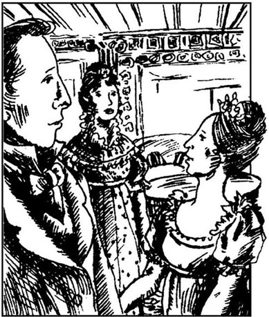
下一个星期一，班纳特太太的弟弟和弟媳照例到浪搏恩过圣诞节，她甚为欣喜。嘉丁纳先生通情达理，颇有绅士风度。尼日斐的小姐们可能会很难相信，做买卖出身的人竟会如此文雅而和善。嘉丁纳太太比班纳特太太和菲力普斯太太年轻几岁，和蔼聪慧，举止优雅，深得浪搏恩几个外甥女的喜爱，尤其是经常到伦敦和她待在一起的两位大些的外甥女。
嘉丁纳太太分发完带来的礼品，讲述完最新服装款式之后，便不得不听听班纳特太太的牢骚话了。
“弟妹，自从你上次来过以后，我可遭了大罪了！”班纳特太太嚷道，“你想想看！两个女儿马上就要嫁出去了，可是接下来却成了一场空！我不怪简，如果有可能，她会得到彬格莱先生的，可是丽萃！哎呀，弟妹，真是难以想象，她如果不是那么固执，现在可能已经成了柯林斯太太了！结果呢，倒成了卢卡斯太太比我先嫁出一个女儿。遇到这样不听话的女儿和这样自私的邻居，真使我感到难受。可是你来得正是时候，对我是莫大的安慰，我非常喜欢听你讲新潮时装，长袖子啦什么的。”
嘉丁纳太太的回答对大姑子表示出适当的同情，那天晚些时候，她找到一个机会与伊丽莎白单独详细地谈了这件事。
“我为简感到难过，”她温和地说，“可是，丽萃，这种事太常见了！像彬格莱那样的年轻人很容易爱上漂亮女孩，而一旦碰巧两人分开，他就很快把她忘了。”
“是的，舅妈，”伊丽莎白说，“可是这次不是碰巧分开的，都怨那年轻人爱管闲事的朋友，是他们把简和彬格莱先生拆开的。我相信，彬格莱先生狂热地爱着她。”
“可怜的简！她太敏感了。我恐怕她一下子难以从中恢复过来。丽萃，这件事如果发生在你身上，你会很快把它淡忘的，因为你会苦中找乐。可是你觉得我会说服简跟我们一块回伦敦吗？也许到那里换换空气会使她好受些。”
伊丽莎白对舅妈的这种建议极为感激，她觉得简肯定会乐意去的。
“我希望，”嘉丁纳太太补充说，“她不会受到希望见到那个年轻人的影响。我们在城里住得那么远，碰上是不大可能的，除非他专程来看她。”
“这不太有可能，因为他的朋友达西先生不会允许他拜访这样一个不入流的地方！”可是，尽管伊丽莎白嘴上说得那么肯定，她心里还是暗自认为简在伦敦可能见到彬格莱，这样的会面还可能重新唤起他对她的感情。
嘉丁纳夫妇在浪搏恩待了一个星期，班纳特太太作了各种安排，确保弟弟和弟媳总有得玩。一旦浪搏恩府上举办晚宴，总要请一些军官来。嘉丁纳太太注意到韦翰先生是位常客，伊丽莎白说起他又带着爱慕之情，于是就开始留心观察他们俩。她所看到的足以引起她的焦虑，她决定单独跟伊丽莎白谈谈。
“丽萃，”她开口道，“我看得出你喜欢韦翰先生，他也喜欢你。不过，我必须警告你不要跟他太认真。我承认他这个人很有意思，可是不幸的是他没有财产。你是有脑筋的，必须认识到嫁给一个身无分文的人会使你爸爸失望的。”
“亲爱的舅妈，别担心。我会把握好自己的，韦翰先生也一样。他不会爱上我的，如果我能预防的话。”
“伊丽莎白，严肃点儿。”
“对不起，舅妈，我再努把力。现在我当然还没有爱上他。可是他是我迄今为止见到的最随和的人，如果他真的爱上了我……可是我不愿意辜负父亲的期望或让你们哪个人不高兴。我不能保证我会怎么样，不过，我真地会按我认为最明智的方法去做。我希望我的想法你会满意。”
她舅妈说她感到满意，接受了伊丽莎白对她的建议表示的谢意。几天之后，嘉丁纳夫妇回到伦敦，把简也带了过去。
柯林斯先生的大喜日子很快来临，班纳特太太不得不眼睁睁地看着夏洛特·卢卡斯成为柯林斯太太。不过，新娘在离开浪搏恩前往汉斯福之前，请伊丽莎白尽快来参观她的新家。虽然伊丽莎白想象得出这次拜访不会有多大乐趣，但她无法拒绝。按照安排，伊丽莎白将于三月份在威廉·卢卡斯爵士和他的另一个女儿玛利亚按计划去汉斯福进行拜访时陪他们一块去。
简离开后一个星期，伊丽莎白收到了她的来信，上面说她见到了彬格莱小姐，并且希望将友谊保持下去。伊丽莎白对此摇了摇头。几周后，她收到了简的来信，说卡罗琳·彬格莱没有进一步努力与先前的好友保持联系，对此，伊丽莎白一点都不感到奇怪。读到简的失望的信，伊丽莎白感到悲伤，但一想到至少简现在已不再受到他妹妹的蒙蔽，她便高兴许多。对她哥哥的一切期望现在都化为泡影了。作为对他的惩罚，伊丽莎白真心希望他不久就跟达西先生的妹妹结婚，因为据韦翰先生讲，这个女人会使他很快后悔自己一脚踢开了简。
大约在同时，伊丽莎白还收到了嘉丁纳太太寄来的信，问韦翰的情况。她老老实实地回答说，她还没有嫁给他的危险。他已把感情转移到了金小姐身上。金小姐最近刚继承了一万英镑。所发生的一切伊丽莎白都看得清清楚楚，但她的心只是稍微受到些震动，而且她能自圆其说地认为像这样随和的年轻人希望获得财产和独立是很自然的事情。
1月和2月过去了，伊丽莎白拜访柯林斯夫妇的日子越来越近。她把计划作了更好的改动，安排在伦敦舅舅家停留一夜，然后继续往肯特郡去。她急切地盼望着见到简，她现在还待在嘉丁纳家里。
伊丽莎白感到旅途漫漫，因为威廉爵士和玛利亚说的话没什么值得听的。但是，午饭时分马车到达嘉丁纳家以后，伊丽莎白看到姐姐和以前一样健康可爱，心里很高兴。不过，在与舅妈的一次私下谈话中，伊丽莎白得知简时不时地会出现精神沮丧，虽然她总是勇敢地装出高兴的样子。
下午和晚上过得太快了，第二天，伊丽莎白和另外两位旅行者又上路了。马车到达汉斯福以后，他们在路的一边看到了久闻大名的凯瑟琳夫人的大庄园，感到无比激动。最后，他们来到了位于另一边的教区长住宅，在那里受到了柯林斯先生和夏洛特的热情欢迎。
伊丽莎白看到自己受到如此真挚的接待，对自己的到来也感到越来越高兴。她马上看到，婚姻并没能改变她表兄的习惯。他坚持非常死板客套地接待他们，讲起话来长篇大论，又领着他们参观房子，极为细致地介绍它的很多优点。伊丽莎白禁不住想，也许他是专门冲她讲的，好像希望让她感到拒绝他给她带来了多大损失。但是，虽然一切看起来都井井有条，舒舒服服，她还是不能以表示后悔的一声叹息让他得意。实际上，她不明白夏洛特跟这样的人相处，为什么显得那样兴高采烈。不过，只要柯林斯先生说的哪句话使他妻子感到丟脸（这也是常事），夏洛特就很聪明地装作自己没在听。柯林斯先生自豪地带着他们在花园里观看时（他喜欢在那儿劳动），夏洛特一本正经地称赞搞园艺是很有益于健康的锻炼，并且承认自己鼓励丈夫尽可能多地在室外劳动，伊丽莎白听了心里直乐。
伊丽莎白心里必须承认，虽然有点奇怪，但夏洛特确实显得很幸福。只要不想起柯林斯先生，整个房子似乎非常舒适宜人；根据夏洛特对家园明显的得意之情，伊丽莎白设想，夏洛特一定不常想起他。
客人在那里才待了一天，就接到凯瑟琳夫人的口信，邀请他们所有的人第二天全部到罗新斯庄园聚餐。柯林斯先生很得意，祝贺客人们交上了好运。“我得承认，我本来期望尊敬的夫人会邀请我们大家星期天到罗新斯喝茶，”他说，“但没想到会邀请所有的人赴宴！而且你们才刚来！夫人多么慷慨大方，多么关怀备至啊！”
那天剩下的全部时间和第二天上午都被用来讨论对罗新斯的拜访。当穿越庄园、进入夫人宅第的那一刻来临时，威廉爵士和玛利亚还真为此感到紧张。但是，伊丽莎白对于有关凯瑟琳夫人的传闻并不感到有很深的印象，所以还保持平静。
她看到凯瑟琳夫人觉得很有趣。她长得又高又大，举止傲慢，盛气凌人，接待客人时带着几分鄙夷。她嗓门很高，说一不二，显然自以为高人一等。她的女儿安与她截然不同——身材瘦小，愁容满面，很少开口，说起话来也低声细语。
晚饭很丰盛，柯林斯先生大加赞扬。他接连不断的赞美使伊丽莎白都觉得难为情，但凯瑟琳夫人似乎很高兴。晚饭后，夫人开始滔滔不绝地高谈阔论，也不怕自相矛盾甚至让别人说三道四。然后她就问了伊丽莎白很多具体的问题：受过什么教育，姐妹怎样，父亲收入多少。虽然伊丽莎白认为这些问题都是属于自家的事儿，别人无权过问，而且问题问得可以说很唐突，但她还是一一有礼貌地、心平气和地作了回答。漫长的晚会结束后，客人们都坐着凯瑟琳夫人的马车回家了，而柯林斯先生又称赞了夫人的优雅、英明和好客。
这种拜访一周重复两次，但是在汉斯福几乎没有别的娱乐活动。伊丽莎白或者和夏洛特进行愉快的交谈，或者读书，或者沿着凯瑟琳夫人庄园旁一条小径散步，这条小径似乎没人走过。生活很平静，可她感到很满意。
但是，她到汉斯福两周后，听说有些客人要进住罗新斯。凯瑟琳夫人的外甥达西先生不久就要过来，陪他来的是表兄费茨威廉上校。第二天，两位先生到了，几乎马上就去了教区长住宅。费茨威廉上校三十来岁，相貌平平，但很有绅士风度，和小姐们谈笑风生。而达西先生还像先前那样冷漠傲慢，同柯林斯太太打过招呼以后，只与伊丽莎白呆板地客套了几句。伊丽莎白借此机会问他最近在伦敦是否碰到了简，他回答说无此殊荣，这时她觉得他有点糊涂。又过了一会儿，两位先生便返回罗新斯了。
费茨威廉上校的言谈举止十分受女士们爱戴，她们感到，他会大大增添她们在罗新斯晚会上的乐趣。但直到复活节他们才收到凯瑟琳夫人的邀请，他们来到她的起居室后，发现夫人显然对自己的外甥们更感兴趣，而不管其他客人。但是，费茨威廉上校似乎真地很高兴见到她们，他马上过来坐到了伊丽莎白身边。他们谈得十分融洽，妙趣横生，惹得达西先生好几次转过头来好奇地打量他们。夫人也注意到了，便从屋子另一头大声喊道：“费茨威廉，你和班纳特小姐在谈什么？让我也听听。”
“夫人，我们在谈音乐。”看到不回答不行了，他才说。
“谈音乐！那就跟我们大家讲讲。如果你们在谈音乐，我必须和你们一块谈。我想，在英格兰没有多少人能像我这样欣赏音乐，或者说有我这样的天赋。如果我学过演奏，我一定是个伟大的音乐家。但是，我经常告诉年轻的小姐，练习很重要。我和班纳特小姐说过几次，她要想真正地弹好，非多练不可。欢迎她到罗新斯来，在仆人的大厅里练习钢琴。我可以向她保证，在那儿她不会妨碍任何人的。”
达西先生对姨妈这种无礼的话感到有点儿脸上挂不住。同时，费茨威廉说服了伊丽莎白弹几首乐曲，她在钢琴旁坐下。可是，她开始弹奏时，达西先生起身站到了钢琴前，在那儿，他可以看清她的脸庞。第一首曲子结束后，伊丽莎白笑着说：“达西先生，你来听我弹琴，是想吓唬我吗？但是，我很犟，不害怕。”
“我想，你不会真地认为我想吓唬你，而且我有幸认识你已经够久了，知道你偶尔喜欢说些言不由衷的话。”
伊丽莎白对这种场面不由得笑了起来，对费茨威廉上校说：“你表弟在教导你不要相信我说的一切。说实在的，达西先生，你揭我的短处很不够有气量，也许还有点愚蠢，因为我可能报复，讲一讲你的事情，你的亲戚们听到会大吃一惊的。”
“我不怕你。”达西笑着说。
“可是，让我听听你的指责，”费茨威廉上校喊道，“我倒想听一听他在陌生人中表现如何。”
“那好吧，准备好听一听那可怕的事吧。我第一次见到他是在哈福德郡的舞会上，在这次舞会上，你想他都干了什么？他只跳了四次舞！我很抱歉使你难受，但这是事实。虽然先生们很少，而且据我所知，坐着等舞伴的小姐不止一个，他却只跳了四支曲子。达西先生，你得承认。”
“当时在舞会上除了自己的一圈朋友外，我还不认识任何人。我也许应当让人介绍一下，可是我不喜欢向陌生人毛遂自荐。和不认识的人谈话令我觉得不安。”
“达西，不过是你不想去找麻烦罢了，这才是原因！”费茨威廉上校说。
“这架钢琴我不像其他女人弹得那样好，”伊丽莎白说，“但是我总设想那是我自己的过错——因为我没有自找麻烦去练习。我知道我是有能力弹得像别人那样好的。”
达西笑了笑说：“你完全正确。你利用时间的方式要好得多。听到你弹奏的人想象不出该作如何改进。我们两人都不喜欢在生人面前现眼。”
正在这时，凯瑟琳夫人插了进来，评论伊丽莎白的琴艺。“班纳特小姐如果有位伦敦老师的话，一定会弹得很好。当然，安的身体如果允许她学习的话，也会成为令人愉快的演奏家。”
伊丽莎白注意看达西对安·德·包尔这个名字的反应，但此时此刻或其他任何时刻，她都观察不到他对表妹有丝毫的爱慕甚至兴趣。凯瑟琳夫人继续给班纳特小姐的弹奏提出意见，但在先生们的请求下，伊丽莎白在晚上剩下的时间里一直在弹琴。
7 Darcy proposes marriage
7
Darcy proposes marriage
Elizabeth was sitting by herself the next morning, writing to Jane, while Mrs Collins and Maria were shopping in the village. She heard the doorbell ring, and knew that meant a visitor had arrived, but she was greatly surprised when Mr Darcy, and Mr Darcy only, was shown into the room.
He seemed astonished too, on finding her alone. 'I apologize for disturbing you, Miss Bennet. I understood that all the ladies were at home.'
'Please don't apologize, Mr Darcy. I hope Lady Catherine and her daughter are well?'
'Very well, thank you.' He said no more.
As he seemed in danger of sinking into total silence, Elizabeth had to think of something to say. She remarked, 'How very suddenly you all left Netherfield last November, Mr Darcy! I hope Mr Bingley and his sisters were well, when you left London?'
'Perfectly, thank you.' That was all the answer he gave.
'I think I have heard that Mr Bingley has not much idea of ever returning to Netherfield again?'
'It is probable that he will spend very little of his time there in future. He has many friends elsewhere.'
Elizabeth did not want to talk any longer about Mr Bingley, and, determined to leave the conversation to Mr Darcy, she remained silent. He understood, and soon began to speak again.
'Mr Collins appears very fortunate in his choice of a wife.'
'Yes, indeed. She is one of the few sensible women who would have accepted him, although I'm not sure I consider her marrying Mr Collins as the wisest thing she ever did. She seems perfectly happy, however, and financially speaking, it's a good marriage.'
'It must be very agreeable to her to be such a short distance from her own family and friends.'
'A short distance, you say? It is nearly eighty kilometres!'
'And what is that? Little more than half a day's journey, on a good road. Yes, I call it a very short distance.'
'I would never have said Mrs Collins lived near her family,' cried Elizabeth.
'That shows how much you are attached to Hertfordshire. Anywhere outside the Longbourn area would, I suppose, seem far away to you.' As he spoke, he smiled a little.
Perhaps he supposed she was thinking of Jane and Netherfield, thought Elizabeth, and she blushed. 'Whether the distance seems long or short depends on many circumstances. If the family's income is large enough to pay for frequent journeys, then distance is not a problem. But Mr and Mrs Collins will not be able to afford to travel very often, despite their comfortable income. I'm certain my friend does not consider Hunsford near her family.'
Mr Darcy moved his chair a little towards her, and said, 'You cannot have a right to such a very strong local attachment. You haven't spent your whole life at Longbourn, I am sure.'
Elizabeth looked surprised. Experiencing a change of feeling, the gentleman moved his chair away again, took a newspaper from the table, and, glancing at it, said in a colder voice, 'Are you pleased with Kent?' They discussed Kent calmly and politely for a few minutes, and were then interrupted by Charlotte and Maria, who had returned from the village. Mr Darcy sat a little while longer, without saying much to anybody, and then went away.
'What can be the meaning of this!' said Charlotte, as soon as he had gone. 'My dear Lizzy, he must be in love with you, or he would never have visited us in this familiar way.'
But when Elizabeth described his silence, that did not seem likely, even to hopeful Charlotte, and they could only suppose that he had nothing better to do. In fact, from now on, both Mr Darcy and Colonel Fitzwilliam called regularly at the Rectory. It was obvious that Colonel Fitzwilliam came because he enjoyed talking to the ladies, and Elizabeth was reminded by her own satisfaction in being with him, as well as by his evident admiration of her, of her former favourite, Wickham. But it was more difficult to understand why Mr Darcy came. He did not often speak, and seldom appeared interested in the conversation. Even Charlotte, who observed Mr Darcy closely, was not sure whether he admired Elizabeth or not, and began to hope that perhaps her friend might marry Colonel Fitzwilliam in stead.
When she took her daily walk along the path bordering the park, Elizabeth met Mr Darcy unexpectedly more than once. This was the more surprising, because she was careful to inform him that it was her favourite walk, so that he could avoid meeting her. It was also strange that, although he could just have greeted her and walked on, he always thought it necessary to turn back and walk with her. She could not quite understand him.
But one day, as she was walking, she met Colonel Fitzwilliam, not Mr Darcy, and greeted him with a smile. They walked back to the Rectory together.
'Are you leaving Kent this Sunday?' she asked.
'Yes, if Darcy doesn't put it off again.'
'He is fortunate to be able to arrange things as he likes.'
'Well, we all want to do that,' replied Colonel Fitzwilliam. 'But he is used to doing what he likes, because he is rich, and many others are poor. I, for example—I'm a younger son, you know, and won't inherit my father's fortune, so I shall never be rich or independent, like Darcy.'
'Now seriously, you cannot call yourself poor. When have you ever suffered because of lack of money?'
'Well, perhaps I haven't really suffered much yet. But there are difficulties. A younger son doesn't have a free choice when marrying. He cannot afford to marry a girl with no fortune.'
Elizabeth blushed, thinking that he might mean her, and began to talk of something else. She asked him about Darcy's sister, and mentioned that the Bingley sisters liked her very much.
'Bingley—yes, I know them. Their brother is very pleasant—a great friend of Darcy's,' answered Colonel Fitzwilliam.
'Oh, yes, Mr Darcy is extremely kind to Mr Bingley, and takes very good care of him,' said Elizabeth drily.
'Yes, I believe Darcy does take care of Bingley. I'm thinking of a recent situation, which Darcy was telling me about on the journey here. He was congratulating himself on having saved a friend from a most foolish marriage. Of course, I'm not sure the friend was Bingley, as Darcy didn't mention the name.'
'Did Mr Darcy give you his reasons for interfering?'
'I understood that there were some very strong objections to the lady.'
Elizabeth could not speak for a moment. When she was able to control her anger, she changed the conversation. As soon as they reached the Rectory, she said goodbye to Colonel Fitzwilliam, and went straight upstairs to her room. At last she could think without interruption about what he had told her. Bingley must have been the friend to whom Darcy was referring. She had always assumed that Darcy was involved in the plan to separate Jane and Bingley, but now it appeared that he, not Miss Bingley, was the main cause of all that Jane had suffered, and still continued to suffer. The 'very strong objections to the lady' probably consisted of having one uncle who was a country lawyer, and another who was in business in London. There could be no possible objections to Jane herself, as she was intelligent, beautiful and charming. Nor could anyone object to Mr Bennet as a father-in-law. When Elizabeth thought of her mother, she felt a little less confident. She was still convinced, however, that Mr Darcy was interested in highborn connections rather than character or common sense. It was this, the worst kind of pride, which had destroyed for a while every hope of happiness for the most affectionate, generous heart in the world.
Thinking about all this made Elizabeth so upset and unhappy that she soon had a headache. It grew so much worse in the evening, and she was so unwilling to see Mr Darcy, that she decided not to go to Rosings that evening with Mr and Mrs Collins. Instead, she stayed in the Rectory sitting-room, reread ing Jane's recent letters from London. She was saddened to discover that, although Jane never complained, or referred to the past, in almost every line there was a lack of cheerfulness, which Elizabeth had not noticed the first time, and which now made her rather anxious. She was relieved to think that Darcy would be leaving Rosings in two days' time, and she herself would be with Jane in less than two weeks. Colonel Fitzwilliam would also be leaving with Darcy, but he had made it clear that he had no intention of proposing to her, so she did not intend to be unhappy about him.
Just then, she heard the doorbell, and wondered if it might be Colonel Fitzwilliam, come to enquire about her health. But to her astonishment she saw Mr Darcy walk into the room. In a hurried manner he began to ask how she was feeling. She answered him with cold politeness. He sat down for a few moments, and then, getting up, walked about the room. Elizabeth was surprised, but said nothing. After a silence of several minutes, he came towards her, with none of his usual calmness, and said, 'In vain have I struggled. It is no good. I cannot conquer my feelings. You must allow me to tell you how warmly I admire and love you.'
Elizabeth stared, blushed, doubted, and was silent. He considered this sufficient encouragement, and confessed all that he felt, and had felt for a long time, for her. He expressed himself well, but it was not only of love that he spoke. He also talked of his pride, and his sense of her social inferiority, which had made him struggle against his feelings for so long.
In spite of her dislike for him, Elizabeth appreciated what a compliment such a man's affection was, and was at first sorry for the pain he was about to receive. But soon, as she heard his references to her inferior position, she lost all pity, and became very angry. She waited patiently, however, until he had finished. He ended by describing the strength of his love for her, which, in spite of all his attempts, he had been unable to conquer with arguments of reason and common sense, and finally he asked for her hand in marriage. She could see that he had no doubt of a favourable answer, which only made her angrier.
'I believe society considers it correct, in cases like this, 'she replied, 'to express grateful thanks. So if I could feel grateful, I would now thank you. But I cannot—I have never wanted your good opinion of me, and I cannot accept it. I'm sorry to hurt anyone, but it has not been done deliberately, and I hope the pain will not last long. The pride which, you tell me, has long prevented the expression of your affection, can have little difficulty in conquering your feelings after this explanation.'
Mr Darcy, whose eyes were fixed on her face, was both angry and surprised by her words. His face went pale, and he was clearly struggling to control himself. There was a dreadful pause, and then he spoke in a voice of forced calmness.
'And this is all the reply I am to have the honour of expecting! I might, perhaps, wish to be informed why, with so little attempt at politeness, I am rejected.'
'I might as well ask why, with so evident a wish to offend and insult me, you chose to tell me that you loved me against your reason and even against your character. But even if my own feelings towards you had been favourable, do you think anything could tempt me to accept the man who has destroyed, perhaps for ever, the happiness of a most dear sister?'
As she said this, Mr Darcy changed colour, but he listened without trying to interrupt her as she continued.
'I have every reason in the world to think badly of you. Can you deny that you were the cause of Jane's separation from Mr Bingley, and of her unhappiness? Can you deny it?'
'I have no wish to deny that I did everything I could to separate them, and that I am delighted with my success. Towards my friend I have been kinder than to myself.'
Elizabeth treated this last remark with disdain, but its meaning did not escape her. 'But it is not only because of Jane that I dislike you. My opinion of you was decided long ago. I heard all about your character from Mr Wickham. Now, what can you have to say on this matter? How can you defend yourself?'
'You take an eager interest in that gentleman,' said Darcy, less calmly than before. The colour was rising in his face.
'Who can help feeling an interest in him, when we hear of the unfortunate life he has had!'
'Unfortunate!' repeated Darcy contemptuously. 'Yes, unfortunate indeed.'
'And it was your fault,' cried Elizabeth with energy. 'You took away his chance of a comfortable income and a good position, which you knew had been intended for him. You have left him poor, and dependent, and disappointed. You have done all this! And you can still treat the mention of his name with contempt.'
'And this,' cried Darcy, as he walked with quick steps across the room, 'is your opinion of me! Thank you for explaining it so fully. But perhaps you might not have considered these offences of mine, if your pride had not been hurt by my honest confession of my reasons for not proposing to you earlier. Perhaps I should have hidden my struggles, and flattered you by pretending I had every reason to love you. But I hate disguise of any sort. Nor am I ashamed of my feelings of pride, which are very natural. Could you expect me to delight in the inferiority of your family compared to mine?'
Elizabeth felt herself growing more angry every moment. 'Mr Darcy, you could not have made me the offer of your hand in any possible way that would have tempted me to accept it. The moment I first met you, I noticed your pride, your sense of superiority, and your selfish disdain for the feelings of others. Later events strengthened my dislike for you. You are the last man in the world whom I could ever be persuaded to marry.'
'You have said quite enough, madam. I perfectly understand your feelings. Forgive me for having taken up so much of your time, and accept my best wishes for your health and happiness.'
With these words he hurried out of the room, and the house. Elizabeth felt so weak that she sat down and cried for half an hour. She was so astonished to have received a proposal from Mr Darcy! His affection for her must indeed have been strong, to conquer all the objections he had to her family and position, objections which had made him prevent his friend marrying her sister. But his terrible pride, his shameless confession of what he had done to separate Jane and Bingley, and his cruelty towards Wickham soon removed any pity she might have felt for him.
disturb v. break the quiet. 打扰；搅乱。
sink v. come to a lower level. 陷入。
future n. coming after the present. 将来。
financially adv. of finance. 财政地。
distance n. measure of space between two places. 距离。
attached adj. to be fond of. 依恋的。
glance v. quick look. 匆匆一看。
remind v. cause somebody to. 提醒。
evident adj. plain and clear. 明显的。
border v. be next to. 毗连。
lack n. want, need, shortage. 缺乏。
afford v. to be able to do, spend, bear, buy, etc. 花费得起；能力足以。
recent adj. not long before. 最近的。
save v. make or keep safe. 挽救。
control v. have control of. 控制。
consist v. be made up of. 由……组成。
sadden v. make or become sad. （使）忧愁。
refer v. speak of, allude to. 谈及。
enquire v. ask. 询问。
conquer v. overcome. 征服；抑制。
sufficient adj. enough. 足够的。
society n. certain grouping of humanity. 社会。
deliberately adv. done on purpose. 故意地。
destroy v. put an end to. 摧毁。
treat v. act or behave towards. 对待。
contemptuously adv. feeling or expressing contempt. 轻蔑地。
dependent adj. depending. 依赖的。
disguise n. the state of being disguised. 假装，伪装。
natural adj. normal. 正常的。
inferiority n. state of being inferior. 下等。
达西求婚
7 达西求婚
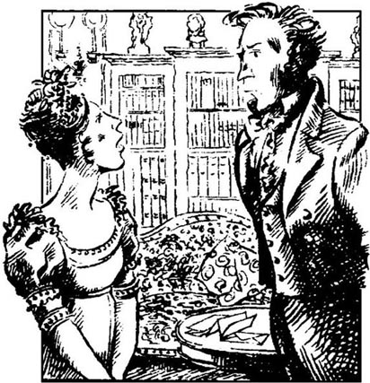
第二天早上，伊丽莎白独自坐着，给简写信。柯林斯太太和玛利亚在村里买东西。她听到门铃响，知道有客人来了，但她见到达西先生，并且只有达西先生一个人被领进屋时，感到奇怪极了。
他发现她独自一人，也似乎很惊讶。“班纳特小姐，对不起，打扰你了。我还以为所有的女士都在家。”
“达西先生，请不要客气。我想凯瑟琳夫人和小姐都还好吧？”
“很好，谢谢。”他又不说话了。
看样子他有危险陷入完全的沉默。伊丽莎白必须找话说了。她说：“达西先生，去年11月，你们离开尼日斐太突然了，我想彬格莱先生和他的妹妹在你离开伦敦时还好吧？”
“很好，谢谢。”这就是全部回答。
“我想我听说过，彬格莱先生不怎么打算再回尼日斐了？”
“将来他可能不会在那个地方待多长时间。他别处有很多朋友。”
伊丽莎白不想再往下谈彬格莱先生了，下决心把话题留给达西先生，于是她保持沉默。他明白了，不一会儿，就又开口说话了。
“柯林斯先生选了这样一位妻子似乎很幸运。”
“是的，一点不错。有思想的妇女能接受他的不多，她便是其中的一个。不过，我不敢肯定地认为她嫁给柯林斯先生是最明智的做法。可是，她似乎十分幸福，况且从经济上讲，这个婚姻也不错。”
“离娘家和朋友这么近，她一定觉得很满意。”
“你说离得那么近？差不多八十公里呢！”
“那算得了什么，半天多一点就到了，若是路好的话。是的，我认为是很近。”
“我永远不会认为柯林斯太太住得离娘家近。”伊丽莎白大声说。
“这说明你对哈福德郡的感情太深了。我想，浪搏恩以外的任何地方对你来说都是很远的。”他说话时，露出了一丝微笑。
伊丽莎白想，也许他认为自己在想简和尼日斐，于是脸就红了。“距离的远近取决于很多因素。如果家庭收入足以支付频繁的往来，那么距离就不成问题。但是，虽然他们有舒适的收入，柯林斯夫妇是承受不起经常的旅行的。我相信，我的朋友不会认为汉斯福离她家很近。”
达西先生把椅子朝她挪了挪，说：“你不该有这样强的乡土观念。可以肯定地说，你不会一辈子都在浪搏恩度过的。”
伊丽莎白看起来有点惊奇。那位先生感受到了感情的变化，便又把椅子挪开，从桌上拿了一张报纸，瞟了瞟，用冷淡些的语气说：“你对肯特郡感到满意吗？”他们又平静客气地讨论了一会儿肯特郡，然后夏洛特和玛利亚打断了他们，这两个人已从村里回来了。达西先生又坐了一会儿，也没跟谁说多少话，便离开了。
“这是什么意思！”他刚走，夏洛特就说，“亲爱的丽萃，他一定是爱上了你，否则，他绝不会以这种亲切的方式拜访我们。”
可是，当伊丽莎白描述了他沉默的样子之后，甚至是满怀希望的夏洛特也觉得那不大可能。这样，她们只能猜测他是没事可做才来的。实际上，就从这时起，达西先生和费茨威廉上校开始定期造访教区长住宅。显然，费茨威廉上校来此是因为他喜欢与女士们交谈，伊丽莎白和他在一起感到很满意，而他又显然爱慕她，这两者都使她想起以前的宠儿韦翰先生。可是，要弄明白达西先生为什么来就更困难些。他不常讲话，也很少对谈话表现出兴趣。即使是密切注视达西先生的夏洛特，也不敢肯定他是否爱慕伊丽莎白，于是，她开始希望，也许伊丽莎白可以转而嫁给费茨威廉上校。
伊丽莎白每天沿公园旁的小径散步时，不止一次地意外碰到达西先生。这就更奇怪了，因为她曾小心地告诉他这是她最喜欢的散步方式，以便让他避免碰见她。还有令人奇怪的是，他完全可以只和她打个招呼便继续往前走，可他总是觉得有必要掉转头和她一起走。她搞不大明白。
可是有一天，她在散步时碰到了费茨威廉上校，而不是达西先生，便微笑着和他打了招呼。他们一块走回到教区长住宅。
“你们这个星期日离开肯特郡吗？”她问道。
“是的，如果达西不再往后推的话。”
“他很幸运，安排事情有自主权。”
“哎，我们都想有自主权，”费茨威廉上校回答说，“但是他习惯于我行我素，因为他很富有，而其他很多人都很穷。比方说我——我不是长子，你也知道，继承不了父亲的家产，因此，我永远不会像达西那样富有或独立自主。”
“认真点儿讲，你不能说自己穷。你什么时候因缺钱受过罪？”
“也许我还没有真正受过罪。但确实有困难。小儿子结婚时没有自由选择的余地。他没有经济能力同没有财产的女人结婚。”
伊丽莎白脸一红，觉得他可能指自己，于是赶紧岔开了话题。她问他达西的妹妹的情况，并提及彬格莱姐妹很喜欢她。
“彬格莱——是的，我认识她们。她们的哥哥很招人喜欢——是达西的好朋友之一。”费茨威廉上校回答说。
“哦，是的，达西先生对彬格莱先生极好，对他十分关照。”伊丽莎白冷冰冰地说。
“是的，我觉得达西确实关照彬格莱。我想起了最近的一件事，是达西在到这里来的路上告诉我的。他庆幸自己阻止了一位朋友卷入一桩最愚蠢的婚姻。当然，我不敢肯定这位朋友就是彬格莱，因为达西没有提他的名字。”
“达西先生是否摆出了干涉的理由？”
“我的理解是有些人强烈反对这位小姐。”
伊丽莎白一时说不出话来。她压住心头的怒火，改变了话题。他们一到教区长住宅，她便向费茨威廉上校道了别，径直到了楼上自己的房间。现在终于可以不受干扰，独自思考一下他告诉她的这件事了。达西所指的那位朋友一定是彬格莱。她一直都在猜测达西参与了拆散简和彬格莱的计划，但现在似乎清楚了，是他，而不是彬格莱小姐，做了简已经遭受和继续遭受的痛苦的罪魁祸首。“强烈反对这位小姐”的原因可能包括她有一个姨父做乡村律师，还有个舅舅在伦敦做买卖。对简本人不大可能有什么反对意见，因为她聪颖、漂亮、迷人。也不会有人反对认班纳特先生做老岳父的。伊丽莎白想到母亲时，感到有点缺乏自信。但是，她仍然坚信，达西先生只喜欢攀出身高贵的人，不喜欢平民百姓。正是这种最恶毒的傲慢，暂时毁掉了世界上最挚诚、最宽厚的一颗心所抱的每一线获得幸福的希望。
想到所有这些，伊丽莎白感到万分不安和难过，一会儿就犯了头痛病。到了晚上，头痛愈加剧烈，加上她不愿见到达西先生，于是她决定晚上不陪柯林斯夫妇去罗新斯了。相反，她待在教区长家的起居室里，重读简最近从伦敦的来信。她难过地发现，虽然简从来没有抱怨过或提起过过去，但信中几乎每一行都流露出闷闷不乐的情绪。伊丽莎白读第一遍时没注意到，现在这使她有点焦急。一想到达西再过两天就要离开罗新斯，她本人也将在两周后见到简，心里便放松了一点。费茨威廉上校也将同达西一块走，但他已经挑明他无意向她求婚，所以，她不打算为他表示悲伤。
正在这时，她听到了门铃声，心中纳闷会不会是费茨威廉上校来探问她的身体状况。但是，令她大吃一惊的是，她看到达西先生走进了屋子。他匆匆地开始询问她感觉如何。她冷冰冰地客气地回答了他。他坐下，待了一会儿，然后又站起来，在房间里踱来踱去。伊丽莎白感到奇怪，但什么也没说。几分钟沉默过后，他朝她走过来，一扫平时的冷静，说道：“我徒劳地进行思想斗争，但毫无用处。我再也无法控制自己的感情了。请允许我告诉你我多么敬慕你，多么爱你。”
伊丽莎白瞪大了眼睛，涨红了脸，满腹狐疑，一句话也说不出来。他一看这情景，认为是在怂恿自己说下去，立即向她倾吐了所有的感情，既有现在的，也有长期以来就感受到的。他表达得很充分，不但谈了他的爱，还谈到了他的傲慢，谈到他觉得她出身卑微，正是这一点使他与感情进行了长期的思想斗争。
虽然伊丽莎白讨厌他，但她认识到能得到这样的男人的爱是多大的恭维呀，所以开始时还对他即将接受的痛苦感到遗憾。但不久，她听到他说自己出身卑微，所有的怜悯之情便为愤怒所取代。但是，她耐心地等到他讲完。他最后形容了他对她的爱的力量，虽然他几经努力，但这种爱情的力量是无法用理性和经验战胜的，最后，他请求她接受他的求婚。她看得出，他自信能得到肯定的回答，这使得她更加恼怒。
她回答道：“我想，在这种情况下，社会上会认为应当表达一下感激之情。因此，如果我真觉得感激，我现在会谢你的。可惜我现在没有这种感觉——我从来不稀罕你的抬举，我也不接受你的抬举。我不愿伤害任何人，但我并不是故意的，我希望这痛苦不会持续太久。你说过，高傲使得你长期以来无法表达爱慕之情，但在你听了我的解释之后，高傲会毫不费力地战胜你的感情。”
达西先生一双眼睛紧紧盯着她的脸，听了这话，既气愤，又惊奇。他的脸色煞白，很显然在努力控制自己。可怕的停顿过后，他竭力装出一副镇定的样子说：
“我很荣幸，竟能得到这样一个回答。也许我可以请教一下，为什么我竟会遭到如此无礼的拒绝？”
“我也要请教你一下，你明明存心要冒犯我、侮辱我，却为什么要违背理性甚至自己的品格，说你爱我。但是，即便我对你的感情是肯定的，那么，也请你想一想，还有什么能打动我的心，让我去爱一个毁了我最亲爱的姐姐的幸福、甚至永远毁了她幸福的人？”
达西听了她的话，脸色大变。但他听着她继续往下说，一时不想插嘴。
“我有千万条理由把你往坏里想。你能否认你是拆散简和彬格莱先生、毁掉她幸福的罪魁祸首吗？你能否认吗？”
“我不想否认我竭尽全力把他们拆散，而且我还为我的成功感到喜悦。我对朋友比对自己体贴。”
伊丽莎白对他最后一句话十分鄙视，但他的用意她当然清楚。“但是，并不仅仅是因为简我才讨厌你。我对你早有成见，韦翰先生把你的品格全告诉我了。现在，对这个你还有什么话可说？你怎么为自己辩护？”
“你对那位先生倒挺关心的。”达西说道，语气已没有先前镇定。他的脸也更红了。
“凡是听过他不幸遭遇的人，谁能不关心他！”
“不幸遭遇！”达西轻蔑地重复道，“是的，真够不幸的。”
“这都是你一手造成的，”伊丽莎白使劲高声说，“是你剥夺了他享受舒适的收入和良好地位的机会，你清楚，这些本来都是属于他的。是你造成了他的贫困，让他无法独立，满心失望。这一切都是你干的！可是现在，你提起他的名字却还带着鄙夷。”
“这就是你对我的看法！”达西一边大声叫嚷，一边快速往屋子那头走，“谢谢你解释得这样周全。不过要不是我把以前迟疑不决的原因如实说出来，伤害了你的自尊心，也许你不会计较我得罪你的这些地方。也许我应当把我的思想矛盾隐瞒起来，假装我有一切爱你的理由，来奉承你。但是，我不喜欢任何形式的伪装。我也不为自己的高傲感到羞耻，因为那是很自然的。难道你指望我为你那些同我的亲戚无法相提并论的微贱的亲戚欢欣鼓舞吗？”
伊丽莎白感到越来越气恼。“达西先生，你用任何方式向我求婚，也不能打动我，让我接受。从认识你的那一刹那起，我就注意到了你的狂妄自大、你高人一等的感觉以及对别人感情的自私蔑视。以后发生的事加深了我对你的反感。哪怕天下男人都死光了，我也不愿嫁给你。”
“你说够了，小姐，我完全理解你的感情。占用了你这么多时间，请原谅。我衷心地祝愿你健康、幸福。”
说完这些话，他匆匆走出房间，走出宅院。伊丽莎白感到虚弱无比，坐下来哭了半个小时。达西先生向他求婚，简直太令人惊讶了！他对她的爱一定的确十分强烈，它克服了家庭、地位的障碍，克服了自己用以阻挠朋友同她姐姐结婚的障碍。但他那可怕的高傲自大，他那对拆散简和彬格莱的姻缘的恬不知耻的坦白，以及他对韦翰的残酷无情，不久便把她可能产生的怜悯之情冲刷得荡然无存。
8 Elizabeth learns more about Darcy and Wickham
8
Elizabeth learns more about Darcy and Wickham
The next morning Elizabeth had still not recovered from the surprise of Darcy's proposal to her. Feeling in need of exercise and fresh air, she decided to have a walk. In order to avoid meeting Mr Darcy, she kept away from her favourite path, but could not resist walking a little way into Lady Catherine's park. There she was astonished to see Darcy himself approaching her and calling her name.
'I have been walking some time in the hope of meeting you,' he said. 'Will you do me the honour of reading this letter?' And, handing her an envelope, he bowed slightly and walked quickly away. With no expectation of pleasure, but with the strongest curiosity, Elizabeth opened the letter, and began to read it as she continued her walk alone.
Do not be alarmed, madam, that I shall repeat the offer which so disgusted you last night. I have no intention of mentioning again wishes which, for the happiness of both of us, cannot be too soon forgotten. I would not have written, but justice requires my character to be defended.
You accused me last night of two very different offences. The first was that I had separated Mr Bingley from your sister, in spite of their mutual affection, and the second was that I had destroyed Mr Wickham's chance of future wealth and happiness, in spite of my father's honourable promises to him. I hope that you will no longer blame me for either of these offences, when you have read the explanation which follows. If I am forced to describe feelings which offend you, I can only say I am sorry.
I had not been long in Hertfordshire before I noticed that Bingley preferred your elder sister Jane to any other young woman. But I had often seen him in love before, and it wasn't until the Netherfield ball that I realized how serious his attachment was. I was careful to observe your sister closely, and as her manners and appearance were as pleasant and cheerful as ever, I remained convinced that she did not feel strongly about him. I was perhaps deceived by her calmness, and in that case, your anger has not been unreasonable. But I sincerely believed that her heart had not been touched. I objected to Bingley's possible marriage to her, not only for those reasons of social inferiority that I mentioned to you last night, but also for reasons which in my case I had tried to forget, but which I must state now. The behaviour that evening of your mother, your three younger sisters, and occasionally even your father, was so lacking in social correctness that I made up my mind to save my friend from what I considered would be a most unhappy marriage. If you are upset by my description of your family's faults, it may comfort you to consider that you and your elder sister have avoided any share of blame, and deserve nothing but honourable praise for your behaviour. To continue—when I was in London, with the help of Bingley's sisters, who shared my opinion, I explained to him the disadvantages of marriage to your sister. This alone would not have been enough to prevent the marriage, if I had not also been able to convince him of your sister's indifference to him. Then it was easy to persuade him not to return to Hertfordshire. I do regret one thing, however. Miss Bingley and I both knew that your sister was in London, but we hid the fact from Bingley. In this I consider I was less than honest, but I have no other apology to offer.
Your other, more serious accusation refers to Mr Wickham. Here again I may cause you pain—only you can tell how much. In order to show you his real character I must explain the whole of his connection with my family. His late father worked for mine for many years, helping to look after the Pemberley farms. His son, George Wickham, received much kindness from my father, who paid for him to go to school and to university. My father hoped the young man would enter the Church. If he became a priest, I was to give him the post of rector in a village near Pemberley, when it became vacant. But even before my father died, I had discovered Wickham's weakness of character and lack of morals. After my father's death, Wickham wrote to inform me that he did not intend to enter the Church, and asked for an amount of money instead of the post of rector. I knew that, with his character faults, he ought not to become a priest, and I therefore agreed at once. The business was soon arranged. He resigned all claim to the church post, and accepted three thousand pounds instead. I hoped that I would not see him or hear from him again. But three years later he wrote again, this time to ask for the rector's post, informing me that his money had all gone and his situation was desperate. You will hardly blame me for refusing. Since then he has doubtless been violent in accusing me of injustice to all who will listen to him.
There is one more circumstance which I would like to forget myself, but which I must now mention. I rely on your keeping this confidential. A year ago, I sent my sister, who is ten years younger than I am, on holiday to Ramsgate in Kent, in the care of a female companion. Unfortunately, there was an understanding between this woman and Mr Wickham, who also went to Ramsgate. With her help and encouragement, he spent a great deal of time with Georgiana, and flattered her so much that she believed she was in love, and agreed to elope with him. She was only fifteen at the time, and I am glad to say that she confessed everything to me immediately, when I arrived unexpectedly in Ramsgate just before their planned elopement. Naturally, I dismissed the companion, and wrote to Wickham, who left the place at once. He was doubtless most interested in my sister's fortune, which is thirty thousand pounds, but I cannot help supposing that he was also eager to revenge himself on me. I hope you will now clear me of all blame in this matter.
If, madam, you doubt the truthfulness of my description of these circumstances, I suggest you speak to Colonel Fitzwilliam. As my cousin and close friend, he knows every detail of these events, and will be happy to support what I say.
I will only add, may God be with you.
Fitzwilliam Darcy
Elizabeth experienced a variety of emotions as she read the letter. She was astonished to discover that Darcy was capable of any sort of apology. It was with a strong prejudice against anything he might say that she began reading his explanation of what had happened at Netherfield, and at first she was too angry with him to treat him with justice. But when she went on to read his description of his relationship with Wickham, she hesitated. It was so very different from Wickham's story, which she would have preferred to believe. But after a few moments' thought she realized that Darcy's statement was much more likely to be true. She began to remember several things about Wickham which now appeared strange to her. On the first evening she had met him, he had told the whole story about his lost fortune and the Darcy family to her, a total stranger. Then he had boasted of having no fear of Darcy, but had avoided the Netherfield ball the very next week. In addition, he had waited until the Bingleys and Darcy had left Netherfield before making his accusations public. She reminded herself that no one in Hertfordshire knew anything about Wickham's past, so it was quite possible that he lacked morals, as Darcy said. She had to admit that Darcy himself, though horribly proud, had always shown himself to be a gentleman. Finally, Darcy would certainly not have dared to refer her to Colonel Fitzwilliam, if he were not certain that his cousin could prove these statements.
She became absolutely ashamed of herself. 'How badly I have behaved!' she cried. 'How prejudiced I have been, I who have always been so proud of my ability to judge people! That pride has led me blindly into making a stupid mistake. Flattered by Wickham's interest, and offended by Darcy's coolness, I have misjudged both of them. Till this moment, I never knew myself.'
She re-read what Darcy had to say about Jane, and this time was forced to admit that Jane had displayed few outward signs of her feelings for Bingley. Charlotte had even commented on it. Then when Elizabeth looked again at Darcy's comments on her family's behaviour, her sense of shame was very great, and she could not deny the justice of his words. Feeling more miserable than she had ever felt before, she slowly returned to the Rectory, where she had difficulty in maintaining a cheerful appearance.
Mr Darcy and Colonel Fitzwilliam left Rosings the next day, and were sadly missed by their aunt, who now had so little entertainment that she invited the Collinses and their visitors several times that week. As Elizabeth only had a few days left before the end of her visit, she thought it fortunate that most of her time was occupied. When she had a moment to herself, it was a great relief to walk outside in the garden or the park, alone with her thoughts. She soon knew Mr Darcy's letter by heart. Although she was still angry with him for the proud, over-confident way in which he had proposed, her anger turned against herself when she considered how unjustly she had criticized and accused him. She respected his character and felt pity for his disappointment, but did not for a moment regret her refusal, or have the slightest desire to see him ever again.
She was saddened when she thought of her family. Her father enjoyed laughing at Kitty's and Lydia's foolishness so much that he never attempted to control his two youngest daughters, and her mother, whose own behaviour was far from correct, was completely unaware that anything was wrong. And poor Jane! It now appeared that Bingley's affection had been sincere, and Jane's disappointment had been indirectly caused by the behaviour of her own near relations.
On Saturday morning Elizabeth said goodbye to her friend Charlotte, feeling sorry to leave her with such a husband. But Charlotte, although regretting the departure of her visitors, appeared quite content with her domestic arrangements. Mr Collins took care to say to Elizabeth, before she left, 'I do hope, my dear Miss Elizabeth, that you will be as happy in marriage as I am. My dear Charlotte and I have one mind and one way of thinking. We seem to be made for each other.'
'It is most fortunate when that is the case,' was all that Elizabeth could safely reply.
By midday she had arrived in London, where she had arranged to stay a few days at her aunt's house. There was, how ever, no opportunity to discuss Mr Darcy's letter with Jane, until they both reached Longbourn again, at the end of the week.
It was pleasant to be at home again, but Elizabeth was very conscious of her younger sisters' silliness. They were full of the sad news they had just heard, that the regiment was leaving Meryton in two weeks' time and would be staying for the summer in Brighton, a holiday town on the south coast. Lydia and her mother were trying hard to persuade Mr Bennet to take them to Brighton too, for several months, as the summer would be so miserable in Hertfordshire without the officers. Fortunately, Elizabeth felt sure her father would not agree to this foolish idea.
When she and Jane were alone, she told her sister about Darcy's proposal of marriage. Jane was astonished, but soon her sisterly feelings made her think it quite natural, and her kind heart felt pity for Darcy's disappointment. However, when she heard about George Wickham's wickedness, as explained in Darcy's letter, she was deeply shocked. After some discussion, the sisters decided not to tell anyone what they knew about Wickham, as he would soon be leaving Meryton in any case.
Elizabeth felt greatly relieved by this conversation. She had got rid of two of her secrets, and was certain of a willing listener in Jane, whenever she might wish to talk again of either. But she dared not tell the third, and explain to Jane how sincere Bingley's feelings for her had been. She could see that Jane was not happy, because of her continued warm affection for Bingley. However, there seemed little chance of Bingley marrying her now, and Elizabeth did not want to deepen Jane's feelings of regret for her lost happiness.
exercise n. use of any part of the body or mind so as to strengthen and improve it. 练习；运动。
envelope n. the paper cover of a letter. 信封。
disgust v. cause disgust in. 使人厌恶。
wealth n. great amount of property. 财富。
anger n. the feeling that makes people want to quarrel or fight. 愤怒。
description n. picture in words. 描述。
disadvantage n. injury. 伤害
vacant adj. not occupied by anyone. 空缺的。
moral n. moral habits. 品行。
resign v. give up. 辞去。
desperate adj. filled with despair. 令人绝望的。
circumstance n. conditions. 情况。
event n. happening. 事件。
emotion n. state of the mind or feelings. 感情。
prefer v. like better. 更喜欢；宁愿。
dare v. be brave enough to. 敢；敢于。
statement n. stating of facts, view, a problem, etc. 陈述。
judge v. form an opinion about. 判断。
display v. allow to be seen. 表现。
pity n. feeling of sorrow for the troubles, sufferings, etc., of another person. 同情，怜悯。
desire n. strong longing. 欲望。
domestic adj. of the home, family, household. 家庭的。
silliness n. foolish. 愚蠢。
wickedness n. bad. 缺德。
deeply adv. in a deep manner. 深深地；非常地。
certain adj confident. 深信的。
伊丽莎白加深对达西和韦翰的了解
8 伊丽莎白加深对达西和韦翰的了解
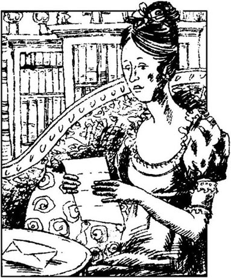
第二天早上，伊丽莎白还没有从达西求婚的惊讶中恢复过来。她感到需要活动，需要新鲜空气，便决定出去散散步。为了避免与达西先生相见，她避开了所喜欢的小道，但禁不住走进了凯瑟琳夫人的庄园里边。在那儿，她惊讶地发现达西本人在向她走来，而且还叫着她的名字。
“我一直在这儿走动，希望能见到你，”他说，“请你赏光看看这封信好吗？”他递过信来，微微鞠了一躬，便快速地走开了。她没有希望得到多大乐趣，而是怀着强烈的好奇心，一边继续独行，一边开始读信：
小姐，请不要怕，我要重申昨天晚上令你厌恶的请求。我无意重提为了我们两人的幸福而无法很快忘记的愿望。我本来可以不写，但正义要求我为自己的品格辩护。
昨晚，你把两件十分不同的罪名加在我头上。第一件是我不顾彬格莱先生和令姊彼此相爱，拆散了他们的好事，第二件是我不顾先父的郑重许诺，断送了韦翰先生获得财富和幸福的机会。我希望你读完以下我的解释以后不会再为其中任何一件事责怪我。如果我被迫描述惹你生气的感情，那么，我只能说声抱歉。
我到哈福德郡不久，就看出彬格莱先生在当地所有少女中偏偏看中了令姊。但是，我以前经常看到他谈恋爱，直到举行尼日斐舞会，我才认识到他对令姊的倾心是多么认真。我仔细地密切观察令姊的变化，因为她的举止言谈一如既往地悦人和快活，所以，我仍旧坚信她对他没有强烈的感情。我也许为她表面的平静所欺骗，当真如此的话，那你的愤怒并非无稽之谈。但我曾真诚相信她的心未被触动。我反对彬格莱先生与令姊可能的婚姻，除了昨晚提及的社会地位卑下等原因之外，还有其他一些原因。我本人企图忘掉这些原因，但我今天必须说明。那天晚上，你的母亲、三位小妹，偶尔还有你的父亲，在举止方面过于不成体统，所以我决心让朋友免于这样一起我自认为甚为不幸的婚姻。如果我对你家人过错的描述令你不安，那么，如果说你和令姊已经免于任何指责，对你们的行为只能加以赞誉，那么，这对于你也不失为一种安慰吧！我接着讲——我在伦敦时，在彬格莱的妹妹的帮助下（她们与我有同感），我向他解释了与令姊结婚的不利之处。当然，仅此一点并不足以阻止这场婚姻，我还成功地说服了他令姊对他并无感情。这样，我就很容易说服他不再返回哈福德郡。但是，有一件事令我不能安心。彬格莱小姐和我都知道令姊在伦敦，但是我们向彬格莱隐瞒了事实。在这件事上，我认为自己不够诚实，但我仅能就此道歉。
你的另一个更严重的指责是关于韦翰先生的。在此，我可能再次引起你的痛苦——痛苦程度只有你知道。为说明他的真正品格，我必须解释他跟我家的全部关系。他已故的父亲为我父亲工作多年，负责看管彭伯里的农场。他的儿子乔治·韦翰深得先父宠爱，他供养他读完大学。我父亲希望这个年轻人进入教会。假如他成为牧师，我将要把彭伯里附近一个村子的教区长职位授与他，如果该职位有朝一日出现空缺的话。但是，即使在父亲去世之前，我已发现韦翰的品质缺陷和道德匮乏。父亲去世之后，韦翰写信通知我说他不打算进入教会，要求我给他一笔钱，而他将就此放弃教区长的职位，于是我马上同意了。一切很快安排妥当。他放弃了对教会职务的所有权力要求，接受了三千英镑作为补偿。我曾希望从那以后不再见到他或听到他的消息。但三年后他又来信了，这次是要教区长的职务，告诉我他的钱已花光，走投无路。你很难责怪我拒绝他的要求。从那以后，他逢人便讲，疯狂地指责我不讲公道。
还有一件事我自己希望忘记，但必须在此一提。我希望你严守秘密。一年前，我将我的妹妹（她比我小十岁）送到肯特郡的拉姆斯盖特度假，托付给一位女伴照料。不幸的是，这位女伴早与韦翰先生达成默契，而韦翰先生当时也去了拉姆斯盖特。在女伴的协助和怂恿下，他在乔治安娜那里花了大量的时间，把她吹捧得天花乱坠，竟然让她相信她爱上了他，便同意与他私奔。她当时只有15岁。我很高兴地告诉你，就在他们计划好私奔之前，我出其不意地到了拉姆斯盖特，她马上向我吐露了一切。很自然，我辞掉了女伴，并写信给韦翰，他马上离开了那个地方。毫无疑问，他最感兴趣的是我妹妹价值三万英镑的财产，但我禁不住也在想，他还急于借机报复我。我希望现在你能在这件事上让我免受指责。
小姐，如果你对我描述的真实性存在怀疑，你可以问费茨威廉上校。他是我的表兄和挚友，对这几件事都知道得一清二楚，他会很高兴地证实我所说的话。
最后，我再说一句：愿上帝与你同在。
费茨威廉·达西
伊丽莎白读信时，经受了复杂的感情变化。她惊奇地发现达西什么样的歉意都会表达。她是带着怀疑一切的目光开始读他有关尼日斐的解释的，起初，她火在心头，不能公正地看待他。但当她继续往下读到他描述与韦翰的关系时，便有些犹豫不决了。这与韦翰所讲的完全不同，她倒宁愿相信韦翰说的是真的。但思索片刻后，她认识到达西的陈述更加可信。她开始回忆起韦翰的几件事，现在觉得有点奇怪。她第一天晚上碰到他时，他就向她，一个完全陌生的人，讲述了自己破财的全部经历，讲了达西一家。后来他吹嘘不怕达西，可是，就在第二个星期，便避免去参加尼日斐的舞会。另外，他一直等到彬格莱一家和达西都离开了尼日斐以后，才将指责公开化。她还提醒自己，在哈福德郡，人们对韦翰的过去一无所知，所以，达西所说的他道德匮乏是完全有可能的。她必须承认，达西本人虽然十分高傲，却处处表现出绅士风度。最后，如果达西不敢肯定表兄费茨威廉会证明他的说法，那么，他也不敢让她去找他作证。
她惭愧得无地自容。“我的行为多糟糕呀！”她嚷道，“我的偏见太深了，就这样，我还总为自己阅人有术的慧眼而自豪呢！这自豪导致我犯了盲目愚蠢的错误。韦翰的殷勤使我受宠若惊，达西的冷静却伤了我的感情，我把他们两人都看错了。到现在，我才认识自己。”
她重读了达西关于简的叙述，这次，她被迫承认简对彬格莱的感情几乎没有什么外在表示。夏洛特甚至还就此讲过自己的看法呢。接着，伊丽莎白再看达西对自己家人行为的评述，更加羞辱不堪。她不能否认他说得公正。她感到前所未有的痛苦，慢慢返回到教区长住宅，在那里，她也很难摆出一副高兴的样子。
达西先生和费茨威廉上校第二天就离开了罗新斯，他们的姨妈想他们想得厉害。她现在因为没有什么娱乐，便邀请柯林斯夫妇和他们的客人每周来玩几次。因为伊丽莎白再过几天就要回去了，所以她觉得大部分时间都有事干还算幸运。她独自一人时，就在外面花园或公园里散散步，不受干扰地静心思考，感到很大的快慰。很快，她就将达西先生的信熟记在心。虽然她对他求婚时的高傲和过分自信还余怒未消，但她一想到自己多么不公正地批评和指责他，这种怨气便转向了自己。她尊重他的品格，也为他的失望感到可惜，但一刻也没有后悔自己拒绝了他，也丝毫没有再次见到他的欲望。
她想到家人，感到一阵悲伤。她父亲喜欢嘲笑吉蒂和丽迪亚的愚蠢，但他从来没有管过这两个最小的女儿；她的母亲，自己的行为远非一般人能够接受，也完全不晓得出了什么差错。还有可怜的简！现在看来彬格莱对她的爱是真挚的，而简的失望却是由她家人的行为间接引起的。
星期六上午，伊丽莎白向朋友夏洛特道了别，心里为把她丢给这样的丈夫而感到难过。不过，夏洛特虽然为客人们的离开感到遗憾，但显得对家庭安排还相当满意。在伊丽莎白离开之前，柯林斯先生还特意告诉她说：“亲爱的伊丽莎白小姐，我真诚希望你的婚姻能像我这样美满。我和亲爱的夏洛特真可谓夫唱妇随，天作之合。”
“如果是这样，那就太幸运了。”伊丽莎白只能这么模棱两可地回答。
中午时分，她到达了伦敦，她已安排好在舅母家小住几日。但是，她找不到机会同简讨论达西的信，这一拖就到了周末，她们都回到了浪搏恩。
又回到了家，令人感到愉快，但伊丽莎白对几个妹妹的傻气十分敏感。她们满口都是刚刚听到的坏消息，说什么军团两周后要离开麦里屯到南部沿海的度假村布赖顿消夏了。丽迪亚和她母亲在竭力说服班纳特先生也把她们带到布赖顿，住上几个月，因为在哈福德郡，没有了军官们，夏天实在难熬。值得庆幸的是，伊丽莎白可以肯定父亲不会同意这种愚蠢的建议。
她和简独处时，告诉了她达西求婚的事。简吃了一惊，但过了不久，姐妹之情使她感到这一切很自然，她那善良的心胸也为达西的失望感到惋惜。不过，她听到达西信中所讲的乔治·韦翰如何奸诈时，还是感到大为震惊。经过一番讨论，两人决定不把韦翰的事告诉任何人，反正他不久就要离开麦里屯了。
谈完话后，伊丽莎白感到无比轻松。她已甩掉了两个秘密，而且肯定她什么时候愿意再谈，简都会随时愿意倾听的。但她不敢谈第三个秘密，即向简说明彬格莱对她的感情是多么真挚。她看得出简不高兴，因为她不断唤起对彬格莱的温馨回忆。但是，现在彬格莱再娶她似乎希望已很渺茫了，伊丽莎白不想加深简对失去的幸福感到的遗憾。
9 Elizabeth in Derbyshire
9
Elizabeth in Derbyshire
During the week before the regiment's departure, all the young ladies in the Meryton area became extremely depressed. Only the two elder Miss Bennets were still able to eat, drink, sleep and lead a normal life. They were often scolded by Kitty and Lydia, who could not understand such hard heartedness.
'How shall we manage without the officers!' they cried miserably. 'How can you smile like that, Lizzy?'
Their affectionate mother shared all their sadness. 'I remember when Colonel Millar's regiment went away, twenty five years ago,' she said, 'I thought my heart was broken.'
'I'm sure mine will be broken,' said Lydia.
'If we could only go to Brighton!' said Mrs Bennet. 'I'm certain a little sea-bathing would be good for me.'
'Oh yes! But Papa is so disagreeable about it.'
Elizabeth tried not to listen, but could not help seeing the justice of Darcy's objections to her family.
But soon Lydia's bitterness changed to absolute delight, when she received an invitation from Colonel Forster's wife, to accompany her to Brighton with the regiment. Mrs Forster was a very young woman, only recently married, and as cheerful and sociable as Lydia, with whom she had been friendly for two months. Poor Kitty was very upset at not being included in the invitation, but Lydia cared nothing for her sister's feelings. She ran wildly through the house, calling for everyone's congratulations, and laughing and talking more loudly than ever.
Elizabeth could not share her sister's happiness, and felt it was her duty to advise her father secretly to refuse permission for Lydia to go. But she could not convince him that Lydia would be in any real danger, and so all the arrangements were made for her sister's departure. Elizabeth thought her father was wrong, however, and was still worried about how Lydia would behave in an atmosphere of greater freedom, and among the temptations of a fashionable seaside town like Brighton.
Elizabeth had seen Mr Wickham regularly since her return from Kent, at family parties and visits. She no longer thought him so agreeable. As the rich Miss King had left Meryton to stay with her uncle, Mr Wickham appeared eager to transfer his affections back to Elizabeth. His confidence in his own charm and ability to please annoyed Elizabeth very much, so that when she met him for the last time before the regiment's departure, she spoke quite coldly to him. In reply to a polite question of his about her Hunsford visit, she could not stop herself mentioning her frequent meetings with Mr Darcy, and her favourable opinion of that gentleman's character. Wickham looked a little embarrassed, and made no further attempt to charm Elizabeth. They separated at last with mutual politeness, and possibly a mutual desire never to meet again.
When Lydia left for Brighton, Elizabeth had to put up with Mrs Bennet's and Kitty's constant complaints that Longbourn had become very dull. Fortunately, she was able to look forward to a trip which she would soon be taking with Mr and Mrs Gardiner. They had planned to visit the Lake District, but Mrs Gardiner had recently written to say that as her husband's business made it necessary to shorten their holiday to three weeks, they would not have time to visit the whole of the Lake District comfortably. Instead, she suggested visiting Derbyshire, an area with a particularly strong attraction for her, as she had spent a large part of her early life there. Elizabeth was disappointed, but accepted the new plan at once. Although it was impossible to hear of Derbyshire without thinking of Pemberley and its owner, she felt sure she could avoid meeting Mr Darcy there.
Four weeks later, Mr and Mrs Gardiner arrived at Longbourn, where they had arranged to leave their children in Jane's care. The next day they set out with Elizabeth on their journey. The three of them made excellent travelling companions, sharing an intelligent interest in the people and places they saw on their way, and a strong affection for each other. After visiting Oxford, Blenheim, Warwick, Kenilworth and Birmingham, they arrived in Derbyshire, and decided to stay in the small town of Lambton, where Mrs Gardiner had lived before her marriage. Elizabeth discovered that Mr Darcy's house, Pemberley, was only eight kilometres away from Lambton.
'I often used to go to Pemberley when I was younger,' said Mrs Gardiner. 'Wouldn't you like to see it, Lizzy? We could go tomorrow. It's a beautiful place. Wickham spent his youth there, you know.'
'I—I am rather tired of large country houses, aunt,' said Elizabeth, forced to pretend. How dreadful it would be to meet Mr Darcy, while viewing his house! But when she asked a servant at the hotel one or two careful questions that evening, she was told that Mr Darcy was not at home at the moment. Greatly relieved, she felt able to agree to her aunt's suggestion, when it was repeated the next morning, and Mr Gardiner ordered a carriage immediately.
In a short time they entered the gates of Pemberley park, and drove through an extensive and beautiful wood. At the top of a hill they had their first view of Pemberley House, situated on the other side of a valley, with a line of high, wooded hills behind. The house was a large, handsome, stone building, which appeared to fit naturally into the scenery. Mr and Mrs Gardiner were warm in their admiration, and Elizabeth was delighted. At that moment she felt that to be mistress of Pemberley might be worthwhile!
They drove up to the front door, and asked to be allowed to visit the house. The Pemberley housekeeper, a respectable, elderly woman, showed them round. All the rooms were of a good size, and elegantly yet sensibly furnished. From every window there was an attractive view. Elizabeth began to admire the owner's taste in everything she saw.
'And I might have been mistress of this place!' she thought. 'Instead of viewing these rooms as a stranger, I might be welcoming my uncle and aunt as visitors. But no,' she suddenly remembered, 'that could never be. I wouldn't have been able to invite my uncle and aunt, or any other of my vulgar family connections.' This was a lucky thought, which saved her from something like regret.
She longed to enquire of the housekeeper whether her master were really absent, but luckily her uncle asked the question instead. It was quite alarming to hear that Mr Darcy was expected to arrive the next day, with a large group of friends. How glad Elizabeth was that their own journey had not been delayed a day!
Mr and Mrs Gardiner were enjoying their conversation with the housekeeper, who seemed content to talk about her master.
'Mr Darcy is a very handsome gentleman, as you will see from the painting upstairs. His sister is most attractive too, and so accomplished! She plays and sings the whole day. My master has just sent a new piano from London for her. He's such a kind brother, he'll do anything for Miss Georgiana.'
'Does Mr Darcy spend much time at Pemberley?' asked Mr Gardiner.
'Not as much as I'd like, sir.'
'If your master married, he might spend more time here! '
'Yes, sir, but I don't know when that'll be. I don't know who is good enough for him.' Mr and Mrs Gardiner smiled, and Elizabeth listened with increasing astonishment as the housekeeper continued. 'It's no more than the truth. Everybody who knows him says the same. He's never spoken a cross word to me, and I've known him since he was a baby. Some people call him proud, but I've never seen any of that. He's the best master that ever lived.'
Elizabeth almost stared at her. 'Can this be Mr Darcy?' she wondered. This was the most extraordinary praise for the man she had always thought so disagreeable and proud, especially with people he considered inferior to himself. She longed to hear more, but now the housekeeper was leading them upstairs. Soon Elizabeth found herself in front of the painting of Mr Darcy. He was smiling at her, just as she remembered him smiling sometimes when he looked at her. She looked at the picture silently for several minutes before going downstairs with the others. At that moment Elizabeth certainly felt more warmly towards Mr Darcy than at any time since their first meeting. She was beginning to realize that she had underestimated his character. His housekeeper's opinion of him was totally favourable, and what praise is more valuable than the praise of an intelligent servant? As she stood in front of his picture, she gratefully remembered the warmth of his feelings for her, and began to forget the way in which he had expressed them.
As they had now seen all the rooms which were open to the public, the housekeeper called the gardener, who was going to show them the park and gardens. They were just walking away from the house, when Elizabeth turned to have one last look, and saw the owner of Pemberley come suddenly forward from behind the house.
They were within twenty metres of each other, and Elizabeth could not avoid his seeing her. Their eyes instantly met, and they both blushed. He appeared very surprised, but, recovering quickly, approached and spoke to Elizabeth, if not calmly, at least with perfect politeness. Astonished and confused, she received his greetings with embarrassment. Soon he could find no more to say, and left her to return to the house. Mr and Mrs Gardiner, who had been watching from a distance, expressed their admiration of his appearance, but Elizabeth could only think of her feelings. How unfortunate that she had come! She blushed again. It might seem as if she had planned this meeting with him. And his behaviour was so different! Never before had she heard him speak so politely and so gently. What could it mean?
Her head full of these thoughts, she joined her uncle and aunt in their walk through the gardens. They were walking slowly beside an attractive stream, when they noticed Mr Darcy coming towards them. This time Elizabeth was able to control herself better, and she returned his greetings politely. She hid a smile when he asked her to do him the honour of introducing him to her friends, as she felt sure he was not expecting the well-mannered Gardiners to be some of her low-born relations. He certainly seemed surprised when she introduced her uncle and aunt, but took care to talk for some time to Mr Gardiner, with every appearance of interest. Elizabeth was delighted that these relations, at least, could not be criticized for their poor behaviour or lack of intelligence. On their way back to the house, Mr Darcy walked beside Elizabeth. There was a short silence before she spoke.
'Your housekeeper informed us you would not arrive until tomorrow, so I had not expected to find you here.'
'It is true. I came early on business. The rest of the party will be here tomorrow. Among them are Mr Bingley and his sisters, whom you know.' He continued after a pause, 'And there is one other person who particularly wishes to meet you. Will you allow me, or do I ask too much, to introduce my sister to you?'
Surprised but flattered by this great compliment, Elizabeth gave her permission. When they arrived at the house, Mr Darcy offered them some refreshment, but they politely refused. Mr Darcy helped the ladies into the carriage, and as it drove away from Pemberley, Elizabeth watched him walking slowly back towards the house. Mr and Mrs Gardiner were loud in their praise of him, but Elizabeth said very little.
The very next morning Mr Darcy brought his sister to visit Elizabeth and the Gardiners at the hotel in Lambton. Mr and Mrs Gardiner were astonished by the honour they were receiving, but Elizabeth's obvious embarrassment, and Darcy's haste in making the visit so immediately, soon provided them with an explanation. They observed their niece and Darcy carefully during the visit, and could not doubt that the gentleman was in love, although they were not certain of the lady's feelings.
Elizabeth was delighted to discover that Georgiana Darcy, far from being proud, as Wickham had said, was just very shy, with quiet, gentle manners. It was clear that she greatly admired her brother, and had every intention of liking Miss Bennet, as Darcy had spoken of her so favourably. Elizabeth was also satisfied to see that Bingley, who was with the Darcys, did not seem particularly interested in Georgiana, in spite of Caroline Bingley's wishes. And she had to admit that she had never seen Mr Darcy behaving so sociably and pleasantly, not only to herself, but also to the relations to whom he had referred with such disdain during that last conversation in Hunsford Rectory. Elizabeth herself was more than usually anxious to make herself agreeable to everybody, and she succeeded, because Bingley was ready, Georgiana was eager, and Darcy determined, to be pleased.
Miss Darcy, encouraged by her brother, invited Elizabeth and the Gardiners to dinner at Pemberley in two days' time, and when this invitation had been accepted, the Darcys and Mr Bingley left, with many warm expressions of politeness on both sides. Mr and Mrs Gardiner were very curious about their niece's feelings for Mr Darcy, but were careful not to question her.
That evening Elizabeth lay awake for two whole hours, trying to understand how she felt about him. She now thought of him with respect and a certain admiration, and was deeply grateful to him, not only for having once loved her, but for still loving her enough to forgive her bitter rejection of him, as well as all her unjust accusations. The change she had noticed, in a man who was once so proud, must be caused by his love for her. Now, since she was almost sure that if she wanted, she could encourage him to propose to her again, she only had to decide how far she wished to be involved in his future happiness, in which she already felt a real interest.
depressed adj. sad. 沮丧的。
scold v. blame with angry words. 叱责；骂；责备。
justice n. the quality of being right and fair. 合理；公正。
wildly adv. in a wild manner. 疯狂地；激动地。
atmosphere n. feeling that the mind receives from a place, conditions, etc. 感觉；气氛。
mutual adj. held in common with others. 相互的。
constant adj. going on all the time. 不断的。
dull adj. uninteresting; not exciting. 单调的；枯燥的。
business n. commerce. 生意。
force v. produce under stress. 强迫。
extensive adj. extending far. 广阔的。
situated adj. in a particular place; located. 坐落某处的；位于某处的。
long v. wish for very much. 渴望。
housekeeper n. woman employed to manage the affairs of a household. 女管家。
delay v. to do something later than planned; put off. 推迟。
master n. a man in control of people, animals, or things. 主人.
extraordinary adj. remarkable. 特别的。
valuable adj. of great value, worth or use. 有价值的。
instantly adv. at once. 立即。
greeting n. a form of words or an action used on meeting someone. 问候。
public n. people in general. 公众。
refreshment n. food and drink. 食物；饮料；点心。
hotel n. building where meals and rooms are provided for travellers. 旅馆。
haste n. quick movement or action; hurry. 匆忙；仓促。
warm adj. hearty. 热情的。
involve v. to be caught. 卷入。
伊丽莎白在德比郡
9 伊丽莎白在德比郡
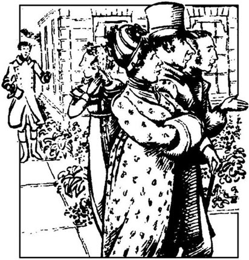
兵团离开前一周，麦里屯地区所有的年轻小姐都变得极为沮丧。只有班纳特家两个大女儿还能吃、能喝、能睡，过着正常的生活。吉蒂和丽迪亚时常责怪她们，说不理解她们的铁石心肠。
“军官们走了我们怎么活呀！”她们悲切地嚷道。“丽萃，你怎么还笑得出来？”
她们慈爱的母亲和她一样悲伤。“我记得25年前米勒上校的兵团离开时，我的心都碎了。”她说。
“我的心也快碎了。”丽迪亚说。
“我们要能去布赖顿就好了！”班纳特太太说，“我肯定，洗洗海水浴对我是大有好处的。”
“噢，是的！可是爸爸太反对了。”
伊丽莎白试图充耳不闻，但是，禁不住想到达西对她家的反对是正当的。
但是，不久，丽迪亚的满脸愁苦就变成了喜笑颜开，因为她受到了福斯特上校妻子的邀请，要她同兵团一道，陪她到布赖顿去。福斯特太太十分年轻，最近刚刚结婚，和丽迪亚一样快活合群，她们的友谊已有两个月了。可怜的吉蒂因为不在受邀之列，感到坐卧不安，可是丽迪亚对姐姐的感情不管不问。她在家里东奔西跑，要大家向她道喜，谈笑声比以往任何时候都高。
伊丽莎白不能和妹妹分享快乐，还认为她有责任偷偷建议父亲不允许丽迪亚去。但她说服不了父亲丽迪亚会有什么真正的危险，于是，丽迪亚出发的一切安排都作好了。不过，伊丽莎白认为父亲错了，一旦享有更大自由，又到了布赖顿这样追求时尚的海滨城市，丽迪亚会变成什么样呢？伊丽莎白仍然为此担忧。
自从伊丽莎白从肯特郡回来以后，她常常在家庭聚会或互访中碰到韦翰先生。她不再认为这个人很随和。因为富有的金小姐已经离开麦里屯到叔叔那儿去了，韦翰先生似乎急于将他的感情转回到伊丽莎白身上。他对自己取悦人的魅力和能力信心十足，这使伊丽莎白十分恼火，因此，在兵团离开之前他们最后见面时，她对他说话时相当冷淡。在回答他有关汉斯福之行有何感受的客套话时，她禁不住提起她经常与达西先生见面，并且说对这位先生的品行印象不错。韦翰看上去有点窘迫，也就不再试图吸引伊丽莎白了。最后，他们分手时彼此都很客气，也许彼此都不希望再次见面。
丽迪亚前往布赖顿以后，伊丽莎白就不得不忍受班纳特太太和吉蒂唠唠叨叨的抱怨，说什么浪搏恩现在太死气沉沉了。幸运的是，她可以期望着不久和嘉丁纳夫妇一块去旅行。他们原计划游览大湖区，但是，嘉丁纳太太最近写信说，由于丈夫的工作需要，必须把假期缩短为三周，这样就没有时间畅游大湖区的全部风景了。因此，她提议游览德比郡，这个地方对她有特殊的吸引力，因为她早年大部分时间都在那里度过。伊丽莎白感到失望，但是马上接受了新计划。虽然一听到德比郡不可能不想起彭伯里和它的主人，但她肯定地认为她可以避免在那里与达西先生相见。
四周以后，嘉丁纳夫妇到达了浪搏恩，他们安排好把孩子们留在那里，让简照料。第二天，他们就带上伊丽莎白踏上了旅途。他们三人是极好的旅伴，对路上的所见所闻有着共同的高雅兴趣，彼此之间又有着强大的情感联系。他们参观了牛津、布楞恩、沃里克、凯尼尔沃思和伯明翰以后，便来到了德比郡，决定待在蓝白屯小镇，嘉丁纳太太结婚以前就住在那里。伊丽莎白发现，达西先生的住宅彭伯里离蓝白屯仅有八公里之遥。
“我年轻时经常到彭伯里去，”嘉丁纳太太说，“你不想看看那里吗，丽萃？我们明天就去。那地方很漂亮。韦翰年轻时就在那里度过，你也知道。”
“我——我有点腻味大的乡村庄园了，舅妈，”伊丽莎白说，竭力装出这个样子。看达西先生家的住宅时，再碰到达西先生，那该多糟糕呀！可是，那天晚上她详细询问了旅店仆人一两个问题后，便得知达西先生当时不在家。她大大松了一口气，第二天舅妈再问起同样的问题时，她便同意了舅妈的建议。嘉丁纳先生马上叫了一辆马车。
不一会儿，他们就进入了彭伯里庄园的大门，穿过一大片漂亮的林地，来到小山之巅。从这儿，他们第一次看到了彭伯里府第，它坐落于山谷另一侧，后面是一片林木覆盖的山陵。房子是巨大的、漂亮的石头建筑，与自然景观融为一体。嘉丁纳夫妇赞赏不已，伊丽莎白也感到兴奋。这时，她觉得，在彭伯里做主妇也许不错！
他们驱车到了前门，请求参观房子内部。彭伯里的管家是一位受人尊敬的老妇人，她带领着他们参观。每个房间都很宽敞，家具陈设也风雅有致。从每扇窗户都能看到迷人的风景。从所见的一切中，伊丽莎白开始欣赏主人的志趣。
“我差点儿就做了这儿的主妇呢！”她想，“我不但不必以一个陌生人的身份前来参观，而且还可以把舅父母当作贵客欢迎。可是不行。”她忽然想起来，“永远做不到。我无法邀请舅父母或者其他卑贱的亲戚。”她幸亏想到了这一点，才没有为当初的事后悔。
她真想问问这位管家，主人是否真的不在家，不过，她舅舅正好替她问了这个问题。听说达西先生预计明天到家，还要带许多朋友来，她感到很吃惊。她庆幸他们自己的旅行没有向后推迟一天！
嘉丁纳夫妇很乐意与管家谈话，管家似乎很高兴谈自己的主人。
“达西先生很英俊，从楼上的画像中你们可以看到。他妹妹也很有魅力，非常多才多艺！她整天弹啊唱啊的。我的主人刚让人从伦敦给她运来一架新钢琴。他这个哥哥非常善良，他为乔治安娜小姐不惜一切。”
“达西先生在彭伯里待的时间长吗？”嘉丁纳先生问。
“我倒希望他能多待些日子，先生。”
“主人结婚以后，可能会在这里待的时间长些！”
“是的，先生。可是我不知道他什么时候结婚。我不知道谁能配得上他。”嘉丁纳夫妇笑了。管家继续讲；伊丽莎白越听越惊奇。“我说的全是实话。认识他的人都这么说。他从来没有对我说过一句生气的话，我是从小把他看大的。有的人说他傲慢，可是我一点也看不出来。他是世界上最好的主人。”
伊丽莎白几乎目瞪口呆。“这可能是达西先生吗？”她疑惑不解。她一贯认为这个人与别人格格不入，傲慢无比，特别是对那些他认为地位低的人，现在却听到了对他最为不平凡的赞美。她渴望多听一些，可是管家带他们上了楼。不一会儿，伊丽莎白就发现自己站到了达西先生的画像前。他正冲着她微笑，正是那种有时候他看她时所带的笑容。她默默地看了一会儿画像，便随其他人下楼去了。这时，伊丽莎白对达西先生产生了自第一次见面以来从未有过的亲切感。她开始认识到她低估了他的品格。管家对他的看法是完全肯定的，再说，有什么样的赞美比聪明的仆人的赞美更难得呢？她站在画像前那会儿，感激地回忆起他对她的温暖感情，而开始忘掉他表达感情的方式。
现在，他们已看完所有向公众开放的房屋，管家就把园丁叫过来，园丁要领着他们参观庄园和花园。他们正要离开房子，这时伊丽莎白又回头看了最后一眼，看到庄园的主人突然从房子后面走了过来。
他们相距不到二十米，伊丽莎白根本来不及躲闪。顷刻间，四目相对，两人都涨红了脸。达西显得十分惊奇，但很快恢复过来，走上前去，与伊丽莎白说话。他谈不上镇定自若，但至少可以说十分客气。伊丽莎白感到既惊讶又心慌意乱，很尴尬地接受了他的问候。一会儿，他就觉得没什么可说的了，便离开她回到了屋里。嘉丁纳夫妇一直在远处观看，他们对他的外貌大加称赞，但伊丽莎白心中只有自己的感情。她来得多不是时候！她脸又红了。好像是她特意来见他似的。而他的态度也和以前完全不同！她从来没有听到过他说话这么彬彬有礼，这么温柔。这是什么意思呢？
她满脑子胡思乱想，加入了舅父舅母的行列，步行穿越花园。他们正沿一条引人注目的小溪缓行，这时，他们注意到达西先生朝他们走来。这一次，伊丽莎白控制得比较好，很有礼貌地回了他的问候。达西要她赏光，并且介绍一下她的朋友，她掩住了笑容，因为她敢肯定，达西不会想到温文尔雅的嘉丁纳夫妇会是她出身低下的亲戚。她介绍完舅父舅母后，他自然感到奇怪，但竟然跟嘉丁纳先生攀谈了一会儿，似乎很感兴趣。至少这两位亲戚不会被人指责为举止欠妥或智力贫乏，伊丽莎白对此感到欣慰。在返回住宅的路上，达西先生和伊丽莎白并肩走着。稍微沉默了片刻，伊丽莎白说：
“你的管家告诉我们你到明天才回来，所以，我没想到会在这儿碰上你。”
“是这样。我提前回来是有公务在身。剩下的人明天到。其中有彬格莱先生和他的姐妹，你都认识。”顿了一下，他继续说，“还有另外一个人特别希望见到你。你能否赏光，允许我向你介绍一下我的妹妹？你是否认为这样太冒昧了？”
伊丽莎白感到奇怪，但因为受到这种恭维而受宠若惊，便答允了他。他们到了宅第前，达西先生请他们进去吃点小点心，但他们客气地谢绝了。达西先生扶着两位女客上了马车，马车驶离彭伯里时，伊丽莎白看着他慢慢地走回了房子。嘉丁纳夫妇大声称赞他，但伊丽莎白几乎什么也没说。
就在第二天上午，达西先生就带着他妹妹来到了蓝白屯的旅馆，拜访伊丽莎白和嘉丁纳夫妇。嘉丁纳夫妇对这种殊荣甚感吃惊，但伊丽莎白明显的尴尬神色加上达西匆忙地安排如此紧迫的拜访，不久就给他们俩提供了解释。在拜访中他们俩密切地观察外甥女和达西的行为，结论是，毫无疑问，这位先生已经爱上了小姐，但小姐的感情还不敢确定。
伊丽莎白喜悦地发现乔治安娜·达西不像韦翰所说的那样，根本谈不上高傲，只是十分羞怯，举止十分恬静、温柔。很明显，她很钦佩哥哥，并极欲同班纳特小姐结交，因为达西尽说她的好话。伊丽莎白还高兴地看到，和达西兄妹同行的彬格莱似乎对乔治安娜小姐不是特别感兴趣，这一点就由不得卡罗琳·彬格莱了。她还不得不承认，她还从来没有见过达西先生的举止这样随和，这样令人高兴，不但对她如此，而且对自己的亲戚也如此。然而，最后一次在汉斯福教区长住宅谈话时，他曾如此鄙夷地说到她的亲戚。伊丽莎白本人也比往常更加急于使自己的形象在所有人面前显得和蔼可亲。她成功地做到了这一点，因为彬格莱时刻准备着接受她这种形象，乔治安娜渴望着接受她这种形象，达西下决心接受她这种形象。
达西小姐在哥哥的鼓励下，邀请伊丽莎白和嘉丁纳夫妇两天后到彭伯里赴宴。他们接受了邀请之后，达西兄妹和彬格莱先生就离开了，双方都说了很多暖烘烘的客气话。嘉丁纳夫妇对于外甥女对达西先生的感情感到十分好奇，但他们很小心，没有问她。
那天晚上，伊丽莎白翻来覆去整整两个小时未能入睡，她在努力弄清她对达西到底是什么感觉。她现在对他感到尊敬，和一定程度的爱慕，并且怀有深深的感激之情，不但是因为他以前爱过她，而且还因为他现在还爱她，爱得足以能够原谅她对他的断然拒绝，原谅她对他不公正的指责。在一个曾如此傲慢的人身上，她所注意到的这些变化，一定是因为他对自己的爱所致。既然她几乎可以肯定，如果她愿意的话，她可以鼓励他再次向自己求婚，那么，现在她只需决定在多大程度上她愿意涉足他未来的幸福，在这一点上，她现在已感到有了真正的兴趣。
10 Lydia and Wickham
10
Lydia and Wickham
On the third morning of her visit to Lambton, Elizabeth received two letters from Jane. The first had been badly addressed and sent elsewhere, then redirected. Her aunt and uncle were out walking, so she sat down to read them at once. The first had been written five days before, and started just as expected, with a description of Longbourn dinner parties and visits, but the second half of this letter was dated a day later, and was evidently written in a great hurry. This is what it said:
Since writing the above, dear Lizzy, something most unexpected and serious has happened. But I do not wish to alarm you, we are all well. It concerns poor Lydia. An express letter came at midnight last night, when we were all in bed, from Colonel Forster, to inform us that she had run away to Scotland with one of his officers, with Wickham, in fact! There, of course, she can marry without her parents' approval. Imagine our surprise. What a foolish marriage for both of them! But at least he is not interested in her money, as he must know my father can give her almost nothing. Kitty admits that she knew about Lydia's attachment to Wickham, from Lydia's letters. Our poor mother is very upset. I must finish now, as I cannot stay away from her for long. I hope you can read this. I hardly know what I have written.
Without allowing herself time to think, Elizabeth opened the second letter, dated a day later, and read impatiently:
My dearest sister,
I am so confused I cannot write properly. I have bad news for you. Foolish though a marriage between Mr Wickham and our poor Lydia might be, we are now only too anxious to hear that it has taken place. There is reason to fear they have not gone to Scotland. Colonel Forster arrived here yesterday. He tells us that one of the officers, a close friend of Wickham, believes that Wickham never intended to go to Scotland, or to marry Lydia at all. The colonel followed the couple as far as London, but they have not been seen leaving the capital. Our anxiety, my dear Lizzy, is very great. My father and mother believe the worst, and the colonel fears Wickham is not a man to be trusted, but I cannot believe him to be so wicked. And is Lydia so completely lacking in morals, that she could live with a man without being married? Impossible. Now my poor mother is really ill, my father is angry, for perhaps the first time in his life, and Kitty is being scolded for keeping the attachment a secret. While I am glad, dearest Lizzy, that you have been spared some of the confusion and worry we have been experiencing, I cannot help begging you all to come home as soon as possible. My father is going to London with the colonel to try to find Lydia. I think he is too upset to achieve results in the best and safest way, and my uncle's advice and help would be everything in the world. I rely on his goodness.
'Oh! Where, where is my uncle?' cried Elizabeth, running to the door. But just as she reached it, Mr Darcy came in. Her pale face and strange manner prevented him from speaking, and she, who could think of nothing except Lydia, said hurriedly, 'Excuse me, but I must leave you. I must find Mr Gardiner immediately. There is not a moment to lose.'
'Good God! What is the matter?' he cried, then added, 'Let me, or let the servant, go to find Mr and Mrs Gardiner. You are not well enough. You cannot go yourself.'
Elizabeth hesitated, but her legs were trembling, and she realized he was right. After giving the servant her message, she sat down, looking so ill that Darcy could not leave her, or stop himself saying gently, 'Let me call someone to look after you. Shall I get you a glass of wine? You are very ill.'
'No, thank you,' she replied. 'I am quite well. I am only upset by some dreadful news I've just received form Longbourn.' She burst into tears, and for a few minutes could not speak another word. Darcy watched her miserably, in sympathetic silence. At last, she spoke again. 'It cannot be hidden from anyone. My youngest sister has eloped, with—with Mr Wickham. You know him too well to doubt what will happen. She has no money, no connections, nothing that can tempt him to marry her. She is lost for ever. And I could have prevented it! I knew how bad his character was. If only I had told my family what I knew about him! But it is all too late now.'
Darcy looked at her in astonishment. 'I am shocked,' he said, 'and sad, very sad. What has been done to find her and bring her back?'
'My father has gone to London, and I hope my uncle will go too. We shall leave Lambton, I hope, in half an hour. But I know very well that nothing can be done. How can such a man be persuaded? How can we even find them? I have not the smallest hope. It is horrible!'
Darcy made no answer. He was walking up and down with a serious, thoughtful expression on his face. Elizabeth soon observed and instantly understood it. She was losing her influence over him. This proof of moral weakness in her family was driving him away from her. Never before had she so honestly believed she could have loved him, as now, when mutual affection must be impossible.
But she could not think for long of herself, when Lydia's situation was so desperate. Mr Darcy left almost immediately, politely regretting that Elizabeth and her aunt and uncle would not, in the circumstances, be able to come to dinner at Pemberley that day, and again expressing his sympathy. When Mr and Mrs Gardiner entered the room, Elizabeth hurriedly explained everything to them, and was greatly relieved when they agreed to leave at once, to return to Longbourn.
Their packing was done at great speed, and soon they were in the carriage, driving south.
'Lizzy,' began Mrs Gardiner, 'I cannot believe that Wickham's character is so bad that he would run away with Lydia, and not marry her. Do you really think he is capable of that?'
'My dear aunt, Jane and I both know that he has neither honesty nor honour. He has falsely accused Mr Darcy, and has lied wickedly about the whole Darcy family. You saw what a shy, gentle girl Miss Darcy is, but he had described her as proud, disagreeable and disdainful.'
'But does Lydia know nothing of this?'
'Oh, no! That is the worst of all. I didn't know the truth myself until my visit to Kent, and when I returned, and told Jane, she and I decided not to make our knowledge public. Now I know that was a mistake. I never thought that Lydia could be in any danger from him.'
When they arrived at Longbourn, Elizabeth and her aunt were able to help Jane in looking after the children. They also attempted to calm Mrs Bennet, who, however, refused to be calmed, and blamed everyone except herself for the disaster.
'If only I had been allowed to take the family to Brighton, this would not have happened. Poor dear Lydia had no one to take care of her. Why did those Forsters ever let her go out of their sight? I am sure they neglected her. Of course, I did not want her to go to Brighton, but nobody took any notice of me, as usual. And now Mr Bennet has gone to London, and I'm sure he'll fight Wickham, and then he'll be killed, and then the Collinses will turn us out of the house, before he's cold in his grave!'
'Do not worry, sister,' said Mr Gardiner kindly. 'I'm going to London tomorrow, to help my brother-in-law.'
'Oh, thank you, my dear brother,' replied Mrs Bennet. 'Make sure you find Lydia and Wickham, and if they are not married yet, make them marry. And tell Lydia, they mustn't wait for wedding clothes, but she shall have as much money as she wants to buy them, after they are married. And keep Mr Bennet from fighting—tell him what a dreadful state I am in, so ill that I can get no rest by night or by day. And tell Lydia not to buy any clothes until she's seen me, because she doesn't know the best shops. Oh, brother, how kind you are! I hope you will manage everything.'
The next day Mr Gardiner travelled to London, as he had promised. Now began a painful period of waiting for those left at Longbourn. They became even more anxious, as news came from Meryton of Wickham's lies, debts, and secret attachments to most of the servant girls in the town. Everybody declared that he was the wickedest young man in the world, and protested that they had always distrusted his great charm and appearance of goodness. Although Elizabeth did not believe half of these stories, she believed enough to feel sure that her sister's reputation was already lost, and even Jane almost despaired of receiving good news.
In a few day's time they were relieved to receive a letter from Mr Gardiner, but unfortunately it only informed them that Wickham and Lydia had not yet been found. Apparently Wickham had left gambling debts of over a thousand pounds behind him in Brighton. Mr Bennet was returning home the following day, leaving his brother-in-law in London to continue the search. When she heard this, Mrs Bennet did not show as much satisfaction as her children expected, considering the anxiety she had previously expressed for her husband's safety.
'What, is he coming home without poor Lydia?' she cried. 'And who will fight Wickham, and make him marry her?'
Mrs Gardiner took the opportunity of Mr Bennet's return to go back to London herself, with her children. She was still longing to know how Elizabeth's relationship with Darcy had developed, but Elizabeth had not once mentioned his name, so her aunt did not dare to ask any direct questions.
When Mr Bennet arrived home, he appeared as calm as ever, but in a conversation with Elizabeth he admitted that he felt to blame for Lydia's elopement.
'I know I should have had more control over her,' he said. 'And, Lizzy, you were right. I should never have let her go to Brighton.'
Kitty, who was listening, said, 'Papa, if I ever went to Brighton, I'd behave much better than Lydia has done.'
'You go to Brighton!' cried her father. 'I would not trust you within twenty kilometres of the place, for fifty pounds! No, Kitty, I have at last learnt to be cautious, and you will feel the effects of it. No officer may ever enter the house again, or even pass through the village. And balls will be absolutely forbidden, unless you dance only with your sisters.'
Kitty, taking these threats seriously, began to cry.
'Well, well,' said he, 'don't make yourself unhappy. If you are a good girl for the next ten years, I'll take you to the theatre at the end of that time.'
Two days later, the news for which they had all been waiting so anxiously arrived. Mr Gardiner's letter informed them that Wickham and Lydia had been found, but that they were not married. However, certain financial arrangements had been made with Wickham. Mr Bennet was asked to pay Lydia one hundred pounds a year, as well as arranging for her to inherit her equal share of the five thousand pounds which the Bennet girls would inherit after their parents' death. If these reasonable conditions were agreed, Wickham had promised to marry Lydia.
At first Elizabeth and Jane were delighted that their sister's reputation would be saved through marriage, even to such a man as Wickham. But then their father explained that Wickham would never have agreed to marry Lydia, unless he had been paid a considerable amount of money immediately. They began to worry that it would be difficult to repay Mr Gardiner, who must have bribed Wickham in this way. Mrs Bennet, however, had no such worries.
'He is her own uncle, after all!' she cried happily. 'Why shouldn't he pay? My dear, dear Lydia! Married at sixteen! How I long to see her, and dear Wickham too! But the wedding clothes! I'll write to my sister-in-law about them at once! I'm so happy. In a short time I'll have a daughter married. Mrs Wickham! How well it sounds!'
Now that Lydia was going to be married, Elizabeth greatly regretted telling Darcy of her fears for her sister. But even if Lydia had been married in the most honourable way, it was extremely unlikely that Mr Darcy would wish to connect himself with a family in which there was a close relationship with Wickham, the man he most justly disliked. She could not expect him to go on caring for her, as she felt certain he had done when they met in Derbyshire. But now that she was sure he could not love her, she was convinced they could have been happy together. He seemed to be exactly the man who would have suited her. They could have usefully influenced each other. His mind might have been softened and his manners improved by her sociability, and she might have learnt from his greater judgement and knowledge of the world. But no such relationship could now teach an admiring world what happiness in marriage was really like. Instead, Wickham would marry Lydia, with little chance of happiness for either of them.
Mr and Mrs Gardiner had arranged for Lydia to be married quietly in London, from their house. At first Mr Bennet had refused to allow his youngest daughter ever to enter his house again, but eventually Jane and Elizabeth persuaded him to receive Lydia and her husband after the wedding. It would only be a short visit, as almost immediately she and Wickham would be moving north to Newcastle, where he had accepted a new army post.
When the carriage containing the young couple arrived at Longbourn House, the two elder Bennet sisters were shocked to see how unashamed Lydia was. She entered the house, laughing and joking, and asked all her sisters to congratulate her. Wickham was no more embarrassed than she was, and spoke to everyone in his usual flattering, agreeable manner. They seemed to have no idea of the anxiety they had caused by their shameless and wicked behaviour.
Elizabeth was quite disgusted by their relaxed, confident appearance, and determined not to show any interest when Lydia insisted on describing every detail of her wedding day. She could not help reacting with astonishment, however, when Lydia let slip the name of Mr Darcy. He had apparently been present at the ceremony. Why would Mr Darcy, Elizabeth wondered, attend the wedding of two people he must hold in the greatest contempt? She could not discover the reason from Lydia, who suddenly remembered it was supposed to be a secret, and she could not rest without knowing the truth, so she hurriedly sent a note to her aunt in London, asking urgently for an explanation.
elsewhere adv. in, at, or to some other place. 在别处；到别处。
approval n. the act of approving. 批准；同意。
surprise n. feeling caused by something sudden or unexpected. 惊骇；惊愕；惊奇。
officer n. a person in a position of command in the armed forces. 军官。
couple n. two persons seen together. 一对人。
anxiety n. emotional condition in which there is fear and uncertainty about the future. 焦虑。
colonel n. 陆军上校。
safe adj. free from danger. 安全的。
tremble v. shake involuntarily. 发抖。
burst into break out into. 突然发出；爆发成。
proof n. way of showing that something is true. 证据。
weakness n. state of being weak. 虚弱。
enter v. go into. 进入。
pack v. put things into a case, boxes, etc., for traveling or storing. 收拾。
speed n. rapidity of movement. 速度。
disaster n. great misfortune. 灾难；不幸。
neglect v. pay no attention to. 疏忽。
grave n. hole dug in the ground for a corpse. 坟墓。
rest n. freedom from action or anything tiring. 休息。
painful adj. causing pain. 痛苦的。
reputation n. opinion held by others. 名声。
apparently adv. clearly seen. 显然地。
gamble v. play games of chance for money. 赌博。
debt n. something owed to someone else. 债，债务。
develop v. grow larger. 发展。
effect n. outcome. 效果。
threat n. a warning that one is going to hurt, punish, etc. 威胁。
bribe v. influence unfairly by favours or gifts. 贿赂；收买。
wedding n. marriage ceremony. 婚礼。
dislike v. not like. 不喜欢。
soften v. make or become soft. （使）变柔和。
eventually adv. in the end. 最后。
cause v. make happen. 引起。
relaxed adj. not active or worried. 放松的。
urgently adv. needing prompt decision or action. 急迫地。
丽迪亚和韦翰
10 丽迪亚和韦翰
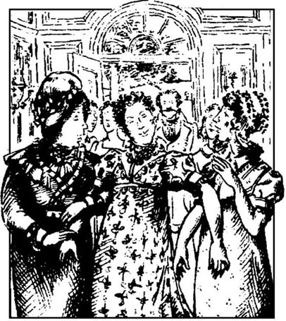
伊丽莎白在参观蓝白屯的第三天早上收到了两封简的来信。第一封因地址不清而投往别处，然后又转投过来。她舅父舅母都出去散步了，因此，她马上坐下来读信。第一封是五天前写的，不出所料，开头描述了浪搏恩的晚会和互访情况，但信的后半截所署的日期晚一天，显然是匆匆写成的，内容是：
亲爱的丽萃，上半封信写完之后，发生了一件出人意料、极其严重的事情。但我不想吓唬你，我们身体都很好。是关于丽迪亚的。昨天晚上，我们都已睡下，半夜时分福斯特先生给我们来了封急件，通知我们，她同一个军官，实际上就是韦翰，跑往苏格兰了！当然，在那里她可以不征得父母同意就结婚。想一想我们是多么吃惊。对他们两人来说，这是多么愚蠢的结合呀！不过至少他对她的钱财不感兴趣，因为他一定知道父亲几乎不会给她任何陪嫁。吉蒂承认，从丽迪亚的信中，她知道丽迪亚爱上了韦翰。可怜的母亲十分不安。我不得不就此搁笔，因为我不能把母亲丢下太久。我希望你能读到。我简直不知道自己写了些什么。
伊丽莎白来不及思考，便拆开了第二封信，这是又晚一天写的。她迫不及待地读了起来：
我最亲爱的妹妹，
我心乱如麻，书不成行。又是坏消息。虽然韦翰和可怜的丽迪亚结婚可能荒唐之极，但我们现在却急于听到他们完婚的消息。有理由担心，他们并没有去苏格兰。福斯特上校昨天到这儿来了。他告诉我们说，有一位军官，是韦翰的好友，他认为韦翰从来不曾打算去苏格兰，也不曾打算和丽迪亚结婚。上校跟踪两人一直到伦敦，但还没有看到他们离开伦敦。亲爱的丽萃，我们焦虑异常。父亲和母亲尽往坏处想，而上校担心韦翰是不可信赖之人，可是我无法相信他会如此奸诈。丽迪亚会不会没有半点羞耻之心，不举行结婚仪式就和那个人住在一起？不可能。现在可怜的妈妈真的病了，爸爸很生气，这也许是他有生以来第一次生气。他们痛斥吉蒂为他们的恋情保密之举。最亲爱的丽萃，我一方面为你感到高兴，因为你幸免于我们正在经历的混乱和担忧，另一方面，我不由得要求你们都尽快回家。父亲要和上校一起去伦敦找丽迪亚。我想，他由于过分不安，可能不会用最好最安全的办法达到预期目的，因此舅舅的建议和帮助将是最重要的。我拜托他了。
“噢！舅舅在哪儿，他在哪儿？”伊丽莎白叫道，跑到了门口。可是，她刚到门口，达西先生就进来了。她苍白的脸色和奇怪的举止让他没说出话来。她脑子中除了丽迪亚之外一片空白，她匆忙地说：“对不起，可我必须离开你。我必须马上找到嘉丁纳先生。一会儿都不能耽误。”
“天啊！怎么回事？”他叫了一声，又补充道，“让我，或者让仆人去找嘉丁纳夫妇。你不舒服，自己不能去。”
伊丽莎白迟疑了，可是她的腿在打战，她认识到他说得对。向仆人吩咐完后，她坐了下来，样子十分难看，达西先生不能离开她，也不能用柔声细语使她安静下来：“我叫人来照料你吧。来杯葡萄酒好吗？你病得很重。”
“不，谢谢，”她回答道，“我很好。不过是刚从浪搏恩得到的可怕消息使我感到不安。”她哭了起来，好一会儿说不出话来。达西难过地望着她，满心同情地保持着沉默。最后，她又说话了。“这件事谁也瞒不了。我最小的妹妹私奔了，跟——跟韦翰先生。你对他太了解了，清楚会发生什么事。妹妹没有钱，没有社会关系，她的一切都不会吸引他与她结婚。她永远回不来了。我本来可以防止这件事发生的！我知道他的人品多么坏。我要是早点把他的底细告诉家里就好了！一切都太晚了。”
达西吃惊地看着她。“我感到震惊，”他说，“而且难过，很难过。现在已经采取了什么措施去把她找回来？”
“我父亲已去了伦敦，我希望舅舅也去。我希望半小时后离开蓝白屯。可是我非常清楚，我们什么办法也没有。怎么能说服这样一个人呢？甚至，我们怎么找到他们呢？我一点希望都不抱。太可怕了！”
达西没有回答。他表情严肃，若有所思地踱来踱去。伊丽莎白不久就发现并明白了这表情的意思。她对他的吸引力正在减退。这一家庭道德缺陷的有力证据正在把他从她身边推开。她从来没有像现在这样真诚地感到，她可能早已爱上了他，像现在这样，但现在，两厢情愿似乎已是不可能的了。
但她不能总想自己的事，丽迪亚面临的形势是如此严峻。达西先生几乎马上就离开了，临走时，他很客气地说，鉴于这种情况，伊丽莎白及其舅父母将不能参加当天在彭伯里举行的晚宴了，他为此感到遗憾，并再次表示同情。嘉丁纳夫妇进屋以后，伊丽莎白急忙向他们解释了发生的一切，他们同意马上离开，一起返回浪搏恩，她这才长长舒了一口气。
他们以极快的速度打点好行装，一会儿就坐上了马车，向南驱车而去。
“丽萃，”嘉丁纳太太开口说，“我无法相信韦翰的人品会差到这种地步，竟然把丽迪亚拐走而又不与她结婚。你真的觉得他会做出那种事吗？”
“我亲爱的舅妈，我和简都知道这个人既不诚实又无信誉。他诬陷达西先生，还恶毒地编造有关达西全家的谎言。你们看到了，达西小姐多么腼腆、温柔，可他硬说人家傲慢、难以相处、目中无人。”
“可是丽迪亚对此一无所知吗？”
“噢，一点儿也不知道！这才是最糟糕的。我也是到肯特郡去过以后才知道事实真相的，我回来以后，和简讲了，我们俩决定不把我们了解的情况公开。现在我认识到我犯了一个错误。我从未想到过丽迪亚会受到他的威胁。”
到了浪搏恩后，伊丽莎白和舅母帮着简照看孩子们。她们也努力安慰班纳特太太，而她拒绝接受安慰，把酿成灾祸的过错都推到了别人身上，觉得就她一个人没错。
“要是允许我把孩子们都带到布赖顿就好了，也不至于会发生这种事。可怜的丽迪亚，没有一个人照顾她。那些福斯特上校们为什么不看紧她？他们肯定是没把她放在心上。当然，我不想让她去布赖顿，可是，没有人理我，就像平时那样。现在，班纳特先生也去伦敦了，他肯定会跟韦翰拼命的，然后会被人家活活打死，他尸骨未寒，柯林斯一家就会把我们赶出去！”
“不要担心，姐姐，”嘉丁纳先生温和地说，“我明天就去伦敦，帮我姐夫一把。”
“噢，谢谢你，好兄弟，”班纳特太太回答道，“你一定要找到丽迪亚和韦翰，要是他们还没有成婚，就强迫他们成婚。告诉丽迪亚，他们不必等结婚礼服，但是，结过婚以后，再想买衣服的话，要多少钱给她多少钱。别让班纳特先生拼命——告诉他我的状况多么糟糕，我病得很重，日夜合不了眼。告诉丽迪亚不见到我不要买衣服，因为她不知道哪儿有最好的商店。噢，好兄弟，你太善良了！我希望你会把一切都处理好。”
第二天，嘉丁纳就履行诺言，前往伦敦。现在，留在浪搏恩的人开始了痛苦难熬的等待时期。从麦里屯不断传来韦翰的消息：撒谎、欠债以及与镇上大多数年轻女仆之间的秘密恋情，这使他们更加焦虑。大家都说，他是世界上最邪恶的年轻人，并且宣称，他们一贯怀疑他的巨大魅力和堂堂仪表。虽然伊丽莎白认为这些传闻不能全信，但相信其中的一部分就足以使她认定妹妹的名声已经丧失殆尽，甚至简都不指望听到什么好消息了。
过了几天，他们收到嘉丁纳先生的来信，舒了口气，但不幸的是，信中只说韦翰和丽迪亚还没有找到。很显然，韦翰在布赖顿欠下了一千多英镑的赌债。班纳特先生第二天要回家，留下内弟在伦敦继续搜寻。班纳特太太听说丈夫要回来，并不像孩子们所期待的那样满意，而前几天她还在为丈夫的安全焦虑不安呢。
“什么？他没找到可怜的丽迪亚就回来了？”她嚷道，“那谁还会跟韦翰拼命，强迫他和丽迪亚成婚？”
嘉丁纳太太趁着班纳特先生回来，带着孩子们回到了伦敦。她还是希望知道伊丽莎白与达西的关系发展得怎么样了，但伊丽莎白一次都没提过他的名字，所以，舅母也不敢直接问。
班纳特先生回到家以后，看样子同以前一样平静，但在与伊丽莎白的谈话中，他承认自己对丽迪亚的私奔负有责任。
“我知道我应当多管管她，”他说，“丽萃，你说得对。我根本就不应该放她去布赖顿。”
吉蒂也在听，听罢她说：“爸爸，我要是去了布赖顿，会比丽迪亚规矩得多。”
“你去布赖顿！”她爸爸高声叫道，“离那个地方还有20公里我都不放心，哪怕给我50英镑的押金！不，吉蒂，我终于学会了小心谨慎，你会有新体会的。任何军官以后别想再进这个家门，甚至别想从村里通过。一切舞会全部禁止，除非你与姐姐们跳舞。”
吉蒂当真了，哭了起来。
“好啦，好啦，”他说，“别不高兴了。如果你未来十年规规矩矩，十年结束后我会带你去看戏的。”
两天以后，他们都在热切期待的消息来了。嘉丁纳先生的信告诉他们，韦翰和丽迪亚已经找到，但他们还未成婚。但是，已与韦翰达成了某种财务方面的安排。请班纳特先生每年支付丽迪亚一百英镑，并安排她在父母下世后平等地参与继承留给班纳特家女儿的五千英镑。如果答应这些合理的条件，韦翰便答应娶丽迪亚为妻。
开始时，伊丽莎白和简都很高兴，认为妹妹的名声可以通过婚姻得以保全，哪怕是嫁给韦翰这样一位男人。可是，接着父亲解释说，除非已经付给了韦翰一大笔钱，否则他是决不会同意娶丽迪亚的。她们开始担心，要偿还嘉丁纳先生预付的这笔钱，可能会有困难。嘉丁纳先生一定是以这种方式贿赂了韦翰。但是，班纳特太太并没有这种担忧。
“他是当舅舅的嘛！”她高兴地叫道，“为什么不该出点钱？我亲爱的丽迪亚！16岁就结婚！我多么盼望见到她呀！还有亲爱的韦翰！可是结婚礼服呢？我马上给她舅妈写封信！我太幸福了！这么短的时间，就嫁出一个女儿。韦翰太太！听起来多顺耳呀！”
既然丽迪亚要结婚了，伊丽莎白便十分后悔告诉了达西自己对妹妹的担忧。但是，即使丽迪亚以最体面的方式结婚，达西先生也极不可能愿意把自己同一个与韦翰有密切关系的家庭联系起来，因为韦翰是他最讨厌的人，当然他也理应遭到讨厌。她不能再指望他向她献殷勤，像他们在德比郡相遇时她肯定地感觉到的那样了。可是，现在既然她肯定他不可能再爱她了，她反而确信，倘若他们在一起，可能会很幸福。他配她似乎正好合适，他们可以相互积极地影响。她善于社交，可以帮助他软化思想，改善态度；他更长于判断，还有丰富的知识，可以使她从中受益。但这种关系已不复存在，他们再不能为仰慕他们的世人做出榜样，让他们看看幸福的婚姻到底是什么样子了。相反，韦翰要和丽迪亚结婚了，这给他们两人几乎都带不来一点幸福的机会。
嘉丁纳夫妇已安排好丽迪亚在伦敦不声张地悄悄结婚，就从他们家出嫁。开头时，班纳特先生曾拒绝让小女儿再踏进这个家门，但最后，简和伊丽莎白说服了他婚礼过后允许丽迪亚和他丈夫过来。探亲时间将会很短，因为她和韦翰几乎立刻就要到北方的纽卡斯尔去，在那里，他接受了一个新的军职。
当载着一对新人的马车到达浪搏恩府时，班纳特姐妹中两个大的对丽迪亚的厚颜无耻感到震惊。她进了屋子，又是笑又是逗乐，还要所有的姐姐向她道喜。韦翰也比她好不到哪儿去，跟每个人说话都还是往常那种阿谀奉承、随随便便的方式。他们对于自己的无耻和行为不端所引起的焦虑似乎根本没有意识到。
伊丽莎白对他们那种轻松、自信的形象深恶痛绝，因此，当丽迪亚执意要描述结婚当天的每个细节时，她下决心不露出任何兴趣。但是，丽迪亚不小心说出达西先生的名字时，她禁不住作出吃惊的反应。他显然参加了婚礼。伊丽莎白感到奇怪，达西先生为什么会参加这两位他理应最为鄙夷的人的婚礼？她从丽迪亚那里发现不了原因，因为丽迪亚突然想起这事应当保密；伊丽莎白不明白真相又寝食不安，于是便匆忙给伦敦的舅妈写了封信，请求迅速作出解释。
11 Bingley returns to Netherfield
11
Bingley returns to Netherfield
Elizabeth had the satisfaction of receiving a reply from her aunt in the shortest time possible. She sat down eagerly to read it.
My dear niece,
I must confess I am astonished by your request for information about Mr Darcy's share in arranging Lydia's marriage. I assumed that you would know all about it. Your uncle is as surprised as I am. But if you are really innocent and ignorant, I must tell you all the details. On the day I returned to London from Longbourn, your uncle had a most unexpected visitor. Mr Darcy came to tell us he had discovered where your sister and Wickham were staying. The reason he gave for wanting to help was his belief that he was to blame for not making Wickham's worthlessness more public, and that therefore it was his duty to assist us in every possible way. If he had another motive, I am sure it would be just as honourable. He knew that Wickham had a close friend in London, a woman who had once been companion to Miss Darcy, and had been dismissed for some reason. So Mr Darcy found this woman, and bribed her to give him Wickham's present address. He went to see Wickham, and insisted on seeing Lydia, hoping to persuade her to return to her family. However, Lydia told him she only cared for Wickham, and had no intention of leaving him, whether he married her or not. Wickham privately told Mr Darcy that he had left the regiment because of his gambling debts, not because he intended to marry Lydia, and that he was still hoping to find and marry a woman of fortune in order to have a comfortable income. It was clearly necessary to persuade him to marry Lydia as soon as possible, and Mr Darcy had several meetings with Wickham to arrange financial matters with him. Finally, Mr Darcy was able to visit your uncle, as I have said, to explain the whole business, and to insist that he alone should be responsible for paying Wickham the promised amount. Your uncle argued with him for a long time, but our visitor was so obstinate that Mr Gardiner eventually had to agree. I think, Lizzy, that obstinacy is Mr Darcy's real fault, rather than any of the other faults of which he has been accused. He paid Wickham several thousand pounds, for past debts and future expenses, and attended the wedding to make a final payment. And in spite of Mr Darcy's declared motives, my dear Lizzy, you may be sure that your uncle would never have given in, if we had not assumed that Mr Darcy had another interest in the matter. Will you be very angry with me, my dear Lizzy, if I take this opportunity of saying how much I like him? His behaviour to us has always been as agreeable as when we were in Derbyshire. I think that if he marries the right woman, his wife may teach him to become more sociable. Please forgive me if I have assumed too much, or at least do not punish me by not inviting me to Pemberley. I shall never be happy until I have been all the way round the park.
But I must go to my children now.
Yours very sincerely,
M. Gardiner
Elizabeth read this letter with a mixture of pleasure and pain. Mr Darcy had thought so little of his pride that he had spent considerable time, effort and money on two people for whom he must feel the greatest disdain. He had even had to bargain with Wickham! She could not believe he had done all this for her, a woman who had already rejected him. But the fact remained that she and her family owed him everything. How bitterly she now regretted criticizing and mocking him in the past! She was ashamed of herself, but she was proud of him, proud that in a matter of honour, he had been able to conquer his own pride. She was even rather pleased, if a little regretful, that her aunt and uncle had felt sure that there was mutual affection between Mr Darcy and herself.
Mrs Bennet was quite depressed when Lydia and Wickham left Longbourn to travel north to Newcastle. But soon Mrs Philips brought the happy news that Mr Bingley was expected to return to Netherfield in a day or two, and Mrs Bennet became very excited. She made preparations to invite him to dinner, and counted the days that must pass before she could send the invitation.
However, on only the third morning after his arrival, she caught sight of him from her bedroom window, riding towards Longbourn House, with another gentleman, also on horseback.
'Girls! Quickly!' she cried. 'Mr Bingley is coming! And who's that with him? It must be Mr Darcy, that tall, proud man. Well, as he is Mr Bingley's friend, we must be polite to him, but I must say, I hate the sight of him.'
Both Jane and Elizabeth felt uncomfortable, and sympathized with each other. Jane was nervous about meeting Bingley again, and determined not to show her feelings. Elizabeth was uneasy at the thought of seeing Darcy, as she was the only one who knew how much the whole family owed him, in spite of their general dislike of him. She was astonished that he had come to see her, and for a moment she allowed herself to hope that his affection and wishes might still be the same.
She was disappointed, however, by the visit. Mr Darcy said scarcely anything to her, and appeared more thoughtful and less anxious to please than in Derbyshire. She wondered bitterly why he had come. In addition, she was highly embarrassed by her mother's behaviour. With flattering smiles Mrs Bennet concentrated all her conversation on Mr Bingley, while throwing the occasional unpleasant remark in Mr Darcy's direction. The only positive effect of the gentlemen's visit was the way in which Jane's charm and beauty appeared to excite Mr Bingley's admiration all over again, which Elizabeth was relieved and delighted to see.
The Bennet family did not see the two gentlemen again until Tuesday, when they came to dinner at Longbourn. It was a great pleasure to Elizabeth to watch Bingley sitting beside Jane, and talking happily to her, but this was the only enjoyment she gained from the party. Mr Darcy was unfortunately sitting a long way from her, next to Mrs Bennet. Elizabeth could see how seldom they spoke to each other, and how cold and formal their behaviour to each other was. She would have given anything to be able to tell him that his kindness was appreciated by at least one of the family. All through the long dinner, she desperately hoped there would be an opportunity for her to have some real conversation with him later. But the evening passed without any more than a short exchange of politeness between them, and Elizabeth lost all hope of immediate happiness.
Two days after this, Mr Bingley called at Longbourn House again. This time he was alone, as Mr Darcy had gone to London. He sat with the ladies for over an hour, talking cheerfully and agreeably to them. He came the next morning, and again in the evening. Mrs Bennet took every opportunity to leave him alone with Jane, by calling her other daughters out of the room for some reason or other. She was hoping to encourage him to propose, but in spite of her efforts Bingley remained charming, and agreeable, and unattached.
But on the third day Bingley came in the morning to go shooting with Mr Bennet. He stayed for lunch, and was still there in the evening. And when Elizabeth entered the sitting room unexpectedly, to her surprise she saw Jane and Bingley standing close together near the fire. They turned hurriedly when they heard her, and moved awkwardly away from each other. Bingley whispered something to Jane, and ran out of the room. Jane could not keep her secret from her sister, and, kissing her, cried, 'I am the happiest creature in the world! Oh, Lizzy! I do not deserve this! Why isn't everybody as happy as I am!'
Elizabeth congratulated her sister most warmly and sincerely. 'At last!' she thought. 'The end of all Mr Darcy's anxious advice! The end of all Caroline Bingley's lies and plans! The happiest, wisest, most reasonable end!'
'I must go and tell my mother,' continued Jane, 'as he has just gone to ask my father's permission. Oh, Lizzy! What happiness!'
It was a joyful evening for all of them. Jane looked more beautiful than ever, and Bingley was clearly very much in love. Mrs Bennet could not say enough to describe her delight, although she talked of nothing else all evening, and Mr Bennet was evidently very pleased.
Before the two eldest sisters went to bed that night, Elizabeth listened willingly to Jane's long description of Bingley's good qualities. At the end, Jane added, 'Oh, Lizzy! If only I could see you as happy as I am! If only there were another man like Bingley for you!'
'Dear Jane, I can never be as happy as you, because I'm not as good as you. No, no, let me find my own husband. Perhaps, if I'm very lucky, I may meet another Mr Collins one day.'
The engagement was not kept a secret for very long. Mrs Bennet whispered the news to Mrs Philips, who told all her neighbours in Meryton. Everybody soon agreed that the Bennets were the luckiest family in the world, although only a few weeks before, when Lydia had run away, they had been considered the most unfortunate.
innocent adj. foolishly simple. 无知的；无辜的。
assist v. help. 帮助。
dismiss v. allow to go. 解散。
argue v. disagree in words; fight with words; quarrel. 争吵；争论。
expense n. cost. 花费。
final adj. coming at the end. 最后的。
punish v. cause pain or discomfort to somebody. 惩罚；处罚。
mixture n. mixing or being mixed. 混合。
owe v. debt to. 欠。
catch sight of see for a short time. 一瞥。
scarcely adv. almost not. 几乎不；几乎没有。
gain v. obtain. 获得。
desperately adv. ready for any wild act because of loss of hope. 不顾一切地；拼命地。
exchange n. the act or action of exchanging. 交换。
creature n. living person. 人。
quality n. goodness or worth. 品质。
engagement n. agreement to marry. 婚约。
彬格莱重返尼日斐
11 彬格莱重返尼日斐
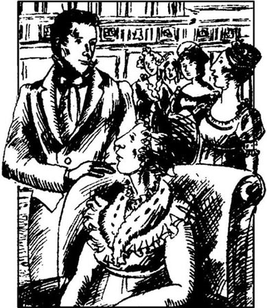
伊丽莎白在最短的时间里收到了舅母的回信，十分高兴，急切地坐下来读信：
亲爱的外甥女：
你请求解释达西先生参与安排丽迪亚结婚一事，我感到十分诧异。我还以为你全都知道。你舅舅也与我一样感到奇怪。但是，如果你真的一无所知，我必须把详情告诉你。我从浪搏恩回到伦敦那天，你舅舅遇到了一位不速之客。达西先生来了，他告诉我们他发现了你妹妹和韦翰待的地方。据他说，他之所以想帮助我们，是因为他认为没有把韦翰的道德败坏当众揭穿是他的过错，这样，他就有义务尽一切可能帮助我们。如果他是另有所图，我相信，动机也会同样可贵。他知道韦翰在伦敦有一位要好的女友，她以前做过达西小姐的女伴，后来由于某种原因被解雇了。于是，达西先生找到了这个女人，贿赂她说出了韦翰目前的住址。他找到了韦翰，并坚持要见丽迪亚，希望说服她回到家里。但是，丽迪亚告诉他她只爱韦翰，并不打算离开他，不管他娶不娶她。韦翰私下里告诉达西先生，他离开兵团是为了逃避赌债，并不是想跟丽迪亚结婚，他现在仍然希望找一位有财产的女人结婚，以便获得舒适的收入。形势很明朗，有必要说服他尽快和丽迪亚结婚，于是达西先生与韦翰数次碰面，与他安排财务问题。最后，像我刚说过的那样，达西先生才得以来访你舅舅，解释全部经过，并坚持完全由他自己负责支付许诺给韦翰的所有款项。你舅舅与他争执了半天，但是我们的客人非常固执，嘉丁纳先生最后不得不同意。丽萃，我认为固执是达西先生的真正缺点，他受到指责的其他缺点都算不上。他支付给韦翰几千英镑，用于还清旧债，应付未来开销，并参加了婚礼，最后将钱款付清。亲爱的丽萃，尽管达西先生公开说明了一些原因，但是，你可以肯定，如果我们不是觉得他别有用心，你舅舅是绝不会让步的。亲爱的丽萃，如果我借此机会说我非常喜欢他，你不会生我的气吧？他对我们一直像在德比郡那样和气。我想，如果他娶到一个合适的女人，他妻子可能会教他如何更好地交际。如果我猜测得太过分，那么请你原谅，至少不要以将来不让我去彭伯里罚我。我不把庄园逛完，是不会感到高兴的。
我现在必须回到孩子们身边了。
M·嘉丁纳 谨启
伊丽莎白读着这封信，心里既高兴又痛苦。达西先生全然不顾自尊，在两个他最为鄙视的人身上花了那么多时间、精力和金钱。他甚至还得跟韦翰讨价还价！她难以相信他这一切都是为了她，一个拒绝过他的求婚的女人。但事实仍然是，她和她的家庭应为拥有的一切感激他。她想起以前批评他、嘲笑他，后悔得痛心疾首。她为自己感到羞愧，但为他感到骄傲，骄傲的是，在荣誉上，他战胜了自己的傲慢。她甚至相当高兴（虽然带点后悔），她舅母舅父肯定地感受到了达西先生和她相爱。
丽迪亚和韦翰离开浪搏恩北上纽卡斯尔，这使班纳特太太相当丧气。但不久菲力普斯太太带来了好消息，说彬格莱先生可望于一两天内返回尼日斐，班纳特太太激动万分。她开始为邀请他吃饭作准备，并且盘算着再过几天就可以发送请帖了。
但是，就在彬格莱到达后的第三天上午，她就从卧室的窗户中看到了他骑着马向浪搏恩府走来，同行的还有一位先生，也骑着马。
“姑娘们！快点儿！”她喊道，“彬格莱先生来了！跟他一起来的是谁？一定是达西先生，那个高个子、傲慢的人。哎呀，他既然是彬格莱先生的朋友，我们也要客气点儿，可是，我得承认，我不喜欢见到他。”
简和伊丽莎白都感到很不自在，两人同病相怜。又要见到彬格莱，简感到惴惴不安，决心不表露自己的感情。伊丽莎白一想到要见达西了，就感到很尴尬，因为就她一个人知道全家欠人家多少情，尽管大家都讨厌人家。他来看她，使她很惊奇，有那么一会儿，她大胆地希望他仍旧未改初衷。
但是，这次来访使她大失所望。达西先生几乎没跟她说什么，比起在德比郡来，显得更加深沉而不是急于取悦人。他为什么要来，她大惑不解。另外，她妈妈的举动使她极为难堪。班纳特太太带着奉承的微笑集中精力和彬格莱先生谈话，偶尔也冲达西先生说一句难听的话。两位先生来访的唯一积极效果是简的妩媚动人似乎重新唤起了彬格莱先生的爱慕，伊丽莎白看了深感慰藉和喜悦。
到了星期二，班纳特全家再次见到两位先生，他们是来浪搏恩赴宴的。看到彬格莱在简旁边坐下，愉快地同她交谈，伊丽莎白感受到极大的乐趣，但这也是她在晚会上得到的唯一乐趣。达西先生不巧坐得离她很远，挨着班纳特太太。伊丽莎白看得出他们彼此说话说得多么少，互相间又多么冷淡与客气。她多么希望能够告诉他，全家至少还有一个人懂得他的善意。在漫长的晚饭期间，她拼命地希望能得到一个机会与他真正谈谈。但是，整个夜晚过去了，除了简短的客套以外，他们什么也没有说，伊丽莎白断绝了一切立刻获得幸福的希望。
过了两天，彬格莱又来到浪搏恩府，这次是一个人，达西先生到伦敦去了。他和小姐们坐了一个多小时，兴高采烈、十分随和地与她们聊天。他第二天上午来了，晚上又来了。班纳特太太不错过每一个机会把他和简单独留下，借故将别的女儿叫出房间。她希望鼓励他求婚，但是，尽管她作了种种努力，彬格莱还是那样爱说爱笑，招人喜欢，不偏不倚。
但是，第三天彬格莱先生过来与班纳特先生一块去打猎。他留下吃了午饭，晚上还在那里。当伊丽莎白无意中来到起居室时，惊奇地发现简和彬格莱在火炉旁站着，挨得很近。他们听到她的声音，慌忙转身，尴尬地分开了。彬格莱对简小声说了句什么，便跑出了房间。简忍不住把秘密告诉了妹妹，吻了她一下，大声叫道：“我是世界上最幸福的人！噢，丽萃，我不配！大家都像我一样幸福就好了！”
伊丽莎白向姐姐表示最热烈、最诚挚的祝贺。“谢天谢地！”她心里想。“结束了，达西先生急切的劝告！结束了，卡罗琳·彬格莱的谎言和阴谋！最幸福、最明智、最合理的结局！”
“我得过去告诉妈妈，”简继续说，“因为他刚去请爸爸恩准。噢，丽萃！多么幸福啊！”
这天晚上所有的人都欢天喜地。简显得空前漂亮，彬格莱显然已坠入情网。班纳特太太的喜悦之情溢于言表，说也说不够，虽然她整个晚上别的什么也没说。班纳特先生显然也很高兴。
那天夜里休息之前，伊丽莎白很乐意地听了简对彬格莱优良品质的长篇描述。最后，简补充说，“噢，丽萃！我要是能看到你跟我一样幸福就好了！要是再有一个像彬格莱那样的人给你就好了！”
“亲爱的简，我永远不会像你那样幸福，因为我不如你。不，不，我要找到我自己的丈夫，也许，要是我运气好，有一天也许能再碰上一个柯林斯先生。”
订婚一事没有保密很长时间。班纳特太太将这个消息悄悄地对菲力普斯太太说了，菲力普斯太太又透露给麦里屯的所有邻居。大家立即达成共识，说班纳特一家是世上最幸运的家庭，尽管仅仅在几个礼拜以前丽迪亚出走的时候，他们还被视为最不走运的。
12 Elizabeth and Darcy
12
Elizabeth and Darcy
One morning, about a week after Bingley had proposed to Jane, a carriage arrived outside Longbourn House. Elizabeth, Kitty and their mother were in the sitting-room, when suddenly the door was thrown open, and their visitor entered. It was Lady Catherine de Bourgh.
They were all extremely astonished. Mrs Bennet, flattered to have such an important visitor, received her with great politeness. After sitting for a moment in silence, Lady Catherine said very stiffly to Elizabeth, 'I hope you are well, Miss Bennet. That lady, I suppose, is your mother. And that, I suppose, is one of your sisters.'
Elizabeth replied that she was correct in thinking so. Lady Catherine rose and said, 'I would like to have a walk in your garden, Miss Bennet, if you would accompany me.'
'Go, my dear,' cried Mrs Bennet. 'Show her ladyship the different walks. I'm sure she will like them.'
As they passed through the hall, Lady Catherine opened the doors into the different rooms, looked in, and declared them to be reasonable-looking rooms. They went into the garden in silence. Elizabeth was determined to make no effort at conversation with a woman who was being more than usually rude and disagreeable.
Lady Catherine began speaking when she was sure they were alone. 'You must know, Miss Bennet, why I have come.'
Elizabeth looked surprised. 'Indeed, you are mistaken, madam. I have no idea why you are honouring us with a visit.'
'Miss Bennet,' replied her ladyship angrily, 'however in sincere you may be, you shall not find me so. A most alarming report reached me two days ago. I was told that you, Miss Elizabeth Bennet, would soon be engaged to my nephew, my own nephew, Mr Darcy. Although I knew it must be a shameful lie, and I would not offend him by supposing it to be possible, I decided at once to come here, to let you know my feelings.'
'If you believed it to be impossible,' said Elizabeth, with disdain, 'I wonder why your ladyship took the trouble of coming so far.'
'I came to insist on having this report contradicted. Tell me, is it true?'
'Your ladyship may ask questions which I shall not choose to answer.'
'This is too much! Miss Bennet, I insist on an answer. Has my nephew made you an offer of marriage?'
'Your ladyship has declared it to be impossible.'
'It ought to be impossible, but your skilful charms may have made him forget, in a moment of foolishness, what he owes to himself and his family. You must tell me. I am almost his nearest relation, and I have a right to know his plans.'
'But you have no right to know mine.'
'Let me speak plainly. This marriage, which you dare to hope for, can never take place, because Mr Darcy is engaged to my daughter. His mother and I planned their marriage, when they were still children. They are an ideal couple, both from respectable, honourable, ancient families, with an excellent fortune on both sides. What can possibly divide them? The desperate ambitions of a young woman without family, connections or fortune? It cannot be! And I warn you, Miss Bennet, if you marry him, do not expect to be noticed by his family or friends. Your name will never even be mentioned by any of us.'
'These are heavy misfortunes, but the wife of Mr Darcy must necessarily be so happy that she could not regret her marriage.'
'Obstinate girl! Tell me, are you engaged to him?'
Elizabeth could not avoid saying, after a moment's thought, 'I am not.'
Lady Catherine seemed pleased. 'And will you promise me never to enter into such an engagement?'
'I will make no such promise. You have totally misunderstood my character if you think I can be persuaded by such threats. I do not know whether your nephew would approve of your interference in his life, but you certainly have no right to interfere in mine.'
'To all the objections I have mentioned, I add one more. I am aware of your younger sister's elopement. Is such a girl to be my nephew's sister-in-law, and bring shame on the ancient name of Darcy?'
'You can now have nothing more to say,' Elizabeth said coldly. 'You have insulted me in every possible way.' She rose, and started walking back to the house. Lady Catherine also rose, and walked with her.
'Unfeeling, selfish girl! So you are determined to have him?'
'I have not said that. I am only determined to do what in my opinion will bring me happiness, without reference to you.'
'Do not imagine, Miss Bennet, that you will ever achieve your ambition.' When they arrived at her carriage, she added, 'I send no compliments to your mother. You do not deserve such politeness. I am most seriously displeased.'
Elizabeth did not answer, and entered the house, while Lady Catherine drove away in her carriage. She had to tell a little lie to her mother to explain Lady Catherine's unexpected visit and speedy departure, and then she shut herself in her room to consider what it all meant. Perhaps the Collinses had imagined, after the news of Jane's engagement to Bingley, that Darcy might marry her. They must have told Lady Catherine, who had made a special journey to Longbourn in order to break off this supposed engagement. Elizabeth began to feel depressed. If, as seemed likely, Lady Catherine now went straight to London to talk to her nephew, she might easily convince him of the inferiority of Elizabeth's social position. He would probably feel that his aunt's objections, which to Elizabeth appeared laughably weak, contained much common sense. In that case he might make up his mind not to marry her under any circumstances, and to keep away from Longbourn altogether.
The next morning Mr Bennet called Elizabeth into the library. In his hand he had a letter, which he had just received.
'Lizzy, I did not know I had two daughters about to be married. I congratulate you on a very important conquest.'
Elizabeth blushed, thinking that Darcy himself had written.
'You seem to know what I mean, but I think even you will not be able to guess your admirer's name. This letter is from Mr Collins, and he first congratulates me on Jane's engagement, of which the gossiping Lucases have told him. Apparently the Lucases also think that my daughter Elizabeth might soon be marrying one of the great gentlemen in the country—Mr Darcy, in fact! Now, Lizzy, I think I have surprised you. Could he have chosen anyone we know as a more unlikely husband for you? Mr Darcy, who never praises, only criticizes women, and who probably never looked at you in his life! What an admirable choice!'
Elizabeth tried to share her father's amusement, but had never appreciated his humour so little.
'He goes on to say that when he dutifully gave this news to her ladyship, she made many objections, and stated that she would never agree to the marriage. He kindly gives us this information, he says, to prevent his cousin Elizabeth and her admirer from rushing into a marriage not approved by their families. Well, Lizzy! What do you think of that? I do enjoy Mr Collins' letters. And I am delighted the Lucases thought of Mr Darcy. His perfect indifference to you, and your strong dislike of him, make it so extremely amusing. Don't you agree?'
Elizabeth had great difficulty in pretending to be amused by the letter. It was necessary to laugh, when she would rather have cried. Her father had most cruelly hurt her by speaking of Darcy's indifference, and she began to wonder whether perhaps, instead of his seeing too little, she might have imagined too much.
In spite of Elizabeth's doubts, however, Mr Darcy returned to Netherfield a few days later, and he and Mr Bingley came to Longbourn soon afterwards. Bingley suggested they should all go for a walk, and while he and Jane concentrated on their own private conversation, some distance away, Elizabeth found herself alone with Mr Darcy.
Taking a deep breath, she said bravely, 'Mr Darcy, I can no longer stop myself from thanking you for your extraordinary kindness to my poor sister. If the rest of my family knew of it, they would add their grateful thanks to mine.'
'I had hoped to keep it a secret,' he answered, 'but if you must thank me, let it be for yourself alone. I shall not attempt to deny that wishing to give happiness to you was one of my reasons for helping your sister. But your family owe me nothing. Much as I respect them, I believe I thought only of you.'
Elizabeth was too embarrassed to say a word. After a short pause he added, 'You are too generous to play with my feelings. If you still feel as you did last April, tell me so at once. My affections and wishes are unchanged, but one word from you will prevent me from ever mentioning them again.'
Elizabeth forced herself to speak, and immediately, though hesitatingly, gave him to understand that her feelings had changed so considerably since that time that she was now grateful and pleased to accept his proposal. When Darcy heard this, he was probably happier than he had ever been before, and he expressed himself as warmly and sensibly as a man violently in love can.
They walked on, without noticing in which direction. There was so much to be thought, and felt, and said. She soon learnt that his aunt had indeed seen him in London, after her disappointing visit to Longbourn. But unluckily for her ladyship, her critical comments and description of her conversation with Elizabeth produced exactly the opposite result to what she had intended.
'It taught me to hope,' Darcy explained, 'as I had hardly ever allowed myself to hope before. I knew that if you had decided never to marry me, you would have admitted it to Lady Catherine openly and honestly.'
Elizabeth blushed and laughed as she replied, 'Yes, you have experienced my honesty. After scolding you so rudely to your face, I was obviously quite capable of criticizing you to all your relations.'
'I certainly deserved all your accusations. As an only son, I was brought up to be selfish and proud, and to consider myself superior to others. I would have continued like that if you, dearest, loveliest Elizabeth, had not taught me a lesson. I owe you a great deal for that.'
'And I, how soon I thought better of you, when I read the letter you sent me! When I realized your description of events must be true, all my prejudices against you were removed! '
They talked of their unexpected meeting at Pemberley, which had renewed their interest in each other, of Georgiana Darcy's immediate liking for Elizabeth, and of the engagement between Jane and Bingley.
'I guessed,' smiled Elizabeth, 'that you had given your permission for their marriage.'
'My permission! No! But I must admit I confessed to Bingley that I had made a mistake in supposing that your sister was indifferent to him, and I encouraged him to return to Netherfield to see if she still cared for him. I am delighted to hear of their engagement. He will be one of the happiest men in the world when he marries your sister. Only I shall be happier than him, when I am fortunate enough to marry you.'
Their conversation continued in this way, until they suddenly became aware of the lateness of the hour. They returned to Longbourn House, where they separated.
That evening Elizabeth could not help telling Jane her news. However, she almost regretted doing so, when she saw the astonishment on Jane's face. At first Jane could not believe that her sister was engaged to a man she had so disliked, and she wondered if Elizabeth could really be happy with him. But when she had been convinced by Elizabeth's explanations and promises, she was delighted, and congratulated her sister with all her heart.
The next day Mr Darcy came to ask Mr Bennet officially for Elizabeth's hand in marriage. Mr Bennet also had to be persuaded that his favourite daughter could really be happy with such a proud, disdainful man. Only Mrs Bennet did not need to be convinced, although she was, most unusually, speechless with shock when she heard the news. When she recovered a little, she cried, 'My sweetest Lizzy! How rich you will be! What jewels, what carriages you will have! Mr Darcy! Such a charming man! So handsome! So tall! I am so sorry I disliked him before. Ten thousand a year! Oh, my dear Lizzy!'
During the weeks of her engagement, Elizabeth was glad to see that all her family were beginning to appreciate Mr Darcy's good qualities. Determined to protect him from her mother's over-familiarity, she was relieved to see that Mrs Bennet respected her future son-in-law too much to say more than a few words to him. In spite of this, Elizabeth looked happily forward to the time when she and Darcy would leave Longbourn and move to all the comfort and elegance of their own home at Pemberley.
Mrs Bennet was a happy mother indeed on the day when she got rid of her two most deserving daughters. It may be guessed with what delighted pride she afterwards visited Mrs Bingley and talked of Mrs Darcy. Mr Bennet missed his second daughter very much, and greatly enjoyed going to Pemberley to visit her.
Mr Bingley and Jane stayed only a year at Netherfield, before buying a large house in the north, only fifty kilometres from Pemberley. In this way, the two sisters were permitted their dearest wish, and were able to visit each other frequently. Mary was the only sister who remained at home, as Kitty spent most of her time with her two elder sisters, which greatly improved her behaviour, character and intelligence.
Lydia and Wickham were always moving from one place to another in search of cheap rooms, and always spending more than they should. His affection for her soon became indifference, while hers for him lasted a little longer. They were not too proud to ask Lydia's sisters for financial help during every crisis, and Elizabeth and Jane both sent them regular gifts of money to pay their bills.
Caroline Bingley was deeply offended by Darcy's marriage, but she did not show her bitterness, and was always extremely polite to Elizabeth. Georgiana Darcy, on the other hand, became greatly attached to Elizabeth, and had the highest opinion of her. Lady Catherine, however, was so rude about Elizabeth to her nephew that he broke off communication completely with her for a time. In the end Elizabeth persuaded him to forgive his aunt, who eventually forgot her pride enough to visit them at Pemberley.
There remained a close relationship between the Darcys and the Gardiners. Darcy and Elizabeth were both warmly grateful to the two people who, by inviting her to Derbyshire and taking her to visit Pemberley, had brought them together.
correct adj. true; right. 对的；正确的。
rude adj. impolite. 粗野的。
reasonable adj. sensible. 合乎情理的。
report n. an account or description of events, experiences, etc. 报告。
shameful adj. deserving blame; which one ought to be ashamed of. 可耻的。
skilful adj. having or showing skill. 熟练的。
plainly adv. easy to see, hear or understand. 清楚地。
ideal adj. 完美的。
ambition n. strong desire for success, power, riches, etc. 野心；抱负。
elopement n. run away from home secretly, usually with the intention of getting married. 私奔。
ancient adj. belonging to times long past. 古代的。
achieve v. complete. 完成。
speedy adj. quick. 快的。
laughably adv. amusingly. 有趣地。
contain v. have or hold within itself. 含有。
ladyship n. 小姐；夫人。
cruelly adv. liking to cause pain or suffering. 无情地。
doubt n. uncertainty of mind. 怀疑。
deny v. say that something is not true. 否认。
indeed adv. really. 的确。
produce v. cause; have as a result or effect. 引起；导致。
openly adv. publicly. 公开地。
superior adj. better than. 优越的。
a great deal quite a lot. 大量的。
remove v. get rid of. 排除。
cannot help 忍不住。
officially adv. in an official manner. 正式地。
jewel n. precious stone. 宝石。
cheap adj. low in price. 便宜的。
crisis n. moment of great danger or difficulty. 危机。
bill n. statement of charges for goods delivered. 账单。
伊丽莎白和达西
12 伊丽莎白和达西
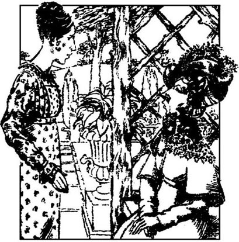
一天上午，大约在彬格莱向简求婚后一周，一辆马车来到了浪搏恩府外。伊丽莎白、吉蒂和母亲正在起居室待着，突然门被撞开了，客人闯了进来。是凯瑟琳·德·包尔夫人。
她们都极端惊讶。班纳特太太因为来了这样重要的客人而受宠若惊，赶紧非常客气地接待她。干坐了一会儿之后，凯瑟琳夫人很傲气地对伊丽莎白说：“我希望你还好，班纳特小姐。那位夫人我想是你母亲吧。那位我想是你妹妹吧。”
伊丽莎白回答说她说得对。凯瑟琳夫人站起来说：“班纳特小姐，如果你愿意陪我，我想到你家花园走走。”
“去呀，亲爱的，”班纳特太太嚷道，“让夫人看看不同的小路。我想她肯定会喜欢的。”
她们穿过大厅时，凯瑟琳夫人打开各个房间的门，往里看，称这些房间还算可以。她们沉默不语地走进花园。伊丽莎白觉得这个女人比往常更无礼傲慢，令人讨厌，于是拿定主意，不先开口跟她说话。
凯瑟琳夫人确信没有别人以后，便开始说话。“班纳特小姐，你一定知道我的来意。
伊丽莎白很奇怪。“夫人，您肯定弄错了。我根本不知道您为什么肯赏脸光临。”
“班纳特小姐，”夫人怒气冲冲地说，“不管你有多么虚情假意，我可不是那种人。两天前听到的消息让我非常震惊。我听说，你，伊丽莎白·班纳特小姐，不久将与我的外我的亲外甥，达西先生订婚。虽然我知道这是无稽之谈，虽然我把这事当真也伤不了达西的感情，但我还是决定马上到这里来，让你知道我的想法。”
“如果您认为那是不可能的，”伊丽莎白说道，带点鄙视，“我不明白夫人为什么要自找麻烦，跑这么远过来？”
“我到这里是要你把这条消息更正过来。告诉我，是真的吗？”
“您老尽可以问，但我可以拒绝回答。”
“太过分了！班纳特小姐，你必须回答。我外甥向你求婚了没有？”
“您老刚说过那是不可能的。”
“应该是不可能的，但是你蛊惑人心的手段高强，可能使他一时头脑发昏，忘记了自己的身份和门第。你必须告诉我。我几乎是他的至亲，我有权知道他的打算。”
“但是您无权知道我的打算。”
“我说得明白点。你竟然敢指望这桩婚事，可是它永远成不了，因为达西和我的女儿订婚了。他们小的时候，他母亲和我就帮他们订好了。他们俩门当户对，是天生的一对。他们都出身于名门望族，家史悠久，家财万贯。有什么可能把他们拆开？就靠一个没有门第、没有亲戚、没有家产的年轻女子的胆大妄为？根本不可能！班纳特小姐，我警告你，如果你跟他结婚，他的家庭和朋友绝不会理你！我们大家永远不会提你的名字！”
“这真是天大的不幸，但是达西先生的妻子一定会非常幸福，无法对自己的婚姻感到后悔。”
“犟丫头！告诉我，你们订婚了没有？”
伊丽莎白无法再避而不答了，思索了一会儿，说：“没有。”
凯瑟琳夫人似乎很高兴。“你能不能保证决不和他订婚？”
“我不会作这样的保证。如果您认为我会屈服于威胁的话，那您就完全看错我的性格了。我不知道您外甥是否会同意您干涉他的生活，但是您绝对没有权力干涉我的生活。”
“除了我刚提到的反对意见，我再加上一条。我知道你妹妹私奔的事。这样一个臭丫头也配做我外甥的小姨子，给达西这个古老的家族抹黑吗？”
“您现在该讲完了，”伊丽莎白冷冷地说，“您也把我侮辱够了。”她站起身，开始往回走。凯瑟琳夫人也起身，跟着她。“冷酷、自私的丫头！你决心要嫁给他？”
“我没说过。我只决心做那些我认为能给我带来幸福的事，我不管您怎么想。”
“班纳特小姐，不要梦想你的痴心妄想会实现。”她们来到马车旁时，她又补充了几句，“我不向你母亲问候了，你们都不识抬举。我心情极不痛快。”
伊丽莎白没有回答，进了屋子，凯瑟琳夫人坐上马车，驱车走了。她不得不向母亲撒了个小谎，来解释凯瑟琳夫人不期而至和匆匆离去的原因，然后，她就进了自己的房间，关上门，考虑这一切的由来。也许柯林斯夫妇听到简与彬格莱订婚的消息后，想象着达西可能跟她结婚。他们一定告诉了凯瑟琳夫人，她就专程来到浪搏恩，以便解除这一假想中的婚约。伊丽莎白开始感到沮丧。如果凯瑟琳夫人现在直接到伦敦去见她的外甥（这很可能），她可以轻易地说服他伊丽莎白的社会地位多么低下。他就可能会觉得姨妈的反对意见是很有道理的，当然这种反对伊丽莎白认为十分可笑，不通情理，毫无说服力。倘若如此，他可能会下定决心无论如何不跟她结婚，从此不再到浪搏恩来。
第二天早上，班纳特先生把伊丽莎白叫进了书房。他手里拿了封信，是刚刚收到的。
“丽萃，我还不知道我有两个女儿要结婚了。我祝贺你情场得意。”
伊丽莎白羞红了脸，认为是达西本人写的信。
“你好像知道我的意思，可是，我觉得连你都猜不出这位爱慕者姓甚名谁。这封信是柯林斯先生来的，他先是为简的订婚恭喜我，是爱说闲话的卢卡斯夫妇告诉他的。很显然，卢卡斯夫妇还认为我的女儿伊丽莎白不久可能就会跟大贵之人结婚——实际上，就是达西先生！丽萃，我想我让你吃了一惊吧。在我们认识的人当中，还有谁是比他更不可能做你丈夫的？这个达西先生，从来不赞美女人，只知道批评，也许他一辈子连看都没看过你一眼！好个再恰当不过的人选！”
伊丽莎白尽量给父亲的逗乐子捧场，可是，她从来没有像今天那样不喜欢父亲的幽默。
“他接着说，他责无旁贷地把这个消息告诉夫人以后，她极力反对，宣称她决不答应这门婚事。他说，他好心好意地把这个消息告诉我们，是为了防止表妹伊丽莎白和她的爱慕者未经双方家庭同意就草率成婚。喂，丽萃！你觉得怎么样？我觉得柯林斯先生的信真有意思。卢卡斯夫妇竟然想到了达西，可真新鲜。他对你漠不关心，你对他讨厌得要死，这样不就太有趣了吗？你难道不觉得吗？”
伊丽莎白要装出对信感到有趣实在太难了。该笑的时候，她倒宁愿哭。她父亲说达西对她漠不关心，这大大伤害了她的感情。她开始怀疑，也许不是父亲太没眼力，而是自己凭空想象太多。
尽管伊丽莎白心里怀疑，几天后达西先生还是回到了尼日斐，他和彬格莱先生没多久就来到了浪搏恩。彬格莱提议他们都应出来散散步。在稍远的地方，彬格莱和简在说悄悄话，这时，伊丽莎白发现自己一个人和达西留在了一起。
她深深吸了一口气，鼓起勇气说：“达西先生，我再也忍不住了，我要感谢你的深情厚谊，是你救了我可怜的妹妹。如果我家里面别人知道的话，他们也会对你感激不尽的。”
“我本希望保密，”他回答说，“但是，如果你要谢我的话，只消表明这是你一个人的意思。我不想否认，希望让你得到幸福是我帮你妹妹的原因之一。但你的家庭不欠我任何东西。我虽然尊重他们，可是我心里只想到你一个人。”
伊丽莎白宭得说不出一句话来。过了片刻，只听他又说：“你是个爽快人，不会玩弄我的感情。如果你的感觉和四月份一样，请马上告诉我。我对你的初衷丝毫未变，但只要你说一句话，我以后决不再提。”
伊丽莎白不得不开口说话了。虽然说得吞吞吐吐的，但她马上告诉他，从那时到现在，她的感情起了很大变化，她现在以愉快和激动的心情接受他的盛情美意。这一回答简直使达西感到前所未有的快乐，他像狂恋者一样，无限热烈而又理智地向她倾诉衷曲。
他们继续往前走，也不管朝着什么方向。他们有多少心事要想，多少感觉要寻找，多少话要说呀。她一会儿就得知他姨妈确实在伦敦见到了他，那是在她来访浪搏恩失望而归之后。不幸的是，夫人的批评和她对那次谈话的描述产生了与她本意恰恰相反的效果。
“这件事教会了我奢望，”达西解释说，“因为我以前从来没有过奢望。我知道，如果你已决定永不嫁给我，你会公开诚实地向凯瑟琳夫人承认的。”
伊丽莎白羞红了脸一面笑，一面说：“是的，你知道我为人直爽。我既然能够当你的面深恶痛绝地骂你，自然也会在任何亲戚面前批评你。”
“你骂我的话，都是我罪有应得。我是个独生子，从小就自私、高傲，认为自己高人一等。最最亲爱的伊丽莎白，要不是你教训了我一次，我可能到现在还是如此。这都多亏了你。”
“我也是，我读了你给我的信之后，很快就对你改变了看法。当我认识到你对事件的描述真实可信时，我对你的一切偏见都烟消云散了！”
他们谈到了在彭伯里的不期而遇，那重新燃起了彼此的旧情；谈到了乔治安娜·达西一见面就喜欢上了伊丽莎白；谈到了简和彬格莱的订婚。
伊丽莎白微笑着说：“我猜，你已经准许他们结婚了。”
“我准许了？不！不过，我得承认，我向彬格莱说明了你姐姐并非对他毫不在意，是我犯了一个估计错误，我并且鼓励他返回尼日斐看你姐姐是否还爱他。听到他们订婚的消息真使我感到喜悦。他娶了你的姐姐，将成为世界上最幸福的男人之一。只有我会比他更幸福，因为我有幸跟你结婚。”
他们就这样谈了下去，突然发现天色已晚。他们回到浪搏恩府，在那里分了手。
那天晚上，伊丽莎白忍不住将这一消息告诉了简。可是，当她看到简脸上的惊讶神色时，她差一点后悔告诉她。一开始，简难以相信妹妹会和一个她这样讨厌的人订婚，她怀疑伊丽莎白跟他是否会真正幸福。可是，当伊丽莎白向她解释和许诺之后，她便相信了，于是十分高兴，全心全意地向妹妹表示祝贺。
第二天，达西先生正式来请班纳特先生恩准他同伊丽莎白结婚。班纳特先生还得经劝说才相信他最宠爱的女儿同这样傲慢、爱瞧不起人的人结婚会获得真正的幸福。只有班纳特太太不需要做什么思想工作，不过她听到这个消息后也惊得说不出一句话来，这种反应可是很少见。她稍微醒悟过来一点，便叫道：“我的心肝宝贝！你就要大富大贵了！你会有多少珠宝、多少马车呀！达西先生！多么可爱的丈夫！那么精神！那么魁梧！请原谅我以前那么讨厌他。每年收入一万英镑！噢，亲爱的丽萃！”
在她订婚的那一周，伊丽莎白高兴地看到全家人都开始喜欢达西先生的优秀品质。她决心护着达西，不让妈妈和他过分随便，但她看到班纳特太太对未来的女婿极其敬畏，简直不敢跟他多说话，便松了口气。尽管如此，伊丽莎白还是幸福地期待着有一天她和达西离开浪搏恩，搬进彭伯里自己舒适、幽雅的家园。
班纳特太太打发掉两个最争气的女儿那天，感到无比幸福。可以想象，后来她去探访彬格莱太太及谈到达西太太时，会是多么高兴与自豪。班纳特先生十分想念二女儿，所以非常喜欢到彭伯里去探访她。
彬格莱先生和简在尼日斐只待了一年，然后就在北方买了座大宅子，离彭伯里只有50公里。这样，姐妹二人就可以经常往来，实现了最珍视的愿望。
家里就剩下玛丽一个女儿，因为吉蒂大部分时间都和两位大姐住在一起，耳濡目染，她的言谈举止、品行和思想都大有长进。
丽迪亚和韦翰总是搬来搬去，找便宜的房子住，总是入不敷出。他对妻子的爱很快变成了冷漠，她对丈夫的感情则持续得稍微长一点。每逢危机、伸手向丽迪亚的姐姐们要钱时，他们便显得不那么自傲了。伊丽莎白和简还定期给他们寄点私房钱帮他们付账。
卡罗琳·彬格莱由于达西结婚而受到很大伤害，但她并没有显露心中的苦楚，对伊丽莎白也总是极为客气。另一方面，乔治安娜·达西对伊丽莎白极为依恋，对她也评价最高。但是，凯瑟琳夫人在外甥面前讲伊丽莎白的话如此无礼，达西有段时间与她断绝了往来。最后，伊丽莎白说服他原谅姨妈，后来，他姨妈竟也忘掉傲慢，到彭伯里拜访他们。
达西夫妇和嘉丁纳夫妇仍然关系密切。达西和伊丽莎白衷心感激这两个人，正是他们两个邀请伊丽莎白到德比郡去，并带她去参观彭伯里，最终使他们喜结良缘。
Exercises
Exercises
A Checking your understanding
Chapters 1–4 Who was speaking to whom, and about what?
1 'So you must visit him as soon as he arrives.'
2 'If your daughter should become seriously ill and die, it would be a comfort to know that she died in a good cause, and in obedience to your orders.'
3 'Not at all. They were brightened by the exercise.'
4 '... I have come prepared to admire the young ladies. And perhaps when we know each other better—'
5 'I've spent four days in the same house as him, and I consider him very disagreeable.'
6 'He has been unlucky enough to lose your friendship, and in a way which will cause him hardship all his life.'
Chapters 5–8 Are these sentences true (T) or false (F)?
1 When Elizabeth rejected him, Mr Collins was sure she would accept him the next time he proposed.
2 Mr and Mrs Bennet agreed in their opinion of Mr Collins.
3 Caroline Bingley hoped that her brother would marry Jane Bennet.
4 Mrs Gardiner gave Lizzy some sensible advice about Wickham.
5 When Elizabeth visited the Collinses, Charlotte's marriage to Mr Collins appeared less successful than Elizabeth had expected.
6 Mr Darcy's proposal to Elizabeth came as a complete surprise to her.
7 After reading Darcy's letter, Elizabeth realized she had misjudged him.
Chapters 9–12 Find answers to these questions in the text.
1 Why did Colonel Forster's wife invite Lydia to Brighton?
2 How did Elizabeth feel when she was being shown round Pemberley?
3 What was the Bennet family's worst fear, when they discovered that Lydia had eloped with Wickham?
4 Why did Mr Darcy attend Lydia's wedding?
5 Why was Lady Catherine de Bourgh so angry at the thought of Elizabeth marrying Darcy?
B Working with language
1 Choose the best linking word and complete these sentences with information from Chapter 11.
1 Mrs Gardiner was astonished at Elizabeth' s request for information as/although...
2 Darcy had agreed to pay Wickham several thousand pounds even though/provided that...
3 Elizabeth was disappointed by Darcy's visit although/because...
4 Mrs Bennet was hoping to encourage Bingley to propose to Jane so/in case...
5 Bingley asked Mr Bennet's permission to marry Jane before/after...
2 Put this summary of Chapter 12 in the right order, and then join the parts together to make five sentences.
1 to order Elizabeth not to marry Darcy
2 as a result they became engaged
3 although Darcy had wanted to keep his involvement in Lydia's wedding secret
4 Elizabeth could not stop herself
5 Lady Catherine came straight to Longbourn
6 that she now felt very differently about him
7 to the delight of both their families
8 but Elizabeth refused to obey her
9 he took the opportunity to explain
10 and Elizabeth was able to tell him
11 from thanking him for his great kindness to Lydia
12 fortunately, he repeated his proposal
13 that his main motive in helping Lydia had been his desire to bring happiness to Elizabeth
14 when Darcy visited Longbourn House a few days later
C Activities
1 Charlotte Lucas says, 'Happiness in marriage is simply a question of chance.' Do you agree with her? Write a short essay, saying why you agree or don't agree.
2 Can you explain why Jane Austen chose this title? Whose pride and whose prejudice was she referring to? Is there less pride and prejudice at the end of the story? Write down your opinions.
3 Imagine you are Elizabeth Bennet, now married to Darcy and living at Pemberley. Write one of these letters:
a) to your aunt, Mrs Gardiner, saying how happy you are, and inviting her and your uncle to stay at Pemberley
b) to your mother, who has asked to come and stay for three months, explaining politely that this is not possible (invent any excuses you like)
c) to your sister Lydia, enclosing some money to pay her latest debts and giving her some strong, sisterly advice.
封底
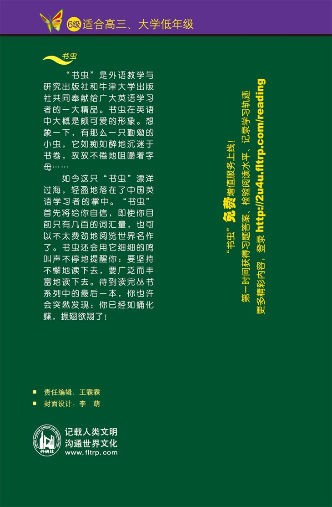